AI Cost Optimization & LLM Systems Masterclass
Ultra-detailed chronological lecture breakdown, Excalidraw whiteboard reconstructions (43 embedded figures), full verbatim transcripts (3,100+ cues), and solved labs (Labs 1–3) taught by Jeremy Hintz.
Three-Stage Architecture Progression Across Weeks 1–3
Click any diagram to inspect in full resolution, or use the tabs above to step through each lecture in exact presentation order.
Diagram 1 — Week 1: LLM Mesh Gateway, Langfuse OTel & Hardware Prefix KV Caching
Diagram 2 — Week 2: Qdrant Semantic Caching, Canary LLM-as-Judge & Context OS
Diagram 3 — Week 3: Multi-Tier Routing, FrugalGPT Cascades, RouteLLM MF & SAAR Agents
Module 1: AI Cost Dynamics, GPU Inference Mechanics, Observability & Prefix Caching
Associated Recordings:01_Week1_Live_Session_2026-10-31_AI_Cost_Dynamics_and_Observability.mp4(02:54:29) &02_Week1_Office_Hour_2026-11-03_AI_Cost_Dynamics_and_Observability.mp4(58:24)
Whiteboard: Week 1 Excalidraw (../../Lesson 1_ Foundations.excalidraw • Full PNG)
Lab Spec & Code: Lab 1 README •llm-mesh-lab•prompt-caching-lab
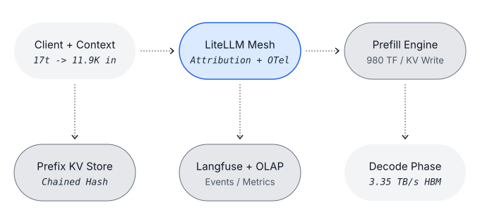
1. Tokenization & The >500x Context Amplification Effect
1.1 BPE Tokenization & Vocabulary Mechanics (00:44:00–00:53:00)
- Modern frontier models (GPT-4o and newer) use Byte-Pair Encoding (BPE) vocabularies of ~200,000 tokens.
- Whiteboard Example:
- Raw text:
"AI cost optimization is the practice of systematically reducing the total cost of ownership for AI workloads while preserving the output quality and user experience." - Token IDs:
[15836, 2853, 26329, 374, 279, 6725, 315, 60826, 18189, 279, 2860, ...] - Sub-word splitting: Morphological suffixes split into recurring sub-tokens (e.g.,
["descriptive", "-ly"]). - What Does 1 Million Tokens Look Like?
~750,000English words (~0.75words/token on standard prose, though conversion factors vary across literary corpora like the King James Bible [~780kwords], War and Peace, and Harry Potter due to archaic vocabulary and punctuation density—addressed in live Q&A at00:46:57).~4,000pages of standard printed text,~200academic papers, or~2,000news articles.
1.2 The >500x Agentic Amplification Trace (00:53:00–01:08:00)
On the Lesson 1 whiteboard, a user asks a 17-token question:
"how much seed do I need to plant grass in a circle area with radius 10ft?"
Behind the scenes, an agentic application bills 11,895 input tokens and 1,931 output tokens:
- 1. User Input:
17tokens (billed as input). - 2. System Prompt:
675tokens (e.g., Claude Opus system instructions, billed as input on every step). - 3. Tool Definitions:
~150tokens ({search_kb, calculator, get_product}schemas, billed as input on every step). - 4. Saved Memory:
~1,000tokens ("user lives in San Francisco, CA"retrieved from persistent profile store, billed as input). - 5. Retrieved RAG Chunks:
~2,500tokens (5 KB passages on Perennial Ryegrass seeding rates of 6–8 lbs per 100 sq ft, billed as input). - 6. Multi-Turn Reasoning & Tool Loop:
- Reasoning Turn 1 (
~550output tokens) + Reasoning Turn 2 (~750output tokens) + Reasoning Turn 3 (~600output tokens) + Final visible answer (Area = π × 10² ≈ 314 ft²... yields 18.8 lbs). - Because each reasoning turn re-sends the accumulated prefix + prior tool outputs, total billed tokens reach
11,895input and1,931output:
$$\text{Total Request Cost (Sonnet \$3/\$15)} = \frac{11,895 \times \$3}{10^6} + \frac{1,931 \times \$15}{10^6} = \$0.0357 + \$0.0290 \approx \$0.0647 \text{ (whiteboard rounded: \$0.052)}$$
2. Transformer Inference Mechanics: Prefill vs. Decode on GPU Hardware (01:18:00–01:32:00 & 02:41:13)
2.1 Embedding & Multi-Head Self-Attention Math
- 1. Input Matrix ($X \in \mathbb{R}^{N \times d}$): Each of the $N$ input tokens is mapped to a learned embedding vector of dimension $d$ (e.g., $d = 3072$). Semantic proximity holds in $\mathbb{R}^d$ (e.g., $\text{distance}(\text{dog}, \text{puppy}) = 0.05$, $\vec{v}(\text{king}) - \vec{v}(\text{boy}) \approx \vec{v}(\text{queen}) - \vec{v}(\text{girl})$), and self-attention disambiguates polysemous words like
"seed"across lawn care, sports tournaments, and PRNG seeds. - 2. Projections per Attention Head ($h = 1, \dots, H$, head dimension $d_h = M / H$):
- $Q = X W_Q$ ("What is this token looking for?")
- $K = X W_K$ ("What does this token have to offer?")
- $V = X W_V$ ("What does the current token contribute?")
- $\text{Attention}(Q, K, V) = \text{softmax}\left(\frac{Q K^T}{\sqrt{d_h}}\right) V$, concatenated across $H$ heads ($\text{Concat} \in \mathbb{R}^{N \times M}$) and projected via $W_O$ to produce $X'$, repeated across $L$ layers ($L \approx 70\text{--}100$).
2.2 Why Output Tokens Cost $3\times$–$5\times$ More: H100 Compute vs. Memory Bandwidth
- NVIDIA H100 SXM5 Specs (Whiteboard):
- Compute Throughput:
~980 TFLOPS(FP16/BF16 Tensor Cores). If 1 token requires~100B(0.1 TFLOP) arithmetic ops, pure compute could theoretically process $\approx 9,800$ tokens/sec. - HBM Memory Bandwidth:
~3.35 TB/sseparating off-chip HBM (where model weights and the KV cache live) from on-chip SRAM/registers.
| Phase | Operations Executed | Hardware Bottleneck | UX Metric | Billing Consequence |
|---|---|---|---|---|
| Prefill | Computes $Q, K, V$ for all $N$ input tokens in parallel (GEMM: matrix-matrix multiply); writes $K, V$ across all $L$ layers into HBM KV Cache. | Compute-bound (high arithmetic intensity; 1 weight read from HBM is amortized over $N$ tokens). | Time to First Token (TTFT) | Lower per-token cost ($P_{\text{in}}$). |
| Decode | Loads prior $K, V$ from HBM; computes $Q, K, V$ for 1 new token (GEMV: matrix-vector multiply); appends new $K, V$ to cache; streams full model weights layer-by-layer per token. | Memory-bandwidth-bound (~3.35 TB/s HBM read limit; weights loaded for just 1 token per sequence). | Tokens Per Second (TPS) / ITL | $3\times$–$5\times$ higher price ($P_{\text{out}}$). |
3. Foundational Telemetry & The LLM Mesh Architecture (01:35:00–02:08:00)
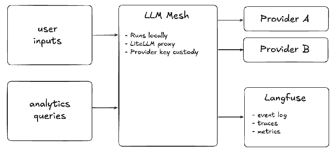
3.1 The Minimum Viable Telemetry Event (5 Schema Layers)
Every request passing through the LLM Gateway should emit a structured event containing five field groups:
- 1. Entity Data:
timestamp,request_id,trace_id,provider,model - 2. Attribution Data:
user_id,app,version,feature,tenant,session,turn_no - 3. Metered Data (Normalized Across Providers):
- OpenAI (
usageobject):prompt_tokens,completion_tokens,total_tokens - Anthropic (
usagemetadata):input_tokens,output_tokens,cache_creation_input_tokens,cache_read_input_tokens - AWS Bedrock (
responsemetadata):inputTokenCount,outputTokenCount - 4. Performance Data:
ttft_ms,tokens_per_second,e2e_latency_ms - 5. Outcome Data:
task_status,finish_reason,retry_count,aborted_session,user_feedback
This schema directly answers high-leverage FinOps questions such as:
- "How much did our
v3.4.6prompt upgrades decrease total cost of aborted support workflows for Anthropic-bound calls?" - "During the past 28 days, how many aborted sessions for our top 10% user cohort used >10k reasoning tokens and failed to produce their final output?"
4. Prompt (Prefix) Caching: Mechanics, Provider Matrix & Chained-Hash Engine (02:09:00–02:54:29)
4.1 Prompt Anatomy for Maximum Prefix Cacheability
Because KV cache blocks are keyed by a chained cryptographic hash over fixed-size token blocks ($B$ tokens per block):
$$h_k = \operatorname{Hash}\left(h_{k-1} \mathbin{\Vert} \text{tokens}[(k-1)B : kB]\right)$$
any dynamic token placed near the top of a prompt invalidates every subsequent block hash. Always structure prompts from most static to most volatile:
+-------------------------------------------------------------------+
| 1. System Prompt (Static across all users & sessions) | <- Prefix-able
| 2. Tool Schemas (Static JSON declarations) | <- Prefix-able
| 3. Reference Documents (Static or session-pinned RAG context) | <- Prefix-able
| 4. Prior User/Asst Turns (Appended chronologically per turn) | <- Incremental Prefix Hit
+-------------------------------------------------------------------+
| 5. Latest User Prompt (Dynamic tail -> billed as fresh input) | <- Uncached Tail
+-------------------------------------------------------------------+4.2 Provider Prompt Caching Comparison (Whiteboard Table)
| Provider | Activation Mechanism | Read Discount / Write Fee | TTL & Storage Hierarchy |
|---|---|---|---|
| OpenAI | Implicit via API (automatic on prefix match $\ge 1024$ tokens) | ~50% discount on cached reads; no write surcharge | Default: 5–10 min • Off-peak: 1 hr • Max: 24 hr |
| Anthropic | Explicit via cache_control params + manual breakpoints (or auto-prefix) | 90% discount on reads ($0.10\times P_{\text{in}}$) + 25% surcharge on writes ($1.25\times P_{\text{in}}$) | Default: 5 min • Extended: 1 hr (DRAM -> NVMe) |
| Google Gemini | Implicit & Explicit Context Caching | Discounted read rate | Default: 1 hr (billed per hour of storage beyond default) |
| DeepSeek | Implicit on-disk KV cache | Automatic prefix block reuse | Disk-backed multi-turn TTL |
Week 1 Live Session: Fundamentals of AI Cost Dynamics & Observability (Sat, Oct 31 • 02:54:29)
Presented below in the exact top-to-bottom sequence Jeremy Hintz walked through on the Lesson 1 Excalidraw whiteboard, followed by the complete 5-minute windowed transcript and live Zoom chat log.
Module 1: AI Cost Dynamics, GPU Inference Mechanics, Observability & Prefix Caching
Associated Recordings:01_Week1_Live_Session_2026-10-31_AI_Cost_Dynamics_and_Observability.mp4(02:54:29) &02_Week1_Office_Hour_2026-11-03_AI_Cost_Dynamics_and_Observability.mp4(58:24)
Whiteboard: Week 1 Excalidraw (../../Lesson 1_ Foundations.excalidraw • Full PNG)
Lab Spec & Code: Lab 1 README •llm-mesh-lab•prompt-caching-lab
1. Tokenization & The >500x Context Amplification Effect
1.1 BPE Tokenization & Vocabulary Mechanics (00:44:00–00:53:00)
- Modern frontier models (GPT-4o and newer) use Byte-Pair Encoding (BPE) vocabularies of ~200,000 tokens.
- Whiteboard Example:
- Raw text:
"AI cost optimization is the practice of systematically reducing the total cost of ownership for AI workloads while preserving the output quality and user experience." - Token IDs:
[15836, 2853, 26329, 374, 279, 6725, 315, 60826, 18189, 279, 2860, ...] - Sub-word splitting: Morphological suffixes split into recurring sub-tokens (e.g.,
["descriptive", "-ly"]). - What Does 1 Million Tokens Look Like?
~750,000English words (~0.75words/token on standard prose, though conversion factors vary across literary corpora like the King James Bible [~780kwords], War and Peace, and Harry Potter due to archaic vocabulary and punctuation density—addressed in live Q&A at00:46:57).~4,000pages of standard printed text,~200academic papers, or~2,000news articles.
1.2 The >500x Agentic Amplification Trace (00:53:00–01:08:00)
On the Lesson 1 whiteboard, a user asks a 17-token question:
"how much seed do I need to plant grass in a circle area with radius 10ft?"
Behind the scenes, an agentic application bills 11,895 input tokens and 1,931 output tokens:
- 1. User Input:
17tokens (billed as input). - 2. System Prompt:
675tokens (e.g., Claude Opus system instructions, billed as input on every step). - 3. Tool Definitions:
~150tokens ({search_kb, calculator, get_product}schemas, billed as input on every step). - 4. Saved Memory:
~1,000tokens ("user lives in San Francisco, CA"retrieved from persistent profile store, billed as input). - 5. Retrieved RAG Chunks:
~2,500tokens (5 KB passages on Perennial Ryegrass seeding rates of 6–8 lbs per 100 sq ft, billed as input). - 6. Multi-Turn Reasoning & Tool Loop:
- Reasoning Turn 1 (
~550output tokens) + Reasoning Turn 2 (~750output tokens) + Reasoning Turn 3 (~600output tokens) + Final visible answer (Area = π × 10² ≈ 314 ft²... yields 18.8 lbs). - Because each reasoning turn re-sends the accumulated prefix + prior tool outputs, total billed tokens reach
11,895input and1,931output:
$$\text{Total Request Cost (Sonnet \$3/\$15)} = \frac{11,895 \times \$3}{10^6} + \frac{1,931 \times \$15}{10^6} = \$0.0357 + \$0.0290 \approx \$0.0647 \text{ (whiteboard rounded: \$0.052)}$$
2. Transformer Inference Mechanics: Prefill vs. Decode on GPU Hardware (01:18:00–01:32:00 & 02:41:13)
2.1 Embedding & Multi-Head Self-Attention Math
- 1. Input Matrix ($X \in \mathbb{R}^{N \times d}$): Each of the $N$ input tokens is mapped to a learned embedding vector of dimension $d$ (e.g., $d = 3072$). Semantic proximity holds in $\mathbb{R}^d$ (e.g., $\text{distance}(\text{dog}, \text{puppy}) = 0.05$, $\vec{v}(\text{king}) - \vec{v}(\text{boy}) \approx \vec{v}(\text{queen}) - \vec{v}(\text{girl})$), and self-attention disambiguates polysemous words like
"seed"across lawn care, sports tournaments, and PRNG seeds. - 2. Projections per Attention Head ($h = 1, \dots, H$, head dimension $d_h = M / H$):
- $Q = X W_Q$ ("What is this token looking for?")
- $K = X W_K$ ("What does this token have to offer?")
- $V = X W_V$ ("What does the current token contribute?")
- $\text{Attention}(Q, K, V) = \text{softmax}\left(\frac{Q K^T}{\sqrt{d_h}}\right) V$, concatenated across $H$ heads ($\text{Concat} \in \mathbb{R}^{N \times M}$) and projected via $W_O$ to produce $X'$, repeated across $L$ layers ($L \approx 70\text{--}100$).
2.2 Why Output Tokens Cost $3\times$–$5\times$ More: H100 Compute vs. Memory Bandwidth
- NVIDIA H100 SXM5 Specs (Whiteboard):
- Compute Throughput:
~980 TFLOPS(FP16/BF16 Tensor Cores). If 1 token requires~100B(0.1 TFLOP) arithmetic ops, pure compute could theoretically process $\approx 9,800$ tokens/sec. - HBM Memory Bandwidth:
~3.35 TB/sseparating off-chip HBM (where model weights and the KV cache live) from on-chip SRAM/registers.
| Phase | Operations Executed | Hardware Bottleneck | UX Metric | Billing Consequence |
|---|---|---|---|---|
| Prefill | Computes $Q, K, V$ for all $N$ input tokens in parallel (GEMM: matrix-matrix multiply); writes $K, V$ across all $L$ layers into HBM KV Cache. | Compute-bound (high arithmetic intensity; 1 weight read from HBM is amortized over $N$ tokens). | Time to First Token (TTFT) | Lower per-token cost ($P_{\text{in}}$). |
| Decode | Loads prior $K, V$ from HBM; computes $Q, K, V$ for 1 new token (GEMV: matrix-vector multiply); appends new $K, V$ to cache; streams full model weights layer-by-layer per token. | Memory-bandwidth-bound (~3.35 TB/s HBM read limit; weights loaded for just 1 token per sequence). | Tokens Per Second (TPS) / ITL | $3\times$–$5\times$ higher price ($P_{\text{out}}$). |
3. Foundational Telemetry & The LLM Mesh Architecture (01:35:00–02:08:00)
3.1 The Minimum Viable Telemetry Event (5 Schema Layers)
Every request passing through the LLM Gateway should emit a structured event containing five field groups:
- 1. Entity Data:
timestamp,request_id,trace_id,provider,model - 2. Attribution Data:
user_id,app,version,feature,tenant,session,turn_no - 3. Metered Data (Normalized Across Providers):
- OpenAI (
usageobject):prompt_tokens,completion_tokens,total_tokens - Anthropic (
usagemetadata):input_tokens,output_tokens,cache_creation_input_tokens,cache_read_input_tokens - AWS Bedrock (
responsemetadata):inputTokenCount,outputTokenCount - 4. Performance Data:
ttft_ms,tokens_per_second,e2e_latency_ms - 5. Outcome Data:
task_status,finish_reason,retry_count,aborted_session,user_feedback
This schema directly answers high-leverage FinOps questions such as:
- "How much did our
v3.4.6prompt upgrades decrease total cost of aborted support workflows for Anthropic-bound calls?" - "During the past 28 days, how many aborted sessions for our top 10% user cohort used >10k reasoning tokens and failed to produce their final output?"
4. Prompt (Prefix) Caching: Mechanics, Provider Matrix & Chained-Hash Engine (02:09:00–02:54:29)
4.1 Prompt Anatomy for Maximum Prefix Cacheability
Because KV cache blocks are keyed by a chained cryptographic hash over fixed-size token blocks ($B$ tokens per block):
$$h_k = \operatorname{Hash}\left(h_{k-1} \mathbin{\Vert} \text{tokens}[(k-1)B : kB]\right)$$
any dynamic token placed near the top of a prompt invalidates every subsequent block hash. Always structure prompts from most static to most volatile:
+-------------------------------------------------------------------+
| 1. System Prompt (Static across all users & sessions) | <- Prefix-able
| 2. Tool Schemas (Static JSON declarations) | <- Prefix-able
| 3. Reference Documents (Static or session-pinned RAG context) | <- Prefix-able
| 4. Prior User/Asst Turns (Appended chronologically per turn) | <- Incremental Prefix Hit
+-------------------------------------------------------------------+
| 5. Latest User Prompt (Dynamic tail -> billed as fresh input) | <- Uncached Tail
+-------------------------------------------------------------------+4.2 Provider Prompt Caching Comparison (Whiteboard Table)
| Provider | Activation Mechanism | Read Discount / Write Fee | TTL & Storage Hierarchy |
|---|---|---|---|
| OpenAI | Implicit via API (automatic on prefix match $\ge 1024$ tokens) | ~50% discount on cached reads; no write surcharge | Default: 5–10 min • Off-peak: 1 hr • Max: 24 hr |
| Anthropic | Explicit via cache_control params + manual breakpoints (or auto-prefix) | 90% discount on reads ($0.10\times P_{\text{in}}$) + 25% surcharge on writes ($1.25\times P_{\text{in}}$) | Default: 5 min • Extended: 1 hr (DRAM -> NVMe) |
| Google Gemini | Implicit & Explicit Context Caching | Discounted read rate | Default: 1 hr (billed per hour of storage beyond default) |
| DeepSeek | Implicit on-disk KV cache | Automatic prefix block reuse | Disk-backed multi-turn TTL |
1. Chronological Whiteboard Walkthrough (Lesson 1 Canvas Order + 19 Embedded Figures)
Welcome to AI Cost Optimization
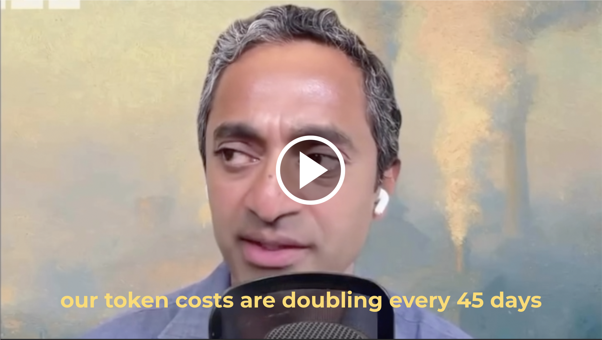
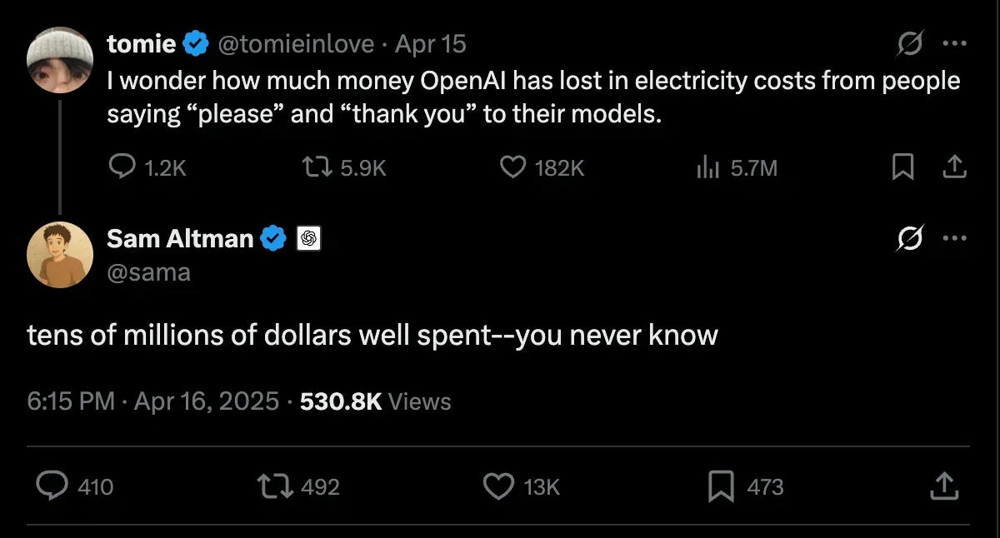
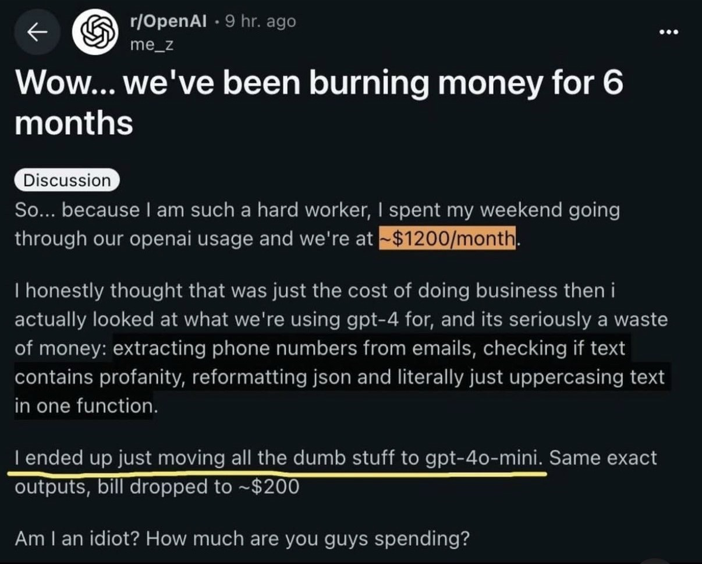
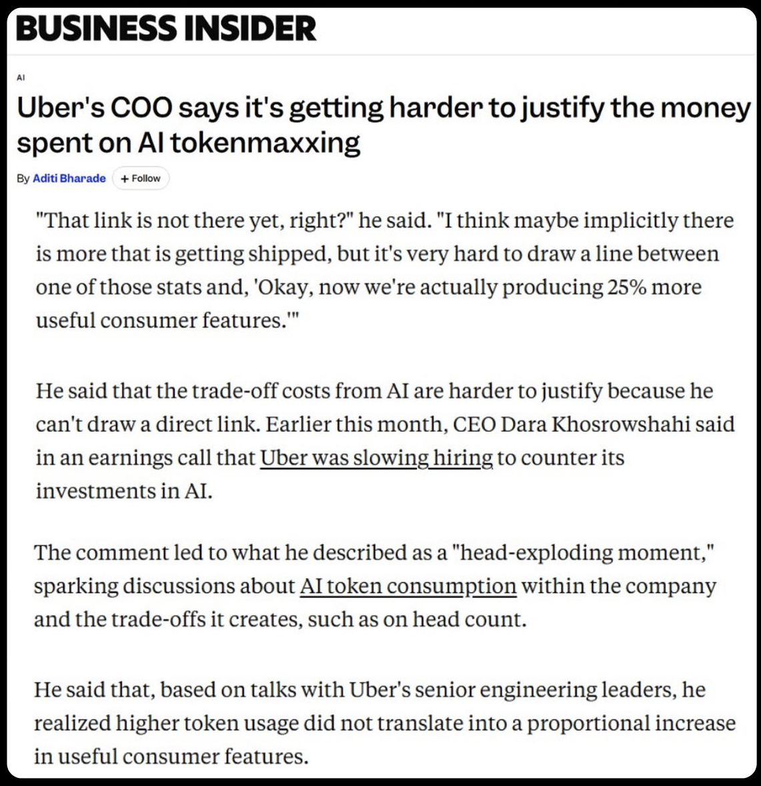
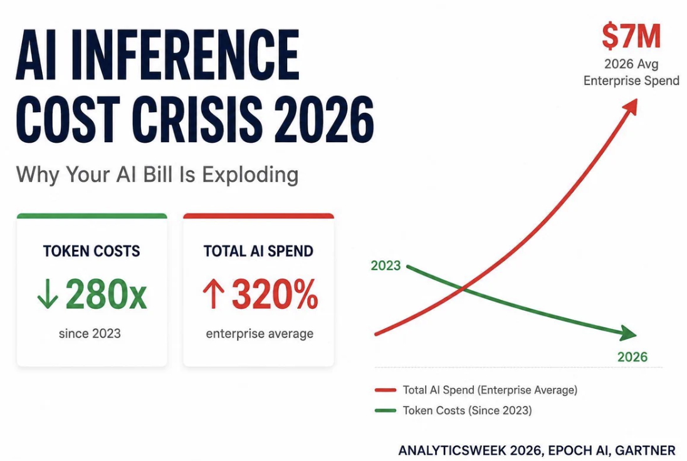
A bit about this course
Logistics Overview
A bit about me
Jeremy
How about y'all ?
Lesson 1: Fundamentals of AI Cost Dynamics and Observability
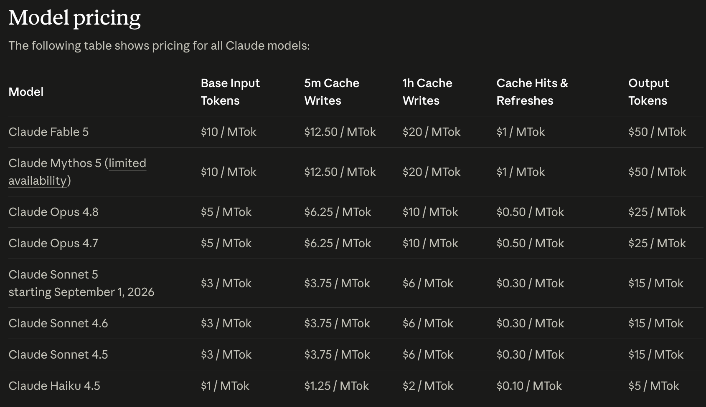
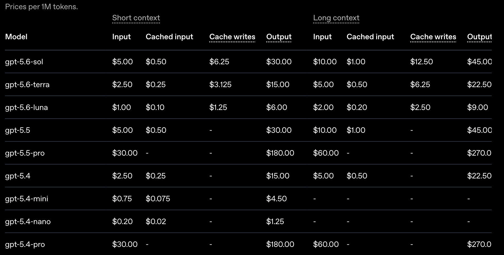
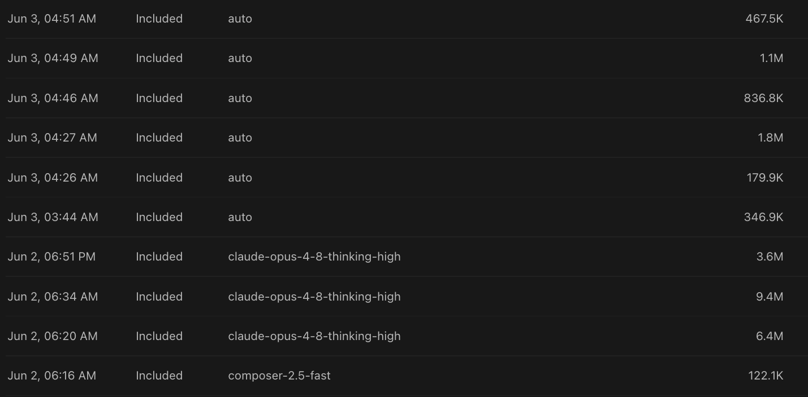
The key to theory: know just enough to have some idea of how things work

LLM inference Mechanics (in 5 minutes or less)
LLM
d
N
X
Q
W_Q
. . .
V
X'
x
Q
K
K
X
W_K
Attention
V
W_V
Pre-fill
Decode

Pre-fill
Decode

Basic Telemetry: What we must capture
Minimum Viable Event
Entity Data
. . .
Attribution Data
Example Questions we'd like to be able to answer:
Metered Data
Performance Data
Outcome Data
Illustrative System Design for Telemetry
Many pre-rolled LLM Telemetry tools exist. For exercises, we will use Langfuse (#not_sponsored)
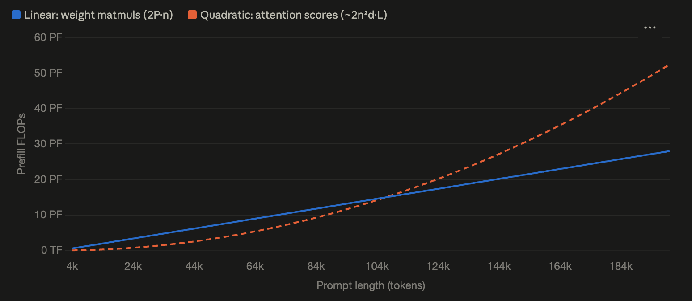
LLM Gateway (AKA LLM Mesh) Double-Click

Popular LLM Gateways

DEMO
Optimizations, finally :)
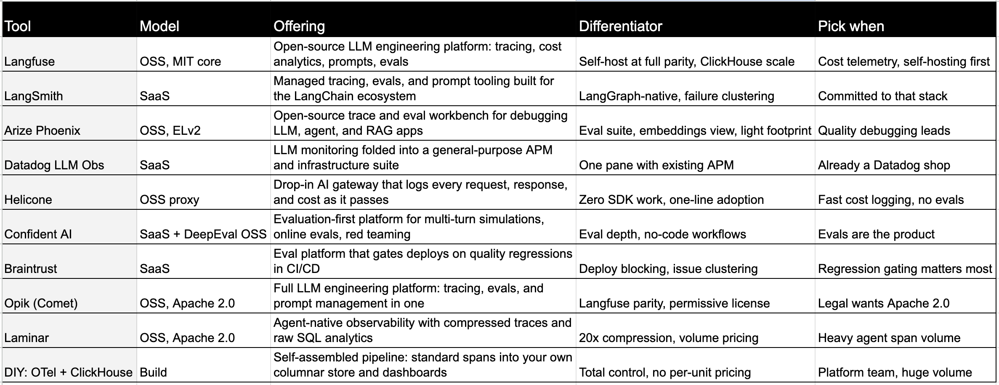
First optimization: prompt caching
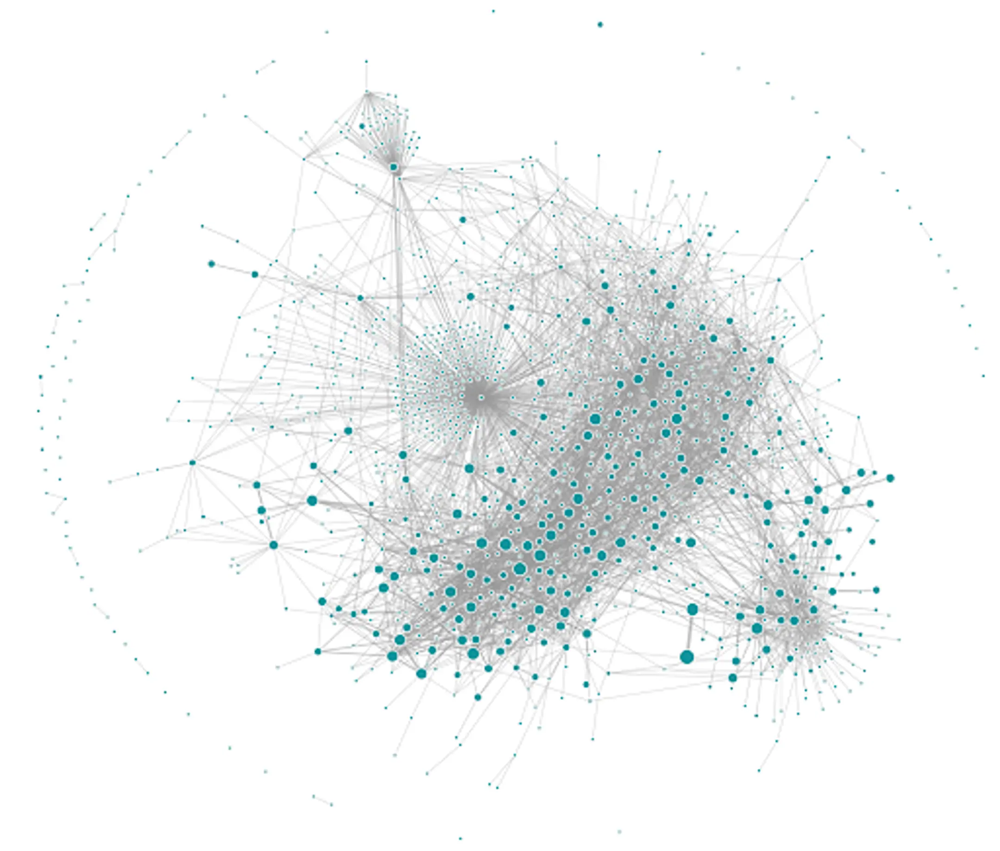
Let's go back to the idea of context...
How prompt caching works
LLM
Further Reading
Provider Comparison
Anatomy of a Prompt
DEMO TIME
What this course is really about
Context Engineering Requires us to Optimize for both Cost and Quality
Our goal: Engineer a system that nails the sweet spot of minimizing cost for the "right" level of quality, but not more.
Quality
Cost
Maturity Levels of Context Engineering, AKA the flow of this course
Between now and next time: Build an LLM Mesh + Obseravibility
Walkthrough
We'll use this Mesh + Observability in all the future exercises to come :)
Questions?
2. Complete Chronological Video Transcript & Interleaved Zoom Chat (00:00:00 – 03:18:27)
00:20:22 – 00:25:05 Week 1 Live Session • Part 1 (3 speaker turns, 14 chat Q&As) Good morning, everybody!...
00:25:05 – 00:30:12 Week 1 Live Session • Part 2 (1 speaker turns, 5 chat Q&As) If you haven't seen, I'm actually gonna go a little bit out of order from my original outline, outline here. This is our course portal. If y...
00:30:12 – 00:34:57 Week 1 Live Session • Part 3 (1 speaker turns) quote-unquote chat GPT-type use cases, like the chatbots that maybe some of you have also been using. The real goal is to not only, you know...
00:35:27 – 00:40:04 Week 1 Live Session • Part 4 (7 speaker turns, 9 chat Q&As) Alright, Poonam works for TELUS Canada, and working more on Clod Code. Cost optimization monthly budget. Nice. Okay, nice to meet you, Poona...
00:40:04 – 00:45:05 Week 1 Live Session • Part 5 (1 speaker turns, 5 chat Q&As) Alright. Private investor, personal projects, cool. Yeah, I wanted to touch on that as well. Ben's message is definitely top of mind for me ...
00:45:05 – 00:50:00 Week 1 Live Session • Part 6 (1 speaker turns, 5 chat Q&As) Okay, so that's great. Again, I'm pretty sure I'm not giving you new information here. Everybody probably already knew what a token was. But...
00:50:01 – 00:55:07 Week 1 Live Session • Part 7 (1 speaker turns, 1 chat Q&As) when you type into an LLM, like, let's just say it's kind of like GPT-3 kind of era LLM, that didn't have a ton of, like, tools wrapped arou...
00:55:07 – 01:00:04 Week 1 Live Session • Part 8 (1 speaker turns, 1 chat Q&As) basically, like, what the LLM tries to remember about you, either from past sessions or past sources or whatever the case may be. That's typ...
01:00:05 – 01:05:07 Week 1 Live Session • Part 9 (1 speaker turns, 5 chat Q&As) So, okay, before I get for… to food for thought, let me catch up on some of the questions in the chat. And again, feel free, if it's easier ...
01:05:07 – 01:09:59 Week 1 Live Session • Part 10 (1 speaker turns) default, when I type something like this, I'm not expecting it to cost a ton of money. Like, it seems like a very simple question, but again...
01:10:00 – 01:15:08 Week 1 Live Session • Part 11 (1 speaker turns) So up here, this LLM, if we wanted to go into that black box, what would it look like? We talked about tokenization earlier. When you type s...
01:15:08 – 01:20:07 Week 1 Live Session • Part 12 (1 speaker turns) And it multiplies it by a few weight matrices to get these other matrices that we call Q, K, and V. So basically, like, X times this weight ...
01:20:07 – 01:25:11 Week 1 Live Session • Part 13 (1 speaker turns, 1 chat Q&As) And that means that, like, hey, one token is actually going through about 100 billion arithmetic ops during the process of doing this matrix...
01:25:12 – 01:30:23 Week 1 Live Session • Part 14 (1 speaker turns, 2 chat Q&As) That's… that's all under the hood, running pre-fill, whereas the decode is what you would see, like, the speed at which the next tokens are ...
01:30:23 – 01:35:00 Week 1 Live Session • Part 15 (1 speaker turns, 1 chat Q&As) too much might actually impact the quality or the performance of our model, and so we wouldn't want to, say, optimize for cost so much that ...
01:35:00 – 01:40:16 Week 1 Live Session • Part 16 (1 speaker turns, 4 chat Q&As) If you have the ability to structure your data. More cleanly, for instance, in a graph format, where you can say, like, hey, instead of, lik...
01:40:17 – 01:45:01 Week 1 Live Session • Part 17 (1 speaker turns, 3 chat Q&As) Now, okay, this is the system design that you can imagine. a lot of pre-rolled telemetry tools exist, meaning, like, you don't necessarily h...
01:45:02 – 01:50:15 Week 1 Live Session • Part 18 (1 speaker turns) Many of you, if you're as old as me, came from a time where, microservice architecture kind of was the hotness in Silicon Valley. A lot of u...
01:50:15 – 01:55:05 Week 1 Live Session • Part 19 (1 speaker turns, 1 chat Q&As) 150 milliseconds extra is actually not such a big deal in the grand scheme of things for an LLM inference call. While it might have been for...
01:55:05 – 02:00:08 Week 1 Live Session • Part 20 (1 speaker turns, 2 chat Q&As) What the… what model should be routed for given. queries, this is data that we could use. to make those types of decisions. So… You can see ...
02:00:10 – 02:05:12 Week 1 Live Session • Part 21 (1 speaker turns, 2 chat Q&As) And so, okay, one thing we might want to look at is, are we input heavy or output heavy? And by input and output, I mean the input tokens an...
02:05:12 – 02:10:11 Week 1 Live Session • Part 22 (1 speaker turns, 2 chat Q&As) Across all of these different matrices, and we're putting them to the side for use later. And that's actually why we called this an input ca...
02:10:11 – 02:15:08 Week 1 Live Session • Part 23 (1 speaker turns, 1 chat Q&As) into IDEs, I would say the answer is probably yes. the… I'm not aware of, in particular, like, JetBrains. kind of setup, but for VS Code, fo...
02:15:08 – 02:20:04 Week 1 Live Session • Part 24 (1 speaker turns, 2 chat Q&As) Let's see, the lesson here… Actually, what I did here was I just, obviously, help, with AI's help, wrote a little prompt caching experiment,...
02:20:05 – 02:25:02 Week 1 Live Session • Part 25 (1 speaker turns, 7 chat Q&As) Do the process of load the system prompt, load the contract, load the turns, load, load, load, and then recompute the attention matrices for...
02:25:02 – 02:30:10 Week 1 Live Session • Part 26 (1 speaker turns, 1 chat Q&As) the API request with prompt caching set to true. you can see it looks very different. The original, cost is about the same, it's 3 seconds. ...
02:30:12 – 02:35:00 Week 1 Live Session • Part 27 (1 speaker turns, 3 chat Q&As) Okay. On the surface, it doesn't seem that bad, right? Because, like, okay, you're still getting… I don't know, I'm just kind of randomly re...
02:35:00 – 02:39:58 Week 1 Live Session • Part 28 (1 speaker turns, 1 chat Q&As) The short answer to your question is yes, compaction can still take advantage of prompt caching, but you have to do the compaction intellige...
02:40:00 – 02:45:11 Week 1 Live Session • Part 29 (3 speaker turns, 8 chat Q&As) Alright. Let's… get to Q&A. I'm sure a lot of y'all have questions, maybe they're specific about, like, stuff you're working on, maybe they'...
02:45:12 – 02:50:10 Week 1 Live Session • Part 30 (1 speaker turns, 2 chat Q&As) Sentence, or in this prompt. And so… typically what folks kind of illustrate as these matrix mean is basically, like, some of these matrices...
02:50:10 – 02:55:12 Week 1 Live Session • Part 31 (1 speaker turns, 5 chat Q&As) If we're thinking about… reading as something that requires some waiting for the GPU, it actually doesn't amortize as well when we think abo...
02:55:12 – 03:00:02 Week 1 Live Session • Part 32 (7 speaker turns, 2 chat Q&As) is sitting on DRAM, or sometimes SSD. Like, basically, like, what you're actually caching, right, is this, like, giant set of matrices, or t...
03:00:04 – 03:05:00 Week 1 Live Session • Part 33 (17 speaker turns) Okay, thank you....
03:05:01 – 03:10:07 Week 1 Live Session • Part 34 (4 speaker turns, 6 chat Q&As) I see. You want someone who is, like, focusing on retrieval pipelines, so you can imagine, like… like, let's go back to… I'll just pick some...
03:10:07 – 03:14:59 Week 1 Live Session • Part 35 (10 speaker turns, 1 chat Q&As) You know, get your thoughts....
03:15:00 – 03:19:03 Week 1 Live Session • Part 36 (7 speaker turns, 2 chat Q&As) bunches of requests. And, like, doing them all together, and so each one of them is going to take longer individually. Like, it's not even r...
Week 1 Office Hour: Deep-Dive Q&A on Batching, Context Structure & Attribution (Tue, Nov 3 • 58:24)
Complete chronological transcript and Zoom chat questions from the 58:24 Week 1 Office Hour recording.
00:00:06 – 00:05:06 Week 1 Office Hour • Part 1 (12 speaker turns) Anything to talk about either the lesson, the assignment, stuff going on in your own world that's kind of applicable to what we've learned, ...
00:05:07 – 00:10:00 Week 1 Office Hour • Part 2 (6 speaker turns) I'll call them not quite at the application layer, but maybe call them at, like, the agent layer, or the, like, model interface layer. Those...
00:10:00 – 00:15:04 Week 1 Office Hour • Part 3 (8 speaker turns) one node, now you have to go to multi-node deployment strategies. And again, there are other techniques, like tensor parallelism. you know, ...
00:15:04 – 00:20:07 Week 1 Office Hour • Part 4 (11 speaker turns) Perhaps by, like. the subject of the question, especially if you're operating within a constrained environment where, like, maybe your produ...
00:20:07 – 00:25:05 Week 1 Office Hour • Part 5 (4 speaker turns) Specifically for employees, though, we need to ensure that the accuracy is there, whenever we perform kind of like this AIOCR, right? So, es...
00:25:06 – 00:30:04 Week 1 Office Hour • Part 6 (8 speaker turns, 1 chat Q&As) you need to, like, you know… basically, it's an LLM that knows if it should be confident or not, which is… something you have to give it cri...
00:30:05 – 00:35:05 Week 1 Office Hour • Part 7 (7 speaker turns) Yeah, Jev, as a model router is definitely an active area of research. I think it's still early enough that it's, frankly speaking, not perf...
00:35:05 – 00:39:59 Week 1 Office Hour • Part 8 (11 speaker turns) outside Meta time have not really explored what is offered by AWS, or what is offered broadly, but those are the… I guess those are the two ...
00:40:00 – 00:45:07 Week 1 Office Hour • Part 9 (21 speaker turns) And when you say region, this is more the AWS region, or do you talk about something different?...
00:45:07 – 00:50:06 Week 1 Office Hour • Part 10 (3 speaker turns, 1 chat Q&As) Implement that on an agent… on a more agentic system rather than the chat-based conversations earlier....
00:50:06 – 00:55:00 Week 1 Office Hour • Part 11 (4 speaker turns) recommend breaking those tasks into steps, so each goes… each, each step goes to the right model, right? Specifically, I'm curious about how...
00:55:08 – 00:58:02 Week 1 Office Hour • Part 12 (9 speaker turns) And then, I think your last question here, how can a team decide whether to use knowledge graphs, RAG, summarization, or compaction for cont...
Week 2 Live Session: Token Efficiency Techniques — Semantic Caching & Context Compression (Sat, Nov 7 • 02:07:44)
Module 2: Semantic Caching, Workflow Compilation & Context OS
Associated Recordings:03_Week2_Live_Session_2026-11-07_Token_Efficiency_Techniques.mp4(02:07:44) &04_Week2_Office_Hour_2026-11-10_Token_Efficiency_Techniques.mp4(22:28)
Whiteboard: Week 2 Excalidraw (../../Lesson 2_ Caching & Compression.excalidraw • Full PNG)
Lab Spec & Code: Lab 2 README •rag-lab•context-os-lab
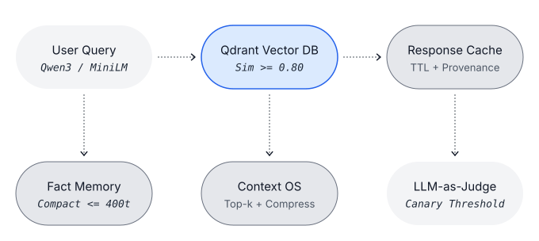
1. Beyond Prefix Caching: Exact-Match vs. Semantic Caching (00:08:00–00:40:00)
Prefix caching cuts input KV compute when prompts start byte-for-byte identically, but it still invokes the LLM and pays full output token costs on every request. When thousands of users ask semantically equivalent questions ("What's your return/refund policy?", "Can I return my last purchase?", "I'd like a refund, please"), Semantic Caching intercepts the request inside the LLM Gateway and returns a cached completion (llm_calls = 0).
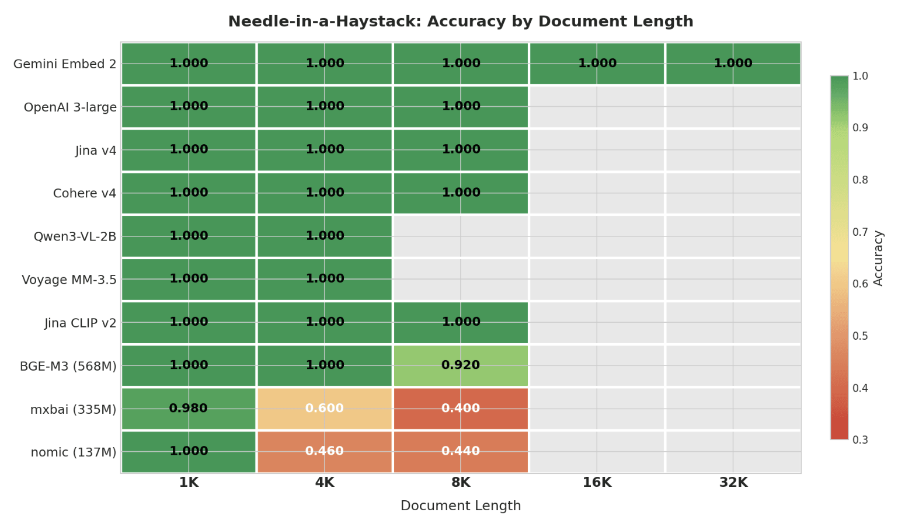
1.1 Symmetric vs. Asymmetric Embedding Spaces (00:25:00–00:36:00)
- Asymmetric Retrieval Space (Standard RAG): Embeds a short
queryagainst a longdocument passage. - Symmetric Retrieval Space (Semantic Cache Lookup): Embeds an incoming
queryagainst previously cachedqueries(query-to-queryduplicate detection). Never compare an incoming query vector against cached answer vectors. - Whiteboard Model Recommendations:
- Self-Hosted Pick:
Qwen3-Embedding-0.6B(Apache 2.0, instruction-tuned to steer toward duplicate detection, low latency). - Managed API Pick:
jina-embeddings-vN(supportstask="text-matching"for symmetric similarity,~$0.02 / 1Mtokens). - Local Lab Default:
sentence-transformers/all-MiniLM-L6-v2(~90 MB, 384-d cosine space). - Codebase Retrieval Pick (Office Hour 2):
MongoDB/voyage-code-3& arXiv:2605.15184v1. - Cost Reality Check: The embedding model runs on every request (including misses) (
~$0.000003/request at$0.02/1Mtokens), whereas only cache hits pay back ($0.011/request saved).
2. Selecting What to Cache, Seeding & Canary Quality Control (00:36:00–01:05:00)
2.1 What Is Safe to Cache?
| Good Candidates (Universal, Stable, Self-Contained) | Bad Candidates (User-Specific, Mutating, Real-Time) |
|---|---|
"What's your refund policy?" | "What's the status of my refund?" (requires user order lookup) |
"Do you ship internationally?" | "Where is my package?" (stateful per-user tracking) |
"How do I reset my password?" | "Reset my password" (side-effectful action) or live election/market queries (01:55:39) |
2.2 The Opposite-Intent Neighborhood Trap
"Cacheability is a property of the entry, but risk is a property of the neighborhood."
Consider four queries in embedding space:
"How do I enable two-factor auth?"/"How do I set up two-factor auth?""How do I disable two-factor auth?"/"How do I turn off two-factor auth?"
Because they share almost identical lexical tokens, a loose threshold can return the enable 2FA instructions to a user trying to turn off 2FA. Three mitigations from the whiteboard:
- 1. Dynamic Per-Topic Thresholds: Use a tighter similarity threshold (e.g.,
0.90+) on high-risk topics (security, billing) and a looser threshold (0.78–0.82) on low-risk FAQs. - 2. Dense Paraphrase Seeding: Seed both positive (
Q1 -> A1) and negative/opposite (Q2 -> A2) phrasings so nearest-neighbor Voronoi cells separate cleanly. - 3. Unified Answers: Write
A1to cover both enabling and disabling 2FA ("To toggle 2FA on or off, go to Settings > Security...") so a neighborhood collision still answers the user's question!
2.3 Offline Seeding Pipeline & Live Canary Monitoring
- 1. Offline Seeding (
Raw Query Dump -> Curate): - Collect $N$ samples over $M$ days of traffic $\to$ Admission Filter (strip PII, multi-turn, and user-specific queries) $\to$ Embed & Cluster (
HDBSCAN) $\to$ Rank by Value:
$$\text{Cluster Value} = \left(\text{Token Cost of Response}\right) \times \left(\text{Number of Clustered Queries}\right)$$
- Curate verified Q&A pairs and set aside a golden evaluation split.
- 2. Continuous Miss Mining: Log cache misses (
vector + original query + distance to nearest cluster) $\to$ run nightlyHDBSCANclustering + LLM-as-Judge filtering to expand the cache. - 3. Provenance-Based Invalidation: Store metadata alongside every cached response:
response: "Refunds must be requested no more than 30 days after purchase..."
provenance: kb/refund-policy@v7
ttl: 30dWhen kb-updates or provider-updates (model upgrades) fire, invalidate matching provenance tags immediately rather than serving stale answers until TTL expiry.
- 4. Live Canary False-Positive Detection: On
X%of production cache hits, asynchronously execute the full RAG + LLM workflow in the background and pass(Cached Response, Full Response)to an LLM-as-Judge. If the canary false-positive rate exceedsX%, automatically tightensimilarity_threshold!
3. Component & Workflow Caching ("Procedural Memory") (01:05:00–01:18:00)
When a request requires user-specific data ("I'd like a refund, please"), full-response semantic caching cannot be used directly. Instead, cache the workflow plan (Plan Caching / Workflow Compilation):
- 1. Step 1 — Retrieve Policy (
Retrieval Cache): Cache"Retrieve refund policy" -> refund_policy_doc. - 2. Step 2 — Resolve Order (
Tool Schema Cache): Cache"Get user's most recent order" -> get_orders(user_id, sort=recent, limit=1). - 3. Step 3 — Apply Policy (
Rule Compiler): Compile prose policy rules into deterministic execution: - Option 1: Reusable Agent Skills
- Option 2: Encoded Decision Tree (
days_bucket | category | opened | payment -> decision) - Option 3: LLM Writes Code (compiled once and refreshed only when
sha256(policy)orsha256(toolset)changes):
{
"intent": "refund_inquiry",
"plan_version": "v3",
"compiled_against": { "toolset": "sha256:a41b...", "policy": "sha256:9f2c..." }
}- Napkin Math: A 4-step Sonnet (
$3/$15) refund agent costs$0.0571per request (2,550 -> 5,200 -> 8,100 -> 11,400compounding input tokens across steps) with only prompt caching; compiling the workflow into a cached plan + deterministic rule table cuts cost by >85%.
4. Context Rot, Compression, Compaction & Memory Hierarchy (01:18:00–02:07:44)
4.1 Context Rot (Chroma Research)
- Even when frontier models advertise 200K–1M token context windows, accuracy degrades sharply as input length increases ("Smart Zone" vs. "Dumb Zone" discussed at
01:26:38). Keeping context lean improves both accuracy and cost.
4.2 Extractive Compression vs. Conversation Compaction
| Dimension | Extractive Compression (compress) | Conversation Compaction (compact) |
|---|---|---|
| Scope & Trigger | Per-request, query-aware: runs on retrieved RAG chunks (max_tokens: 120). | Per-conversation, query-unaware: runs when history exceeds token_budget: 400 (or at 85%–90% context capacity). |
| Mechanism | Scores sentences by lexical/semantic overlap with the current query and drops non-overlapping sentences. | Retains system prompt + newest turn suffix; replaces evicted turns with [compacted: N earlier turns] or an LLM summary. |
| Failure Mode | Can drop a bridging or exception sentence that lacked query keywords. | Drops early turns containing durable entities (e.g., Turn 1 order_id or account_id), requiring a companion Fact Store Memory. |
4.3 The Three-Tier Agent Memory Hierarchy & Retrieval Cost Trade-Off
- 1. Working Memory: The active, managed context window sent on the current turn.
- 2. Procedural & Episodic Memory: Snapshots of past actions, execution traces, and learned skills/plans.
- 3. Semantic Memory: Extracted user facts, preferences, and domain knowledge stored in a Vector DB.
- Why Remembering Everything Backfires (Whiteboard Curve): As the number of stored memories grows, marginal utility plateaus while retrieval noise and re-ranking cost climb (e.g., querying "What is Jeremy's favorite color?" pulls
"green bean casserole","gray Jeep","Brown Eyed Girl", and"selected blue on form"). Only extract high-utility, durable facts during compaction.
1. Chronological Whiteboard Walkthrough (Lesson 2 Canvas Order + 7 Embedded Figures)
Welcome Back!
As we wait for folks to join (we'll start 2-3 minutes in), drop in the chat the coolest development you saw in the AI space this week. Could be something you learned in this course ;) or something that happened in academia or industry My pick: Kimi K3.1 Pro (3T param model) now fully open-weight: https://huggingface.co/moonshotai/Kimi-K3.1-Pro btw, shameless plug to not miss Lesson 4 when we'll be diving into using open models and the economics of local vs API / frontier
Lesson 2: Caching and Context Compression
Caching: Beyond the Basics
LLM
Documents
This is the idea behind semantic caching: use the clustered meanings of common inputs to circumvent model invocation
Exact-Match Caching
In some cases, you can cache in a key-value style, and read a pre-populated response from a response cache
Response Cache
LLM Gateway
Semantic Caching
How it works
Vector DBs & Similarity Search
Embed
We can use those embedding models to cluster or group queries that are similar
There are also embedding models that can be used similarly for the purposes of comparing longer strings of words, i.e. sentences
Response Cache
Remember from last time: vectorized word embeddings in large-dimensional space helped us model the meaning of words
Vector DB
LLM Gateway
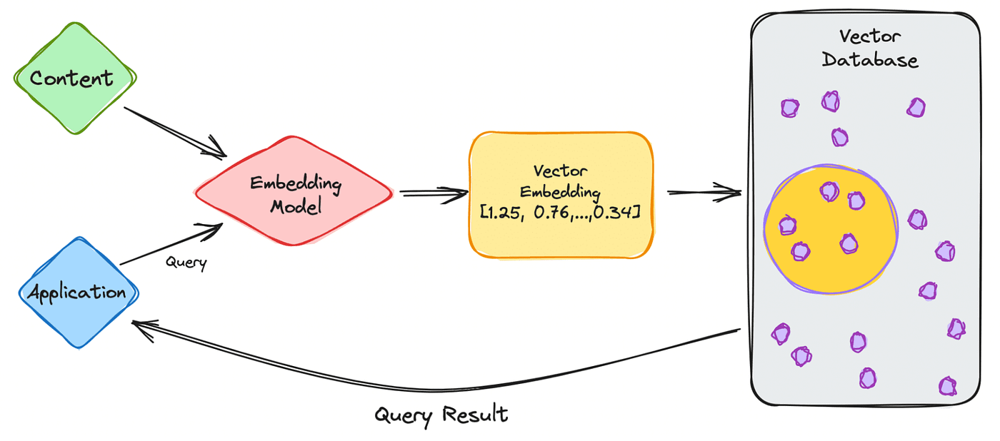
Seeding the Vector DB
Response Cache
Query Vectors
Q1
Q1
A1
Q2
Q2
A1
Q3
A1
Q3
DEMO TIME
Tradeoffs & Considerations
1. Choosing an embedding model
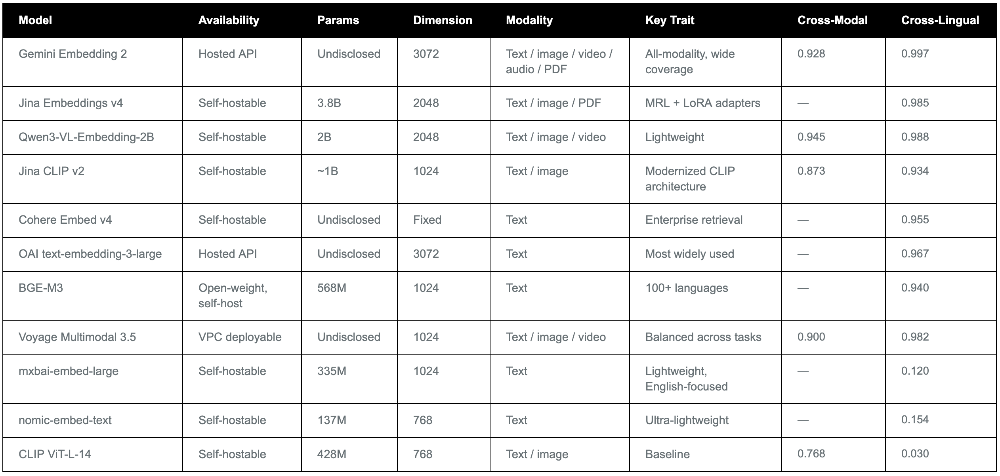

Asymmetric retrieval space
Symmetric retrieval space
For cache lookup, embed both the cached queries and the incoming query in "query" mode
Instruction-tuned embedders (e.g. Qwen3-Embedding, E5-Mistral lineage) can steer towards dupe-detection rather than Q&A
Overall Pick: Qwen3-Embedding-0.6B
The embedding runs on every request including misses. Latency and price is incurred for every request, but only hits pay back. Bigger models willl discren intent better, but you'll pay 100% of the time for the X% of traffic that hits. X is use case dependent.
- Self host + Apache 2.0 - Instruction-Tuned - High performance, low latency on symmetric tasks
API Option: jina-embeddings-vN
- Convenience with API + AWS / Azure / GCP billing - Can be configured for symmetric retrieval w/ task="text-matching" - Affordable (~ $0.02/M tokens)
2. Selecting what to cache
Semantic Caching is good for common questions and answers, but not for reasoning.
Good
Bad
In general, cache queries where: - there's a universal answer - the answer is stable over query TTL - the question is self-contained, - motivation is informational not operational - near-misses have low blast radius
Minimizing bad answers
1. Consider Precision vs Recall: Falling back to token spend is usually less damaging than a wrong answer
2. Dealing with near-misses and incorrect hits
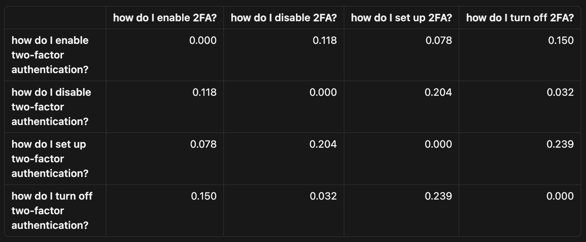
How do we populate the cache in the first place?
Raw Query Dump
Admission filter
Embed & Cluster
Rank by Value
Curate
Expand the set over time
Embed
Curate
Response Cache
Vector DB
LLM Gateway
Nightly Clustering
Miss Log
3. Maintaining freshness & correctness
. . .
. . .
Maintain a labeled eval set of question pairs - Make sure hit/miss decisions and responses stay correct if you ever change: - the embedding model (e.g. upgrade versions, switch from an API offering to self-hosted, etc) - the retrieval business logic
Sample hits for potential false-positives
Embed
Response Cache
Vector DB
LLM As Judge Workflow
LLM Gateway
Compare: - Cached response - Full response Evaluate: - similar => expected quality - dissimilar => detected false positives
X% sample
Canary FP rate >X% => system tightens thresholds FP's should ideally go through LLM / human review to tune query / answer set
Cost Savings Napkin Math
Cache hit => near 100% savings - Embedding model invocation ~= ($0.02/M tokens) is $0.000003/request - Storage (results may vary)
Input + RAG result => ~3,000 input + ~150 output => $0.011 per request
With only Prompt Caching:
=> $1,080 / month @ 100K requests
Component / Workflow Caching
User request
Retrieval Cache
1. Retrieve policy
"Retrieve refund policy"
Option 1: Skills
Option 2: Encoded Decision Tree
"Get user's most recent order"
get_orders(user_id, sort=recent, limit=1)
2. Resolve order
Tool Schema Cache
Compiled Rule Interpreter
3. Apply policy
"Given the policy and order, determine eligibility"
Rule Compiler
refund_order(order_id)
Option 3: LLM Writes Code
4. Compose Answer
Response
Intent router
Plan Cache
Plan Miner
Cost Savings Napkin Math
With only Prompt Caching:
Step Input Output Plan first action 2,550 150 After RAG result (+1,200) 3,900 120 After order lookup (+400) 4,420 250 Compose answer 4,670 180 Total billed 15,540 700
For $3/$15 (Sonnet) => $0.0571 per request
Context Compression & Compaction
Context Rot: the (proven) idea that AI performance degrades as the input length grows
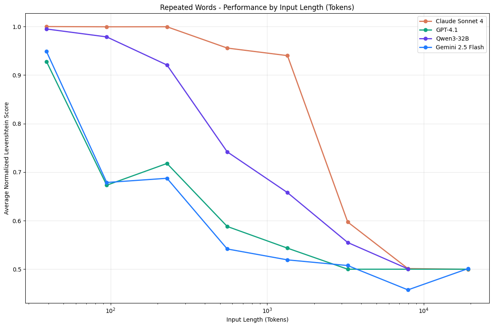
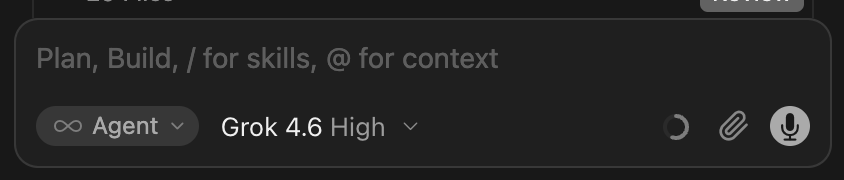
source: https://www.trychroma.com/research/context-rot
This means: - even if a model can theoretically support e.g. 1M token context, it's usually not advantageous for us to use it all => we need to actively manage the context window in order to optimize performance of our workflows More specifically, we need to eliminate, prune, and compress context in our window as we go
Recall: - prompt caching requires a prefix-able input - our context being dynamic drastically reduces the extent to which we will be able to take advantage of prompt caching BUT ruthless prioritization of our context window can also be beneficial for cost management, if done right
T1
T2
T3
T4
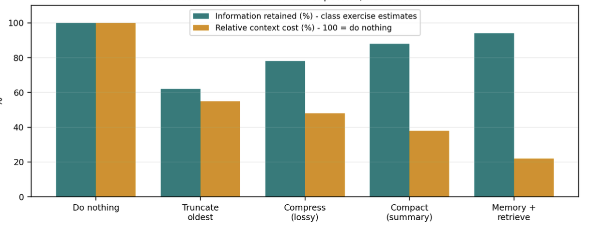
Compaction
Compression
A technique to manage and reduce token usage - Track token usage after each conversational turn - When usage crosses a set limit (e.g., 70% of a window) - Take full context from N turns and summarize - Raw legacy message log is cleared, and session resumes using the compact summary - Is lossy (on purpose) - Lives at the application layer - Operates on session history specifically
Any technique that reduces the token footprint of context before it hits the model. We've already talked about some lossless forms of compression: - prefix caching / KV cache reuse - tool-schema deduplication & truncation And some lossy but fidelity-preserving: - semantic selection of retrieved documents - attention-aware pruning
Memory
What if we need to "remember" (i.e. pull into context later) something from the current session? A vector lookup (aka retrieval) => ~500 tokens of context VS Re-deriving the answer => 5000 reasoning tokens When the knowledge exists, retrieval is almost always the best move. So how do we make it happen? MEMORY!
Our managed context window
Working Memory
Snapshots of past actions and learned / coded instructions
Procedural & Episodic Memory
Facts, knowledge, preferences
Semantic Memory
So since retrieval is way cheaper than reasoning, should we aim to remember as much as possible? Well, kind of. We should aim to maximize the area under the curve of utility vs memory.
How useful that stuff is
How much stuff we remember
BUT we need to offset that with the growing cost of retrieval vs size of memory
Why does more memory correspond to more expensive retrieval?
Vector DB
What is Jeremy's favorite color? 1. Search a vector DB for color stuff 2. Use that info to figure out if there is answer we can tease out 3. Return to the user => more stuff == more reasoning == more tokens
Cost to do retrival
Drives a gray jeep
Filled out a form, selected blue as his color of choice
Looked up a recipe for green bean casserole
Listened to Brown Eyed Girl that one time
How much stuff we remember
How useful that stuff is
Cost to do retrival
How much stuff we remember
Memory <> Compaction
Just like we compact and compress our immediate context window (short-term memory), we need to manage our long-term memory to avoid reading in redundant tokens.
cron
in-session / cron
Favorite programming language is Python
Context Window (short-term)
Memory Store (long-term)
Merge
extract
Likes Python
Semantic Memory (facts, preferences)
System prompt + tools
Reports to Alice (Q1'26)
Episodic Memory (events, diary)
Compacted summary
Supercede
Reports to Bob (Q2'26)
retrieve
Procedural Memory (recipes, skills)
Recent Turns & Reasoning
Recipe not used > 6 months
Prune
2. Complete Chronological Video Transcript & Interleaved Zoom Chat (00:00:00 – 02:07:44)
00:00:10 – 00:05:07 Week 2 Live Session • Part 1 (1 speaker turns) Join, maybe over the next 2-3 minutes. Maybe drop in the chat? the coolest thing you saw in AI this week, and I'll drop the slides in the Zo...
00:05:07 – 00:10:16 Week 2 Live Session • Part 2 (1 speaker turns, 4 chat Q&As) Basically. how we can make sure that our context window is staying as dense as possible. We kind of touched on that last time, keeping the c...
00:10:16 – 00:15:00 Week 2 Live Session • Part 3 (1 speaker turns, 4 chat Q&As) And so, the question is, how do we take advantage of some sort of intelligent caching strategy, or how do we develop one, without requiring,...
00:15:00 – 00:20:03 Week 2 Live Session • Part 4 (1 speaker turns) okay, actually, you know, those share a lot of tokens, and even, you know, synonyms, but they're not semantically similar in the sense that ...
00:20:03 – 00:25:10 Week 2 Live Session • Part 5 (3 speaker turns, 2 chat Q&As) That, you know, were kind of designed or contrived to be. clusterable, or close together. So you can see here just a bunch of, preceded thin...
00:25:11 – 00:30:04 Week 2 Live Session • Part 6 (8 speaker turns) So this casing will work if I'll, send the exactly same sentence, or little difference will… okay, because little difference will, again, fi...
00:30:05 – 00:35:11 Week 2 Live Session • Part 7 (5 speaker turns) the… the number of embedding models is very large. These embedding models are… inference that we need to run, like, you know, we're not tota...
00:35:11 – 00:40:03 Week 2 Live Session • Part 8 (1 speaker turns, 2 chat Q&As) not having a very good hit rate? And the answer, of course, is yes. So, some examples of, like, what would be good to cash is, what's your r...
00:40:03 – 00:45:06 Week 2 Live Session • Part 9 (1 speaker turns, 2 chat Q&As) What are the advice or best practices? Yes. The… what you're saying is true, right? Like, if you have some underlying data, let's say, like,...
00:45:08 – 00:50:12 Week 2 Live Session • Part 10 (1 speaker turns, 2 chat Q&As) And then, yes, someone, someone just asked, I think Charles just asked, like, how do we make sure that we're, to the extent possible, mainta...
00:50:14 – 00:55:12 Week 2 Live Session • Part 11 (1 speaker turns, 1 chat Q&As) And also, how does this work when AI uses tools and has a multi-step conversation? Yes, we will get to that. We will get to kind of the quot...
00:55:12 – 01:00:12 Week 2 Live Session • Part 12 (1 speaker turns, 3 chat Q&As) that's probably okay. Obviously, there's no PII there. If there's some space where, like, any shared, data, even just answers from the LLM i...
01:00:12 – 01:05:04 Week 2 Live Session • Part 13 (1 speaker turns, 3 chat Q&As) Using an LLM is also an option, using a human is, of course, always an option. And then what you want to do is basically, like, compose the ...
01:05:04 – 01:10:06 Week 2 Live Session • Part 14 (1 speaker turns, 2 chat Q&As) This, I think, is kind of amid, like, what you're saying, like, hey, it's too simple, like, this is, like, software 1.0. But the idea is tha...
01:10:06 – 01:15:01 Week 2 Live Session • Part 15 (1 speaker turns, 2 chat Q&As) But I think this is intuitive. Like, the greater the number of tokens relative to not adding information, the worse. The worse we are. We wa...
01:15:02 – 01:20:16 Week 2 Live Session • Part 16 (1 speaker turns, 2 chat Q&As) And when we reach, say, 70% of the context window being full. we will summarize. We will, basically, trim down back to some, you know, minim...
01:20:18 – 01:25:12 Week 2 Live Session • Part 17 (1 speaker turns, 1 chat Q&As) And so you'll see, if you look into memory, you'll see that it's generally divided into a few different types of memory. Working memory is k...
01:25:12 – 01:29:58 Week 2 Live Session • Part 18 (6 speaker turns, 2 chat Q&As) But really what I'm… hopefully what I'm trying to say is clear, that the actual context window of our session the context window of our sess...
01:30:00 – 01:35:01 Week 2 Live Session • Part 19 (1 speaker turns, 1 chat Q&As) Okay, bhavesh, does the memory get appended to on subsequent compactions? So, yes, back down here, to this deleted section of the lecture. e...
01:35:02 – 01:40:04 Week 2 Live Session • Part 20 (3 speaker turns, 1 chat Q&As) Okay, so, action item for me is to figure out I don't… I don't even remember if, Excalibra has version history, but whatever I deleted about...
01:40:04 – 01:45:05 Week 2 Live Session • Part 21 (1 speaker turns, 3 chat Q&As) LLM here, and we're going to this… I called this an intent router, you'll see it called that sometimes, but really what this is, is basicall...
01:45:05 – 01:50:15 Week 2 Live Session • Part 22 (1 speaker turns, 1 chat Q&As) And basically, the idea is, hey, you have a really big. set of information, and that set is obviously growing, the context is growing, and y...
01:50:16 – 01:55:03 Week 2 Live Session • Part 23 (1 speaker turns, 2 chat Q&As) prompt. as part of the, like, even prefixable part. Like, tool schema is basically, like, a dump for the model to know, like, here's all the...
01:55:04 – 02:00:08 Week 2 Live Session • Part 24 (8 speaker turns, 5 chat Q&As) Actually, now your semantic cache might not be returning what your model would say. And so it's prudent in many cases to have the model upgr...
02:00:08 – 02:05:01 Week 2 Live Session • Part 25 (12 speaker turns, 1 chat Q&As) So… So unless my embedding model changes, and I do some sort of eval to check that embedding models are different, I understand that part. B...
02:05:01 – 02:07:41 Week 2 Live Session • Part 26 (1 speaker turns) And then, in turn N, you are doing some RAG. Like, you're doing some rag. One option, of course, is just to say, like, hey, I retrieved this...
Week 2 Office Hour: Codebase Embeddings (voyage-code-3), Class-Level Chunking & Impact Analysis (Tue, Nov 10 • 22:28)
Complete chronological transcript and shared paper/model links from the 22:28 Week 2 Office Hour recording.
00:00:01 – 00:05:13 Week 2 Office Hour • Part 1 (10 speaker turns) Hey Jeremy. I'm just here to see if somebody else has a question....
00:05:16 – 00:10:03 Week 2 Office Hour • Part 2 (19 speaker turns) You spoke about model compaction. Are you talking about pruning, distillation, quantization, or something else?...
00:10:03 – 00:15:10 Week 2 Office Hour • Part 3 (9 speaker turns) Which embedding model would you recommend for embedding an entire codebase? Also, if the programming language we use doesn't have strong abs...
00:15:11 – 00:19:59 Week 2 Office Hour • Part 4 (9 speaker turns, 1 chat Q&As) So, question here is the stake trace might… Be across libraries. classes, right? And the chunking makes most sense in my mind if it is acros...
00:20:00 – 00:22:22 Week 2 Office Hour • Part 5 (7 speaker turns) It's a recent paper. I think it's this one. I'll send it in the Zoom chat again. There's this conversation happening, Because vector databas...
Week 3 Live Session: Intelligent Routing, Model Cascades & Agentic Optimization (Sat, Nov 14 • 02:14:42)
Module 3: Intelligent Routing, Model Cascades & Agentic Workflow Optimization
Associated Recording:05_Week3_Live_Session_2026-11-14_Intelligent_Routing_and_Model_Cascades.mp4(02:14:42)
Whiteboard: Week 3 Excalidraw (../../Lesson 3_ Routing and Model Cascades.excalidraw • Full PNG)
Lab Spec & Code: Lab 3 README •routing-lab•mf-router-lab
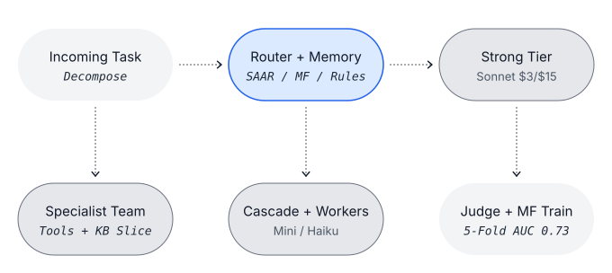
1. The Economics of Model Routing & The 3-Step Framework (00:05:00–00:20:00)
Across the Lab 3 model ladder, unit prices span 20x to 25x:
- Weak Tier (
mesh-gpt-mini/gpt-4o-mini):$0.15/$0.60per 1M tokens - Mid Tier (
mesh-claude-haiku/claude-haiku-4-5):$1.00/$5.00per 1M tokens - Strong Tier (
mesh-claude-sonnet/claude-sonnet-4-6):$3.00/$15.00per 1M tokens
Instead of naively picking "the cheapest model that works," production routing maximizes Incremental Net Value:
$$\text{Incremental Net Value} \approx \Delta P(\text{success}) \cdot \text{Value}(\text{success}) - \Delta \text{Cost} - \Delta \text{Latency}$$
The 3-Step Systematic Routing Framework
- 1. Decompose (What are the smaller units of work?): Static decomposition, dynamic decomposition with feedback, or Chain-of-Thought / Least-to-Most sub-problems.
- 2. Determine (What type of work is each unit?):
- Planning: Complex, high-blast-radius, open-ended $\to$ Strong Tier.
- Evaluation / Verification: Well-defined rubric $\to$ Weak / Mid Tier.
- Recall / Lookup: Simple extraction over retrieved context $\to$ Weak Tier.
- 3. Decide (What does "good enough" look like?): Preference-based routing (RouteLLM) vs. value/threshold-based cascades (FrugalGPT).
2. Evolution of Routing Architectures (2023–2026) (00:20:00–01:15:00)
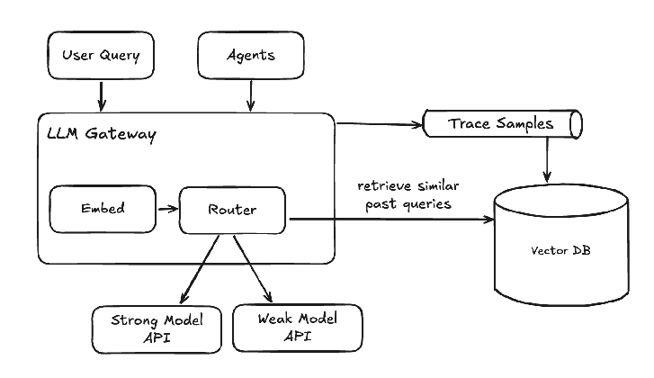
2.1 Method 1 & 2: Deterministic Gateway Rules (mesh-auto) & Semantic Embedding Routes
- Gateway Surface Rules (LiteLLM Auto Routing): Scores prompt length, code markers, and custom regex dimensions (
moneyMath:$,%,"credit","restocking") with zero model or embedding calls. Fast and auditable, but brittle to false positives (e.g., routing a simple lookup"What is the restocking fee on an opened item?"to Sonnet). - Semantic Embedding Routes (Semantic Router): Embeds the incoming query and matches it against department utterance centroids (
orders,identity,billing,platform,privacyinfixtures/routes.json). Department topic is only a coarse proxy for reasoning difficulty.
2.2 Method 3: Model Cascades (FrugalGPT, arXiv:2305.05176)
- Mechanism: Call the Weak model first (
cost = w_ans), run a Weak Gate verifier (cost = w_gate, total initial cost $w = w_{\text{ans}} + w_{\text{gate}}$), and escalate to the Strong model (cost = s) only if confidence falls belowcascade.threshold. - Break-Even Escalation Math:
$$\mathbb{E}[\text{Cost}_{\text{cascade}}] = w + p \cdot s < s \iff p < 1 - \frac{w}{s}$$
When $w \ll s$ (e.g., $w / s \approx 0.05$), the cascade saves money up to $p \approx 95\%$ escalation rate, though escalated queries pay $w + s$ and suffer double latency.
2.3 Method 4: Preference-Based Routing & Matrix Factorization (RouteLLM, arXiv:2406.18665)
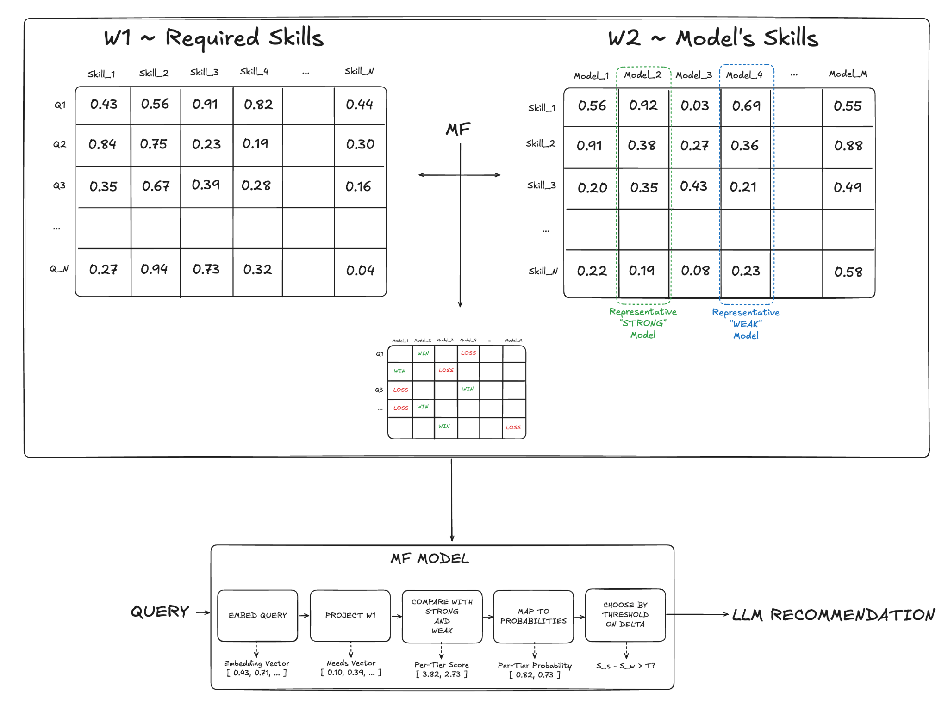
- Latent Skill Factorization Intuition (
00:37:00–00:52:00): - Imagine a hidden skill space of dimension $d_{\text{model}} = 128$ (e.g.,
Skill_1 = temporal arithmetic,Skill_2 = multi-clause policy synthesis,Skill_3 = code generation). - Matrix $W_1$ maps each prompt embedding $e(p) \in \mathbb{R}^{1536}$ into the Required Skills vector $W e(p) \in \mathbb{R}^{128}$.
- Matrix $W_2$ ($P[m] \in \mathbb{R}^{128}$) represents each Model's Skill Profile.
- The bilinear scoring function computes the logit for model $m$ on prompt $p$:
$$s(m, p) = w^T \left( \frac{P[m]}{\|P[m]\|_2} \odot (W e(p) + b) \right)$$
- The probability that the strong model wins a head-to-head battle is:
$$P(\text{strong wins} \mid p) = \sigma\big(s(\text{strong}, p) - s(\text{weak}, p)\big)$$
- Productionizing RouteLLM with Shadow Traffic (
Lesson 3Whiteboard): - 1. LLM Gateway serves live traffic and writes
Prompt Logs. - 2. Sampled queries generate asynchronous Shadow Answers across candidate models (
Model X_M,Model X_N). - 3. Label Training Data:
95%scored automatically by LLM-as-Judge +5%audited by Humans. - 4. Periodic Retraining: Retrain $W, P, w$ after every $X$ new labeled battles and recalibrate threshold (
calibrate.py --strong 0.30). On MT-Bench, the MF router retains ~95% of Strong quality while cutting cost by ~85% (sending only ~14% of queries to Strong).
2.4 Method 5: vLLM Semantic Router & Mixture of Models (01:00:00–01:12:00)
- Exposes a unified Mixture of Models under one logical identity, combining semantic clustering, difficulty estimation, rules, preference routing, and cascades.
- Why Routing Is Still an Open Research Problem (arXiv:2602.03478): As mid-tier models converge toward frontier quality on routine benchmarks, static routers trained on older Chatbot Arena distributions underperform unless calibrated on in-domain failure modes.
3. Agentic Workflow Optimization & Session-Aware Routing (01:15:00–02:14:42)
3.1 Planning Paradigms: CoT vs. Least-to-Most vs. ReAct vs. ReWOO vs. Self-Reflection
- 1. Chain of Thought (CoT) vs. Least-to-Most (LtM): CoT reasons in a single pass, whereas LtM decomposes
"Alice had 4 boxes with 5 widgets..."into sequential sub-questions—which naively re-sends the growing prompt 3 times unless sub-steps are isolated. - 2. ReAct (
mode="react"): AlternatesReasoning -> Action (Tool Call) -> Observationin one growingmessageslist, paying Strong-tier input prices to re-read refund policies while answering rate-limit questions. - 3. Four Architectural Fixes for Agent Token Bloat (Whiteboard):
- ReWOO (Reasoning Without Observation): Generates the full symbolic tool-call plan upfront so workers execute without intermediate observation loops.
- Plan-and-Execute (
mode="plan"): Calls the Strong model once to decompose the ticket into isolated sub-tasks, executes each step on Weak workers in fresh contexts, and stitches the final response on Weak. - Self-Reflection Loop: Separates
Actor LLM (ReAct)$\leftrightarrow$Short-Term Memory$\leftrightarrow$Evaluator LLM$\leftrightarrow$Self-Reflection LLM$\to$Long-Term Memory(high accuracy via inference-time scaling, but must be bounded bymax_iterationsand token budgets). - Hierarchical (
supervisor="llm") vs. Decentralized/Vector (supervisor="vector") Specialist Teams: Routes sub-tasks to domain specialists (orders[weak],billing[strong $\to$ mid],platform[mid]), each carrying only its own 2–3 tools and 2 KB docs instead of all 6 tools and 8 docs.
3.2 vLLM Session-Aware Agentic Routing (SAAR) & Router Memory (01:55:00–02:13:00)
Why does naive per-turn routing fail inside an active coding or support agent session?
- 1. Broken Tool-Loop Continuity: If Turn $t$ routes to Model A which emits a tool call, routing Turn $t+1$ (the tool output) to Model B breaks reasoning continuity and tool formatting assumptions.
- 2. Destroyed Provider Prefix Cache: Switching from Anthropic (
claude-sonnet-4-6) to OpenAI (gpt-4o-mini) mid-session forfeits the 90% KV cache read discount on the 20,000-token session prefix! - The Fix — Router Memory (SAAR): The router maintains session state (
last_physical_model,active_tool_loop,session_phase,cached_prefix_host), pinning tool-execution loops to the model that initiated them and only switching models at clean phase boundaries—achieving ~80% cost savings on complex production workflows.
3.3 Post-Session Enterprise Memory Pipeline (Lesson 3 Whiteboard Bottom Panel)
[Agent Orchestration / Tools / Logs] ---> [Data Warehouse (DWH)]
|
v
[Extraction Pipeline: 1. Segment by session
2. Filter superfluous entities
3. Distill & Normalize core facts]
|
+----------------------+---------------+---------------+----------------------+
v v v v
[Vector DB] [Keyword Index] [Entity Graph] [.md / .txt Files]
(Semantic Recall) (Exact ID Lookup) (Relational Memory) (User/Topic/Procedures)Updates are committed via three cadences: In-Session Commit (critical user preferences), Post-Session Job (session summary & fact extraction), and Periodic Reconciliation (deduplicating and pruning stale facts).
1. Chronological Whiteboard Walkthrough (Lesson 3 Canvas Order + 17 Embedded Figures)
Welcome Back!
As we wait for folks to join (we'll start 2-3 minutes in), drop in the chat either: 1. Something we've learned so far you've found applicable in your work / personal AI usage OR 2. Something you hope we'll cover in the last lecture next week (main focus is open models, harness engineering, misc advanced topics)
Lesson 3: Routing & Agent Optimization
Choosing the "right" model for the job
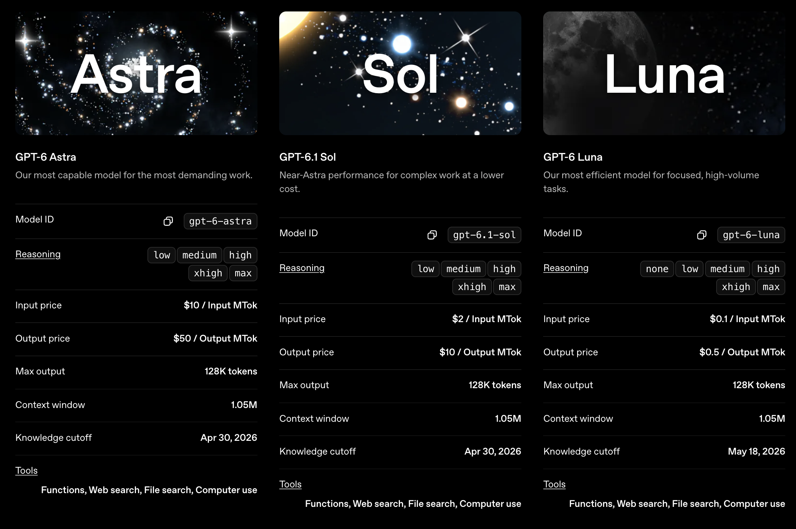
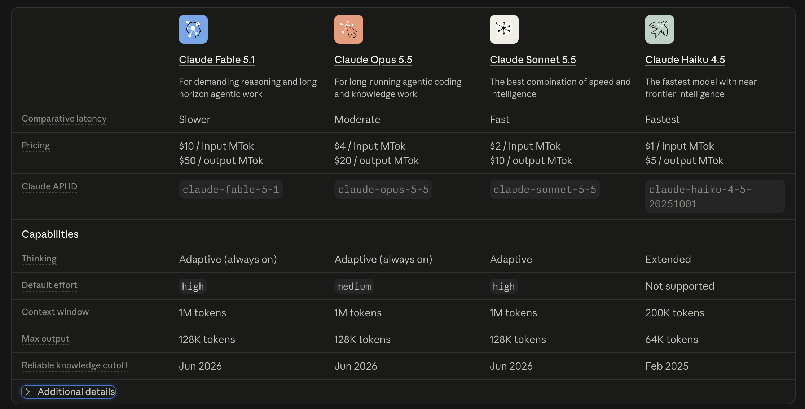
Quality
frontier
medium
Cost
small
tiny
Cost
Latency
Capability
Simple / naive approach: what is the cheapest model that can handle this prompt?
BUT the penalty for sub-optimal quality or incorrectness is very task-dependent
BUT some tasks are ~agentic~ i.e. within a given request, there maybe many jobs to be done and objectives to meet.
BUT in practice, there is often a large amount of context, e.g. multi-turn, loops, etc
=> A single "best model" isn't easy to determine for a mixed workload.
Really, we want something that maximizes incremental NET value of our AI usage incremental_value ~ ΔP(success) * value(success) - cost(task)
Routing Framework:
3. Decide: what does good enough look like for each part?
2. Determine: what type of work is each?
1. Decompose: what are the smaller units of work?
Brief History
- 2023: FrugalGPT paper - 2024: RouteLLM paper - 2025: vLLM Semantic Router launched - 2026: LLMRouter, LLMRouterBench
Semantic Routing
Dead-Simple: Deterministic Routing
Coding → x-large Support → medium data science → small
LLM Gateway
Assume our product has clear swimlanes. Then we could perhaps route the requests for each lane to a pre-configured model
LLM Gateway
Model Cascade
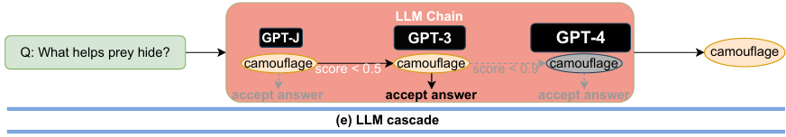
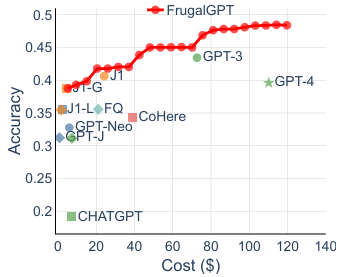
RouteLLM & Preference-based routing
RouteLLM is a preference-based framework for serving and evaluating LLM routers.
About RouteLLM
Trained on Arena battle data
LOSS
WIN
Q1
LOSS
WIN
Q2
WIN
Q3
LOSS
WIN
...
LOSS
Q_N
WIN
LOSS
Routing Method 1: Similarity-weighted ranking
QUERY
ELO Leaderboard
LOSS
WIN
Q1
LOSS
WIN
WIN
Q3
LOSS
WIN
...
LOSS
WIN
LOSS
LLM RECOMMENDATION
Routing Method 2: Matrix Factorization Learned Preference (Recommended)
W1 ~ Required Skills
W2 ~ Model's Skills
0.56
0.43
0.91
0.82
0.44
0.92
0.56
0.03
0.69
0.55
MF
0.19
0.75
0.23
0.30
0.84
0.38
0.88
0.36
0.27
0.91
0.39
0.28
0.43
0.67
0.16
0.35
0.21
0.35
0.49
0.20
0.73
0.94
0.32
0.27
0.08
0.19
0.04
0.23
0.22
0.58
MF MODEL
QUERY
LLM RECOMMENDATION
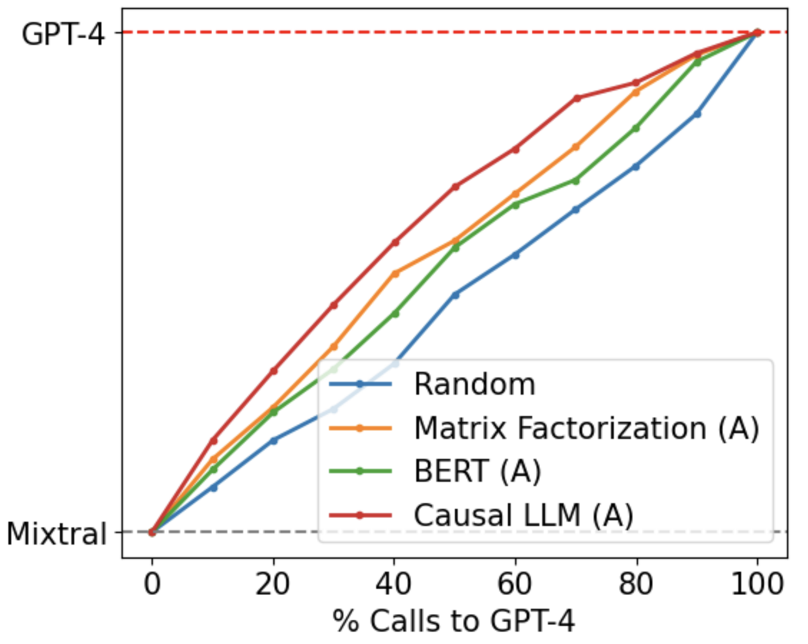
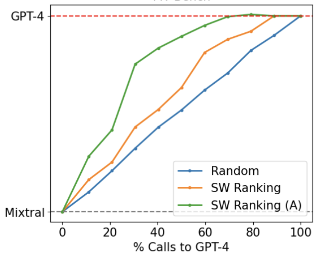
Other Methods: - bert: Uses a BERT classifier trained on the preference data. - causal_llm: Uses a LLM-based classifier tuned on the preference data. - random: Randomly routes to either model.
Productionizing a RouteLLM Deployment
Optimizations
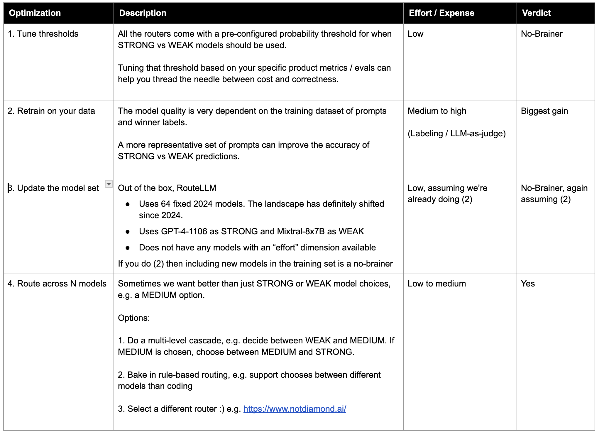
Architecture
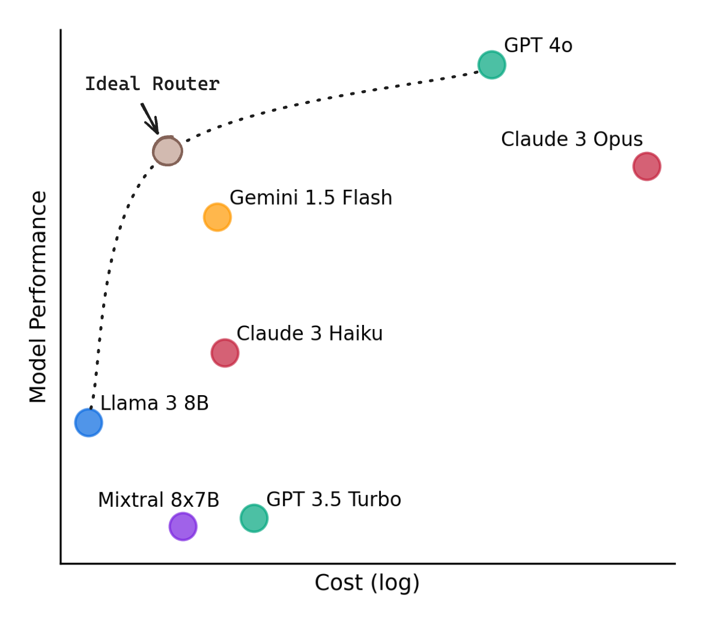
LLM Gateway
Potential Gains
On MT-Bench, MF router held roughly 95% of STRONG quality while cutting cost by up to ~85% (only ~14% of queries needed STRONG)
vLLM Semantic Router
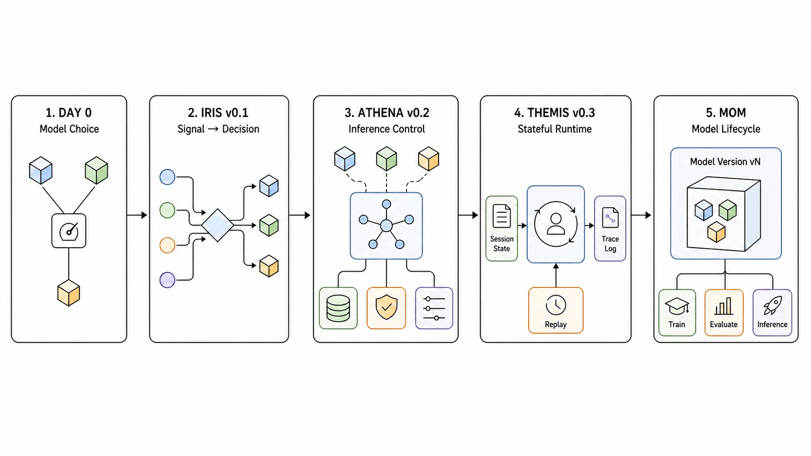
Selection algorithms
Releases:
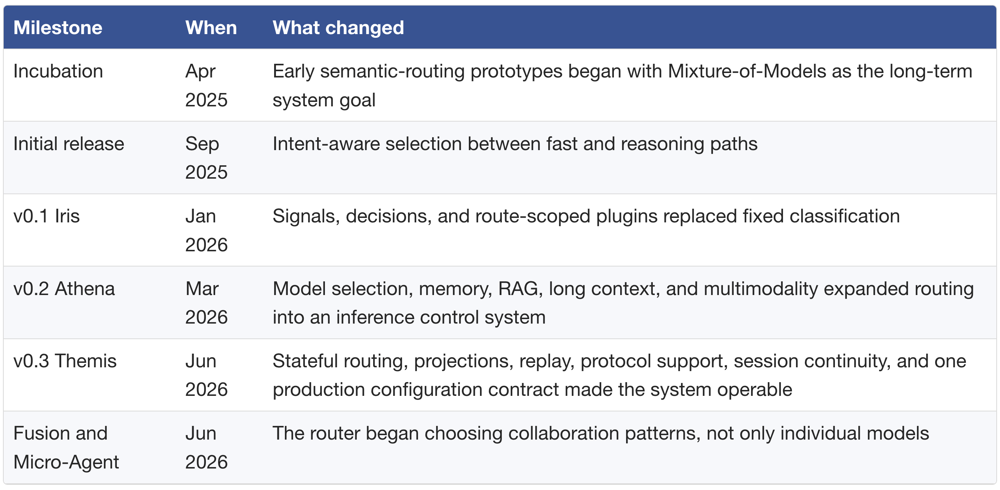
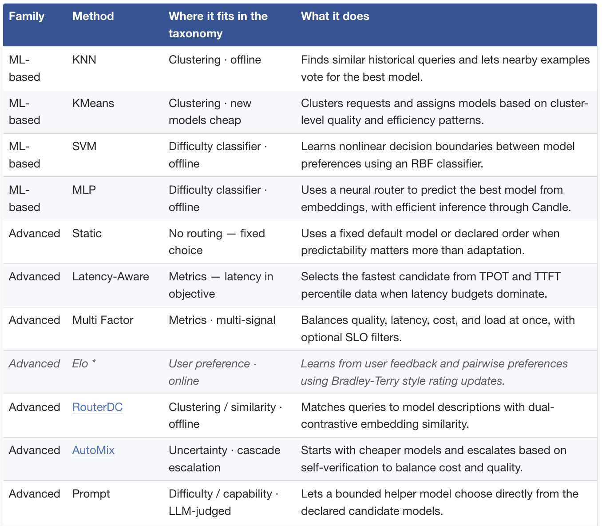
Semantic - Clustering by prompt similarity
Difficulty-based
Rules-based
Preference-based
Model Cascade
LLM-based router
Key idea behind Semantic Router's latest releases: - Mixture of Models under one identity - Routing decisions to more than just models (compute/hw, location, etc)
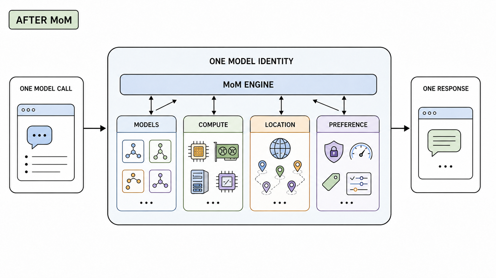
Source: https://vllm.ai/blog/2026-07-21-vllm-sr-new-chapter-mom
Routing: Not a Solved Problem
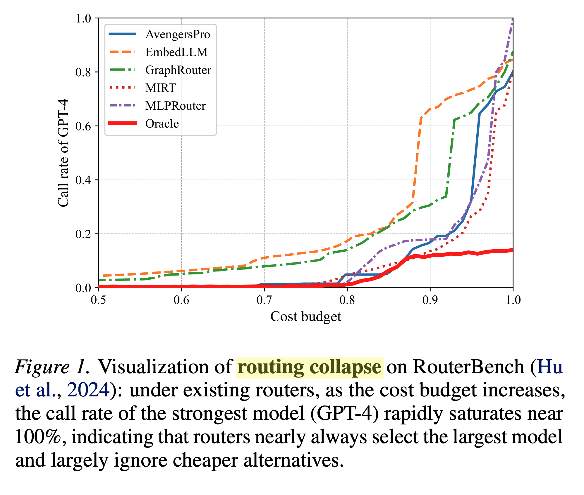
Researchers have shown that many LLMs are converging rowards similar quality that is meaningfully less than a perfect "oracle" router
https://arxiv.org/pdf/2602.03478
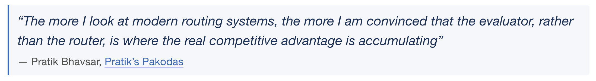
Source: https://pakodas.substack.com/p/llm-routers
Agentic Workflows
Before we optimize them, what do we mean by Agentic? "An AI agent refers to a system or program that is capable of autonomously performing tasks on behalf of a user or another system by designing its workflow and utilizing available tools." While an LLM is a "next token" predictor, powering e.g. a simple chat bot, Agents: - process input - plan, reason, and execute multi-step objectives - integrate with external tools - have structured memory (both short- and long-term) - perform multiple steps of planning, data collection, and execution
Agent
. . .
Reasoning LLM
Memory
Tools
Planning
Planning
In order to get real work done, agents plan the best way to fulfill the ask / requirements of the workflow. An important part of planning is task decomposition Recall our Reasoning LLMs and their ability to formulate plans: - Chain of Thought (CoT) -> LLM is asked to think "step by step" e.g. "Alice had 4 boxes with 5 widgets in each. She lost 2 and gave 3 to her friend Bob. How many does she have left? Let's think step by step." - Least to Most (LtM) -> CoT with intermediate answer + reprompt 1. Problem reduction: - How many total widgets did Alice start with? - How many widgets does Alice have after losing and giving some away? 2. Sequentially solving prompt = base_prompt for each subproblem: prompt.append(llm.process_message(prompt))
Least to Most (LtM)
Chain of Thought (CoT)
LLM
LLM
LLM
LLM
LLM
ReAct (Reason + Act)
Actions - Tool Calls
Please help me add a new feature to my code base
External Feedback
I know what you're thinking... so many tokens!! What can we do? 1. ReWoo -- skip observation 2. Plan Ahead w/ Workflow Caching - Skills - Auto-captured recipes 3. Reflexion & Self-improvement - Task quality - Trajectory evaluation Agent Bench: https://arxiv.org/pdf/2308.03688 4. Fine-tuning -- next lecture :)
Self-Reflection LLM
LLM
LLM
LLM
Environment
LLM
Reasoning Traces
LLM
Reflection Output
Reasoning
Reasoning
Internal Feedback
I should analyze the existing code base. I will use the tool read_codebase()
I'll ask the user for a clarification of the requirements.
Long-Term Memory Prefix / addendum to prompt
Observations
Evaluator LLM
Action
Action
read_codebase()
respond_and_wait()
LLM
LLM
Actor LLM (ReAct)
Observation
Short-Term Memory
Observation
After reading through the codebase, there are still some functionalities that are not clear.
The user clarified the requirements and I am now able to better understand the code's intent.
A word of caution: A good plan is expensive. A bad plan is VERY expensive
Action
Environment
Observation
Doing these steps repeatedly is often called the "agent loop"
Agent Loops
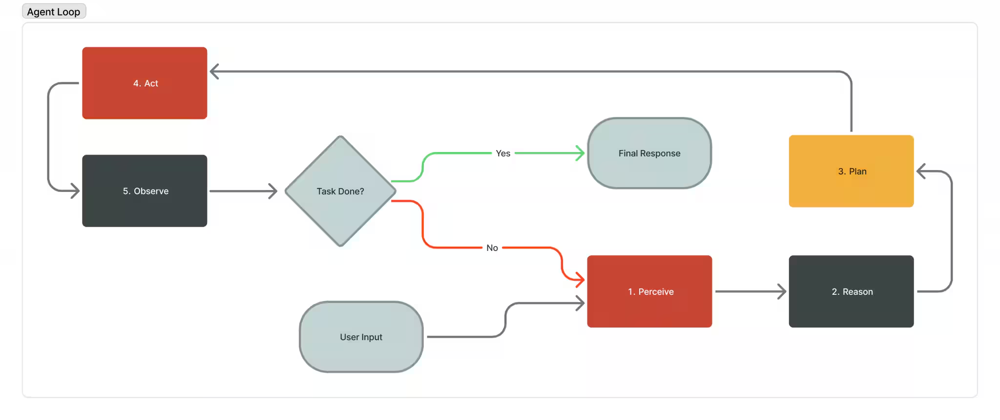
The power of this type of loop paradigm is we can solve much more complex tasks. Naturally, that power comes at a cost. Remember: on the quality front, we are fighting against context rot. More loops is only good if they are well-constrained. A very good early plan and task definition is way better than a bad plan we try to overcome with more loops.
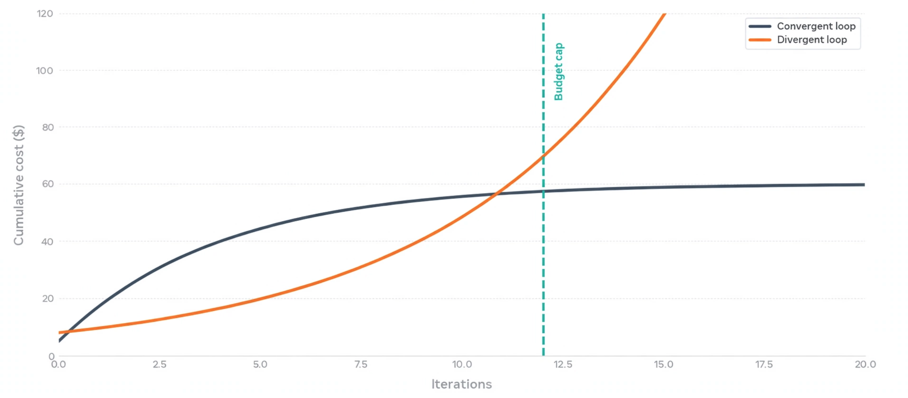
Agent loops are best for tasks where: - the necessary steps are not easily predicted in advance. - the agent must chart its course based on intermediate results - the cost of latency is acceptable relative to the value of task completion
What are some basic ways we can limit costs? - Max loop limits: cap number of loop cycles (for example, max_iterations=10) - Token budgets: set hard spending limits per agent run - Goal-achievement checks: evaluate whether the task objective has been met - Progress detection: exits when repeated iterations produce no new information
Semantic Convergence
- Take full context from N turns and summarize - Raw legacy message log is cleared, and session resumes using the compact summary
T1
T2
T3
T4
Remember from last time: context compression / compaction can help us here. In agentic setups you'll also heard this called pruning, because there is a lot (like sometimes A LOT) of branching in agentic workflows
Multi-Agent Systems
Multi-Agent systems are powerful for a lot of reasons. From an effectiveness / quality POV, centering one agent on one task and another on a different task is another good way to fight agaist context rot. From a cost POV, it can also help us prune intelligently.
Agent
- process input - plan and reason how to accomplish the task - execute multi-turn objectives - call tools => come up with some output Before returning output, compact to the strictly necessary info as defined by the task
Well-Defined Task
Compact Response
But where do these "well-defined" tasks come from? Multi-agent systems require some protocol for communication between agents
Decentralized
Hierarchical
Agentic Routing
What we've covered so far is a very advanced and capable setup for routing requests to the right model. But what about when a given "request" has many model invocations, e.g. agentic workflows?
Agent Session
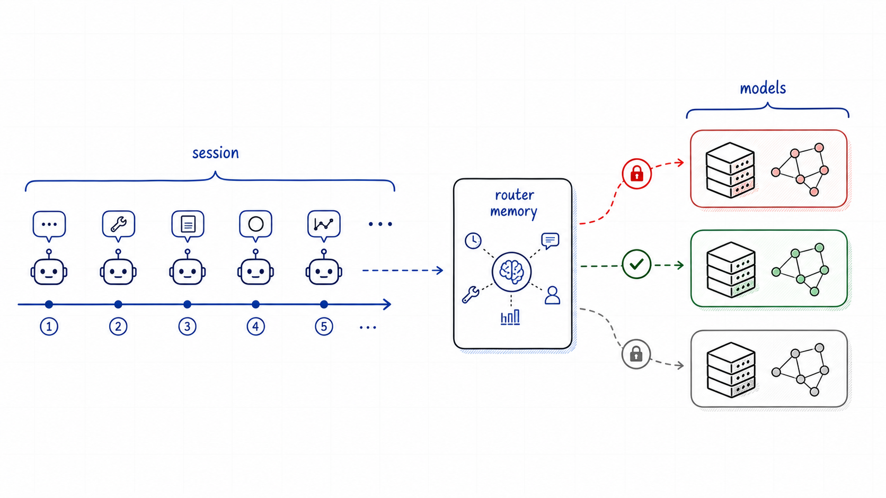
A coding or research agent is not one prompt. Rather, it is a session: the agent plans, uses tools, receives outputs, edits files, runs tests, recovers from errors, pauses, resumes, and often sends very short follow-up messages such as "continue", "fix it", "run that again", or "use the previous result."
QUERY
OUTPUT
Which model should I use for XYZ?
Use Model M.
ROUTER
Let's think through some options: 1. Route based on only the incoming QUERY's complexity -> not ideal, since then we probably overpay for simple parts of the job 2. Route every request independently -> not ideal, since then we can't take advantage of the caching we've learned about so far 3. Rule-based routing - always route planning tasks to a strong model - always use a small model for tool invocation - use at least a medium model for output to the user - ... -> better, but now we've lost a lot of the learned optimality we gained in simple routing
vLLM's Session-Aware Agentic Routing (SAAR) helps here: - Tool-loop continuity: If a given model asked for a tool call, the tool result should return to that same model. The follow-up observation coming from the result is part of a local execution loop. - Provider-managed state. If the request carries non-portable continuation state, such as a response identifier that belongs to one backend, SAAR pins the previous physical model instead of silently moving the state elsewhere.
That means our Router needs Memory!
We need to remember things like: - the last physical model selected - previous routing decisions - session state: - tool-loop - provider-state - idle-reset - ... - the latest context length and cache evidence; - a replay id that links the response back to the router's decision trace.
QUERY
ROUTER
OUTPUT
MEMORY
-> vLLM's benchmark estimates ~80% cost savings for a typical complex production workflow
{ "event_id": "e_105", "session_id": "s_412", "ts": "2026-10-08T15:12:03Z", "original_actor": "user_123", "actor_profile": "user | agent | tool:<name> | system", "kind": "message | tool_call | tool_result | outcome | feedback", "content": "...", "trust": "first_party | tool_observed | external_content", "parent_id": "e_104" }
Agent Orchestration
DWH
...
...
Logs
Agents
Tools
read
read
Extraction
Memory
write
Topic Files
User Profile
...
1. Segment: Group log events by session 2. Filter*: discard superfluous entities 3. Distill & Normalize*: boil down to the core info / summarize with structure 4. Normalize*: add metadata, structure (e.g. format as procedure) 5. Reconcile & Gate*: check trust-level, compare with existing memory 6. Store & Index: write to stored memory
Procedures
In-session Commit
Post-session Job
Keyword index
Vector DB
Entity Graph
Periodic Reconciliation
LLM Gateway
2. Complete Chronological Video Transcript & Interleaved Zoom Chat (00:00:00 – 02:14:42)
00:00:04 – 00:05:07 Week 3 Live Session • Part 1 (13 speaker turns, 1 chat Q&As) I will drop the link here in the Zoom, it's also on the course portal. And yeah, while we're… while we're waiting for folks to join, questio...
00:05:07 – 00:10:15 Week 3 Live Session • Part 2 (1 speaker turns, 1 chat Q&As) supercharge that, because it'll include local models just in case… or, open models that you could run locally or on a cloud GPU that I think...
00:10:15 – 00:15:13 Week 3 Live Session • Part 3 (9 speaker turns, 1 chat Q&As) honored, but it's going to require some reasoning to do so, so at the very least, we want to save cost in this kind of superseding manner. A...
00:15:14 – 00:19:59 Week 3 Live Session • Part 4 (1 speaker turns) So, okay, if we needed to choose this, again, even just thinking to, like, how we might do it when we're using cursor for ourselves, or Kot ...
00:20:00 – 00:25:11 Week 3 Live Session • Part 5 (9 speaker turns) And then, depending on the quality or the evaluation you make for the answer from the small model, you might escalate or cascade up to a big...
00:25:11 – 00:30:04 Week 3 Live Session • Part 6 (1 speaker turns, 1 chat Q&As) The basic idea behind, RouteLLM is that it's a preference-based routing, and what do I mean by preference-based? Preference-based is, very s...
00:30:04 – 00:35:11 Week 3 Live Session • Part 7 (1 speaker turns) writing an email, like, hey, I want my model… I want my model to write an email. We're gonna get a score for, you know, similar queries that...
00:35:11 – 00:40:10 Week 3 Live Session • Part 8 (5 speaker turns, 2 chat Q&As) Intuit anything about them, but the model has this emergent property of using these weights in order to make sense of the world. And so that...
00:40:10 – 00:45:03 Week 3 Live Session • Part 9 (5 speaker turns, 2 chat Q&As) pipeline, this is something you train so that you can put this black box in your LLM gateway in order to route to either a strong or a weak ...
00:45:03 – 00:50:03 Week 3 Live Session • Part 10 (1 speaker turns, 10 chat Q&As) Training this matrix factorization model. kind of gradient descent to train the WNW2 against ground truth. Yes, that's the idea. In this cas...
00:50:04 – 00:55:01 Week 3 Live Session • Part 11 (3 speaker turns, 1 chat Q&As) Pausing there again for questions. Okay, and so what would this look like? This… this would… this would be, like, basically what we've descr...
00:55:02 – 01:00:10 Week 3 Live Session • Part 12 (3 speaker turns) And so, when we say we're training our own model, what we mean is we're training this classifier, which is a lot more feasible. Like, traini...
01:00:10 – 01:05:12 Week 3 Live Session • Part 13 (1 speaker turns, 7 chat Q&As) In… in routing these models to different… or routing these queries to different models, there's still a long way to go. And so, if I were lo...
01:05:12 – 01:10:17 Week 3 Live Session • Part 14 (1 speaker turns, 2 chat Q&As) is better. Like, you can imagine, like, even what might be in these preferences could be things like, the value of a given Requests based on...
01:10:17 – 01:15:04 Week 3 Live Session • Part 15 (1 speaker turns, 1 chat Q&As) No Agentic quote-unquote logic. that, like, reasoning LLMs can do. Like, if you ask a real reasoning LLM to think step by step, it fundament...
01:15:04 – 01:20:09 Week 3 Live Session • Part 16 (1 speaker turns, 2 chat Q&As) LLMs start to converge on, the right answer. Okay, we have some requests for cursor movement. Okay, and so, do tool calls and tool outputs c...
01:20:09 – 01:25:00 Week 3 Live Session • Part 17 (1 speaker turns, 3 chat Q&As) LLM, going through this, like, multi-turn step of reasoning through and acting on the environment. And that action on the environment is goi...
01:25:00 – 01:30:12 Week 3 Live Session • Part 18 (1 speaker turns, 2 chat Q&As) different LLM, kind of. really what this means, they could be the same model, to your point. They don't need to be, but they could be the ex...
01:30:12 – 01:35:03 Week 3 Live Session • Part 19 (7 speaker turns, 6 chat Q&As) So, it depends on the complexity. I would say if it is, like, a complex, maybe diverse set of work, then you want to make sure that you're a...
01:35:04 – 01:40:12 Week 3 Live Session • Part 20 (8 speaker turns, 2 chat Q&As) I've actually checked, well, when I asked Jeremy, apparently there is a bug that they're working on, so at this time they do not have it, th...
01:40:12 – 01:45:03 Week 3 Live Session • Part 21 (1 speaker turns, 4 chat Q&As) passing it into the next loop iteration. Like, we need that to be… That context to be dense, and we need our definition of done to be specif...
01:45:08 – 01:50:14 Week 3 Live Session • Part 22 (1 speaker turns, 2 chat Q&As) Leo said, this is probably out of scope, feel free to skip the question, but I always wondered how a tool call works from the perspective of...
01:50:14 – 01:55:03 Week 3 Live Session • Part 23 (1 speaker turns, 1 chat Q&As) It's a… like, a sub-agent could be spun up. With a very advanced model, if it's a very complex task, or it could be spun up with a very ligh...
01:55:03 – 02:00:11 Week 3 Live Session • Part 24 (3 speaker turns, 2 chat Q&As) Like, you can pin yourself to the same physical model in order to, like, avoid losing the state across sessions. And so, what does this look...
02:00:11 – 02:05:00 Week 3 Live Session • Part 25 (5 speaker turns, 1 chat Q&As) What agents, or what models to use in order to create those sub-agents. Amit says, seems tool loop continuity combined with hierarchical too...
02:05:01 – 02:10:01 Week 3 Live Session • Part 26 (1 speaker turns, 2 chat Q&As) for certain context window lengths, like if the context window, let's say, is not so big as it is, it could also just pass the entire contex...
02:10:04 – 02:14:39 Week 3 Live Session • Part 27 (7 speaker turns, 4 chat Q&As) For some… I guess you could also ping me on Circle. Some people have pinged me on, like, just the Circle app that the course portal is on. B...
Hands-On Labs 1, 2 & 3 + Complete Reference Implementations
Lab 1: LLM Mesh + Observability + Prompt Caching
Course: ByteByteGo AI Cost Optimization - Nov Cohort | Instructor: Jeremy Hintz
Estimated time to complete: 90-120 minutes
1. Purpose
In lecture we saw that agentic LLM workloads re-purchase their context on every step, and that costs amplify through retries, fan-out, and tool-schema bloat. None of that can be managed until it can be observed. Observation requires every application to talk to every provider directly through its own SDK, its own keys, and its own (sometimes nonexistent and fragmented) logging.
An LLM Mesh (also called an LLM gateway or AI gateway) solves this by putting a single control plane between your applications and your model providers:
- One API surface: every app speaks the same language to the gateway, regardless of which provider actually serves the request
- Centralized key and access management: provider keys live in one place
- Routing and aliasing: "cheap fast model" can become a name the mesh resolves independently, making it easier to swap providers later on (we will look at this piece much more deeply later in the course)
- A single choke point for observability: every token flows through one place where it can be traced, metered, and logged
In this lab you will stand up a working mesh in front of two providers, then instrument it with Langfuse so that every request produces raw events, metrics, logs, and traces you can analyze.
You'll finish by setting up prompt caching in your API requests.
2. Learning Objectives
By the end of this lab, you will be able to:
- 1. Explain the role of an LLM mesh/gateway in a cost-optimization strategy
- 2. Deploy LiteLLM Proxy locally and register two independent providers behind one endpoint
- 3. Route identical client code to different providers purely through mesh configuration
- 4. Instrument the mesh with Langfuse and identify where each of the four observability pillars lives: raw events, metrics, logs, and traces
- 5. Analyze real telemetry (cost per request, token counts, latency) across two providers
- 6. Optimize by adding prompt caching to provider API requests
3. Architecture
4. Prerequisites
Before starting the timed portion, make sure you have:
- Installed Python 3.10+ and the ability to create a virtual environment.
- Obtain 2+ provider API keys. The reference materials and configurations in this lab will use OpenAI and Anthropic. If you don't have paid accounts or prefer other providers, please go ahead! LiteLLM supports all of them, you'll just adjust the provider prefix in the config.
- How-To Guides:
- Anthropic → https\://platform.claude.com/docs/en/get-api-key
- OpenAI → https\://developers.openai.com/api/docs/quickstart
- ⚠️ Note: Under \$1 expected spend if you use paid keys and small models
- ⚠️ Important Reminder: provider keys should be stored as as local environment variables. Please please please. It’s easy to accidentally and commit / push an API key. Don’t do it!
- Create a free Langfuse Cloud account: sign up at https\://cloud.langfuse.com (Hobby tier is sufficient). Self-hosting Langfuse via Docker is also great!
>
5. A Note on Using AI
Like many (most) things these days, using AI (Claude Code, Cursor, etc) will probably knock this exercise out at break-neck speed. That may or may not be the best way to actually learn something, depending on the person. If you want to use AI to write the code for this lab, go for it! But I encourage you to reason about the code itself and try to understand the ideas. This isn’t for a grade or anything, it’s purely for you to learn.
Part 1: Install and Configure the Mesh (~25 min)
1.1 Set up the project and install LiteLLM
This directory already exists in the cloned repo:
cd lesson1/lab/llm-mesh-lab
python -m venv .venv && source .venv/bin/activate # Windows: .venv\Scripts\activate
pip install 'litellm[proxy]'
pip install openai1.2 Export your provider keys
| \$ export OPENAI\_API\_KEY="sk-..." \$ export ANTHROPIC\_API\_KEY="sk-ant-..." |
|---|
⚠️ Reminder: DO NOT COMMIT THESE! :)
1.3 Write the mesh configuration
A starter config.yaml is already in this directory. Confirm it looks like:
| model\_list: \# ---- Provider A: OpenAI ---- - model\_name: mesh-gpt-mini \# your own alias; feel free to change litellm\_params: model: openai/gpt-4o-mini \# model to proxy; feel free to change api\_key: os.environ/OPENAI\_API\_KEY \# ---- Provider B: Anthropic ---- - model\_name: mesh-claude-haiku litellm\_params: model: anthropic/claude-haiku-4-5-20251001 api\_key: os.environ/ANTHROPIC\_API\_KEY general\_settings: master\_key: sk-mesh-lab-1234 \# client \<\> mesh auth |
|---|
###
1.4 Start the mesh
| \$ litellm --config config.yaml |
|---|
You should see the proxy start on http\://0.0.0.0:4000.
1.5 Verify
In a second terminal window, ask the mesh what models it exposes:
| \$ curl http\://localhost:4000/v1/models -H "Authorization: Bearer sk-mesh-lab-1234" |
|---|
Checkpoint 1: the response should list your two aliases (mesh-gpt-mini, mesh-claude-haiku) and only aliases, no provider model IDs.
Don't be fooled if you see "owned\_by": "openai" on both entries. The list endpoint reveals both are following OpenAI-protocol facade: LiteLLM hardcodes owned_by to "openai" and stamps every entry with the same placeholder created timestamp (1677610602), purely for compatibility with clients that expect OpenAI's response shape. Said otherwise, provider identity is deliberately not part of the client-facing contract.
If you want to confirm:
| \$ curl http\://localhost:4000/v1/models/mesh-claude-haiku -H "Authorization: Bearer sk-mesh-lab-1234" \# → "owned\_by": "anthropic" |
|---|
Part 2: Route Traffic Through the Mesh (~15 min)
2.1 Call Provider A with curl
| curl http\://localhost:4000/v1/chat/completions \\ -H "Authorization: Bearer sk-mesh-lab-1234" \\ -H "Content-Type: application/json" \\ -d '{ "model": "mesh-gpt-mini", "messages": \[{"role": "user", "content": "In one sentence, what is a KV cache?"}\] }' |
|---|
2.2 Call Provider B by changing one string
Re-run the same command, swapping the model param
2.3 Do it from Python with the plain OpenAI SDK
A starter client_test.py is already in this directory:
| from openai import OpenAI QUESTION \= "What is the capital of France?" \# Note: this is the STANDARD OpenAI Protocol SDK client \= OpenAI( base\_url="http\://localhost:4000/v1", api\_key="sk-mesh-lab-1234", ) |
|---|
Write code to loop through the model aliases and print the answer to QUESTION for each.
✅ Checkpoint 2: both aliases respond through the unmodified OpenAI SDK.
🤔Think: Your client passed api_key="sk-mesh-lab-1234" and it worked for both OpenAI and an Anthropic model. Trace the two authentication hops that actually occurred. Why might splitting auth this way be beneficial for e.g. (a) offboarding an employee (b) capping a team's monthly spend?
Part 3: Wire Up Observability with Langfuse (~30 min)
3.1 Get Langfuse credentials
- 1. Log in to Langfuse Cloud and create a project (e.g., llm-mesh-lab).
- 2. In Project Settings → API Keys, create a key pair. You'll get a public key (pk-lf-...) and a secret key (sk-lf-...).
3.2 Export them and point at your data region
| \$ export LANGFUSE\_PUBLIC\_KEY="pk-lf-..." \$ export LANGFUSE\_SECRET\_KEY="sk-lf-..." \$ export LANGFUSE\_OTEL\_HOST="https\://us.cloud.langfuse.com" \# assuming US region |
|---|
3.3 Enable the callback in the mesh config
Add to config.yaml:
| litellm\_settings: callbacks: \["langfuse\_otel"\] |
|---|
This uses LiteLLM's OpenTelemetry-based Langfuse integration: every request through the mesh is exported as an OTel trace to Langfuse, carrying the request/response payloads, token usage, timing, and any metadata you attach.
Note what we did not do: you did not touch client\_test.py. Instrumentation at the mesh means every current and future client is observed for free.
3.4 Restart the mesh and generate labeled traffic
Stop the proxy (Ctrl+C) and start it again with the same command. Then create workload.py:
| import time from openai import OpenAI client \= OpenAI(base\_url="http\://localhost:4000/v1", api\_key="sk-mesh-lab-1234") PROMPTS \= \[ "Summarize in 2 sentences why prefix caching lowers LLM inference cost.", "Explain the difference between prefill and decode in one short paragraph.", "List 3 reasons an agent's context grows across steps. Be brief.", "What is speculative decoding? Answer in under 50 words.", "Why is output pricing usually higher than input pricing? 2 sentences.", \] for alias in \["mesh-gpt-mini", "mesh-claude-haiku"\]: for i, prompt in enumerate(PROMPTS): t0 \= time.time() resp \= client.chat.completions.create( model=alias, messages=\[{"role": "user", "content": prompt}\], \# Metadata flows through the mesh into Langfuse: extra\_body={ "metadata": { "generation\_name": f"lab4-q{i}", "session\_id": "lab1-cost-experiment", "tags": \["lab1", alias\], } }, ) print(f"{alias} q{i}: {time.time()-t0:.2f}s, " f"{resp.usage.prompt\_tokens}+{resp.usage.completion\_tokens} tokens") |
|---|
###
Run it: python workload.py (10 requests total; give Langfuse ~30–60 seconds to ingest).
3.5 Tour the four pillars in the Langfuse UI
Open your project and find each of the following. This mapping is the conceptual core of the lab — every observability stack you'll ever meet (Datadog, Grafana, OTel collectors) has some version of these four:
| Where you'll find it | What to look at | |
|---|---|---|
| Traces | Tracing → Traces | One trace per request. Open one: the tree of observations, the generation span, its duration. In a multi-step agent, one trace would contain many generations — here each trace has one. |
| Raw events | Inside a trace → click the generation | The raw ingested record: exact input messages, exact model output, model name, parameters, token usage. This is the ground-truth event from which everything else is derived. |
| Metrics | Dashboards (and the trace table columns) | Aggregates over events: total cost, cost per model, token counts, latency percentiles, request volume over time. |
| Logs | The Traces table (filterable, chronological request record) | Langfuse's trace list is your request log: filter by tag lab4, by model, by error status. The proxy's stdout gives you the infrastructure-level log line per request. |
✅ Checkpoint 3: Screenshot (a) the trace list filtered to tag lab4, (b) one opened trace showing a generation with input/output and token usage, and (c) a dashboard view showing cost broken down by model.
📝 Question 3: Your workload.py sent session_id and tags through the mesh. Explain how you would use exactly these two fields to answer, six months from now: "Which product feature is responsible for 80% of our LLM spend?" What would you need to enforce at the mesh for that query to stay answerable?
📝 Question 4: Distinguish a trace from a raw event from a metric using your own screenshots as evidence: point to one concrete number in your dashboard and walk it back to the raw event(s) it was computed from.
Part 4: The Cost Experiment (~20 min)
You now have 5 identical prompts answered by two providers, with full telemetry. Act like a cost engineer.
4.1 Build a comparison table
From Langfuse (trace table + generation details), fill in:
| Provider A (mesh-gpt-mini) | Provider B (mesh-claude-haiku) | |
|---|---|---|
| Total cost (5 requests) | ||
| Avg input tokens | ||
| Avg output tokens | ||
| Avg latency | ||
| Cost per 1K output tokens (effective) |
4.2 Food for Thought Questions
🤔 Question 1: Identical prompts rarely produce identical token counts across providers. Where did the difference come from in your data, input side (tokenization) or output side (verbosity)? Which one is more under your control, and how?
🤔 Question 2: Based only on your table above, what would be your routing recommendation for this workload class (i.e. short Q\&A, low stakes). What measurements does your experiment not capture that could reverse your recommendation?
References
- LiteLLM Proxy docs: https\://docs.litellm.ai/docs/simple\_proxy
- LiteLLM ↔ Langfuse logging: https\://docs.litellm.ai/docs/proxy/logging
- Langfuse ↔ LiteLLM integration guide: https\://langfuse.com/integrations/gateways/litellm
- Langfuse tracing data model: https\://langfuse.com/docs/tracing
##
##
Advanced Exercise: Build a Prompt Caching Engine From Scratch
During lecture, we ran a black-boxed experiment that showed the power of simple prompt caching for decreasing costs from API providers. We saw Anthropic's API report cache\_creation\_input\_tokens and cache\_read\_input\_tokens, and confirmed that caching a large static prefix slashes cost and latency on later turns.
This exercise goes inside that black-box: you implement the caching engine itself and make it reproduce the create / read / fresh accounting you observed against the real API: no API key, no network, no spend.
Learning objectives
By the end you will be able to explain, from first principles:
- 1. Why prompt caching is prefix-based and block-aligned, and why a single changed byte near the start invalidates the cache for everything after it.
- 2. How a chained hash lets a server match the longest cached prefix in O(blocks).
- 3. Why the cache is ephemeral (TTL) and why reads refresh the TTL.
- 4. How a bounded cache uses LRU eviction under memory pressure.
The mental model
- Caching works in fixed-size blocks. Only complete blocks are cacheable; the trailing partial block is re-processed every time.
- Each block gets a chained hash: hash(prev\_hash + block\_tokens), so a block only matches when the entire prefix is identical.
- Per request: find the longest run of leading blocks already cached (read/hit), write the new blocks after it (create/write), and the leftover tail is fresh.
- Entries expire after a TTL; a hit slides the TTL forward.
- When blocks exceed the budget, the least-recently-used ones are evicted.
Your task
- 1. Navigate to https://github.com/jamoque/bytebytego-ai-cost-optimization-nov-cohort
- 2. Clone the repository
- 3. Edit only
lesson1/lab/prompt-caching-lab/prompt_cache.py. Implement the five methods marked TODO, in order:
| Function | Purpose |
|---|---|
| PrefixCache.\_block\_hashes | Split tokens into complete blocks; assign prefix-dependent chained hashes |
| PrefixCache.lookup | Count contiguous leading blocks that are cached and unexpired |
| PrefixCache.store | Write new blocks; refresh the TTL of hits; trigger eviction |
| PrefixCache.\_evict | Drop least-recently-used blocks until under max\_blocks |
| PrefixCache.process | Tie it together: accounting for read / write / fresh + cost |
Everything else is provided: the tokenizer, dataclasses, and pricing constants. Each function has a detailed docstring spelling out the contract.
Workflow
cd lesson1/lab/prompt-caching-lab
python -m venv .venv && source .venv/bin/activate # or reuse the parent venv
pip install -r requirements.txt
# 1. Implement the TODOs in prompt_cache.py, checking your work as you go:
pytest -v
# 2. Once green, watch your engine reproduce the lecture demo's 8-turn run:
python run_demo.py # add --no-sleep to skip the latency simulationA correct implementation prints a table where turn 1 is a big write and turns 2-8 are ~99% reads, with a cost reduction in the 70%+ range — the same shape you saw against the live API.
Definition of done
- 1. All tests in test\_prompt\_cache.py pass (pytest -v).
- 2. python run\_demo.py shows turn-1 create spike, turns 2–8 dominated by reads.
- 3. You can explain why turn 1 with caching is more expensive than baseline.
If you run out of gas or just want to run a completed solution, you can find the solution in reference\_solution.py
References
- Anthropic prompt caching docs: https\://platform.claude.com/docs/en/build-with-claude/prompt-caching
- Demo experiment: ../lecture/prompt-caching-demo/README.md
Lab 1 Reference Implementation (lesson1/lab/prompt-caching-lab/reference_solution.py)
#!/usr/bin/env python3
"""
REFERENCE SOLUTION — do not open until you've finished `prompt_cache.py`.
A complete, correct implementation of the prompt-caching engine. Drop-in
compatible with the public API in `prompt_cache.py`. Instructors can validate
the test suite against it with:
PROMPT_CACHE_IMPL=reference_solution pytest -v
"""
from __future__ import annotations
import hashlib
import re
import zlib
from dataclasses import dataclass
INPUT_PRICE_PER_M = 3.00
CACHE_WRITE_MULTIPLIER = 1.25
CACHE_READ_MULTIPLIER = 0.10
_TOKEN_RE = re.compile(r"\w+|[^\w\s]")
_SEED_HASH = hashlib.sha256(b"prompt-cache-seed").hexdigest()
def tokenize(text: str) -> list[int]:
return [zlib.crc32(tok.encode("utf-8")) for tok in _TOKEN_RE.findall(text)]
@dataclass
class BlockRef:
index: int
chain_hash: str
n_tokens: int
cumulative_tokens: int
@dataclass
class CacheEntry:
chain_hash: str
n_tokens: int
created_at: float
last_used: float
@dataclass
class Usage:
cache_read_tokens: int
cache_creation_tokens: int
fresh_tokens: int
total_tokens: int
estimated_input_cost_usd: float
@property
def cache_hit_rate(self) -> float:
if self.total_tokens == 0:
return 0.0
return self.cache_read_tokens / self.total_tokens
def estimate_input_cost(fresh: int, write: int, read: int) -> float:
per_token = INPUT_PRICE_PER_M / 1_000_000
return (
fresh * per_token
+ write * per_token * CACHE_WRITE_MULTIPLIER
+ read * per_token * CACHE_READ_MULTIPLIER
)
class PrefixCache:
def __init__(
self,
*,
block_size: int = 16,
min_cacheable_tokens: int = 0,
ttl_seconds: float = 300.0,
max_blocks: int = 10_000,
) -> None:
if block_size <= 0:
raise ValueError("block_size must be positive")
self.block_size = block_size
self.min_cacheable_tokens = min_cacheable_tokens
self.ttl_seconds = ttl_seconds
self.max_blocks = max_blocks
self._store: dict[str, CacheEntry] = {}
def __len__(self) -> int:
return len(self._store)
def _is_expired(self, entry: CacheEntry, now: float) -> bool:
return (now - entry.created_at) > self.ttl_seconds
def _block_hashes(self, token_ids: list[int]) -> list[BlockRef]:
blocks: list[BlockRef] = []
prev_hash = _SEED_HASH
n_full = len(token_ids) // self.block_size
for i in range(n_full):
chunk = token_ids[i * self.block_size : (i + 1) * self.block_size]
h = hashlib.sha256()
h.update(prev_hash.encode("utf-8"))
h.update(b"|")
h.update(",".join(map(str, chunk)).encode("utf-8"))
chain = h.hexdigest()
blocks.append(
BlockRef(
index=i,
chain_hash=chain,
n_tokens=self.block_size,
cumulative_tokens=(i + 1) * self.block_size,
)
)
prev_hash = chain
return blocks
def lookup(self, blocks: list[BlockRef], now: float) -> int:
matched = 0
for b in blocks:
entry = self._store.get(b.chain_hash)
if entry is None or self._is_expired(entry, now):
break
matched += 1
return matched
def store(self, blocks: list[BlockRef], matched_blocks: int, now: float) -> None:
for i, b in enumerate(blocks):
if i < matched_blocks:
entry = self._store.get(b.chain_hash)
if entry is not None:
entry.created_at = now
entry.last_used = now
else:
self._store[b.chain_hash] = CacheEntry(
chain_hash=b.chain_hash,
n_tokens=b.n_tokens,
created_at=now,
last_used=now,
)
self._evict(now)
def _evict(self, now: float) -> None:
while len(self._store) > self.max_blocks:
lru_key = min(self._store, key=lambda k: self._store[k].last_used)
del self._store[lru_key]
def process(self, token_ids: list[int], now: float) -> Usage:
total = len(token_ids)
if total < self.min_cacheable_tokens:
return Usage(
cache_read_tokens=0,
cache_creation_tokens=0,
fresh_tokens=total,
total_tokens=total,
estimated_input_cost_usd=estimate_input_cost(total, 0, 0),
)
blocks = self._block_hashes(token_ids)
matched = self.lookup(blocks, now)
read = sum(b.n_tokens for b in blocks[:matched])
write = sum(b.n_tokens for b in blocks[matched:])
self.store(blocks, matched, now)
fresh = total - read - write
return Usage(
cache_read_tokens=read,
cache_creation_tokens=write,
fresh_tokens=fresh,
total_tokens=total,
estimated_input_cost_usd=estimate_input_cost(fresh, write, read),
)
Lab 2: RAG Retrieval + Semantic Caching + Context Compression
Course: ByteByteGo AI Cost Optimization - Nov Cohort | Instructor: Jeremy Hintz
Estimated time to complete: 90-120 minutes
1. Purpose
In lecture we learned several techniques for avoiding sending tokens into the model by retaining information from past model invocations. The most effective cost-saving techniques fight the opposite instinct: when in doubt, stuff more context into the prompt (e.g. a whole knowledge base, an entire conversation, complete tool result, etc) and hope the model ignores what it doesn't need.
- Semantic caching: use a prior response when a new question means the same thing as a previous one
- Compression + compaction: shrink retrieved text for this query, and bound a growing context window so older turns aren't re-billed forever
- RAG retrieval of memory: send the matching slices of a knowledge base, not the whole corpus
In this lab you will stand up a working pipeline in front of a small customer-support knowledge base (Northstar Commerce), then measure each lever independently and stacked. Every query still enters the LiteLLM mesh you built in Lab 1. The gateway embeds the incoming request, searches a vector DB, and decides cache hit vs miss — the same diagram as lecture. A hit is served from the gateway's response cache and never reaches OpenAI/Anthropic. A miss falls through to the provider. RAG / compression / compaction are assembled by the Python client into the messages the gateway evaluates — so hit vs miss is always a gateway decision, even when the miss-path workflow ran locally first.
You'll finish by implementing the three engines from the ground up (that half is offline, like Lab 1's prompt-cache exercise).
2. Learning Objectives
By the end of this lab, you will be able to:
- 1. Explain why stuffing a corpus into the prompt is a cost bug, not a retrieval strategy
- 2. Index a knowledge base into a local vector store and retrieve top-k chunks for a query
- 3. Measure the token delta between stuffing and RAG, and how that delta moves as
kchanges - 4. Turn on semantic caching inside the LLM gateway, read hit vs miss from the gateway's response headers, and tune
similarity_thresholdwhere the decision actually lives - 5. Bound prompt size with extractive compression (on retrieved text) and compaction (on conversation history)
- 6. Compare four arms of a cost experiment using mesh-reported token usage and recommend a production default for this workload class
3. Architecture
user query
│
▼
LLM Gateway (Lab 1 LiteLLM mesh)
│
├─ Embed (query → vector) ──► Vector DB (Qdrant) ── similarity search
│ │
│ similarity ≥ threshold? │
│ │ │
│ YES ──► Response cache ──► return cached answer
│ │
│ NO
▼
workflow (this lab's Python client, then back through the same gateway)
RAG retrieve → compress chunks → compact history → provider LLMEvery query hits the gateway. Hit vs miss is not decided in pipeline.py. The client always calls chat.completions; LiteLLM embeds the messages, searches Qdrant, and either returns a cached completion or forwards to the provider. You read the decision from the x-litellm-semantic-similarity response header.
LiteLLM keys the semantic cache on the entire messages array. That is why this lab disables gateway caching on multi-turn conversations (consecutive turns look almost identical and would false-hit). Single-shot Q&A is the right workload for this cache — LiteLLM's own docs say the same thing.
prompt_tokens / completion_tokens come from the provider via the mesh. Retrieved vs compressed counts still use a local word splitter so you can see what RAG and compression did before the tokenizer.
4. Prerequisites
Before starting the timed portion, make sure you have:
- Completed Lab 1 and can still start the LiteLLM proxy from
lesson1/lab/llm-mesh-lab(same venv, same provider keys, same master keysk-mesh-lab-1234). - Docker, so you can run a local Qdrant as the gateway's vector DB (
docker runone container). - Provider API keys exported (
OPENAI_API_KEYrequired formesh-gpt-miniand for themesh-embedembedding model the cache uses;ANTHROPIC_API_KEYif you wantmesh-claude-haiku). - Installed Python 3.10+ and the ability to create a virtual environment.
- Optionally completed the lecture demo at
lesson2/lecture/semantic-caching-demo/. If you already downloadedall-MiniLM-L6-v2there, RAG retrieval reuses it. If not, the first embed downloads ~90 MB. - Langfuse is optional but useful. If you wired
langfuse_otelin Lab 1, copy that callback intomesh_config.yaml. LiteLLM tags traces withcache_hit— gateway traffic and provider traffic are no longer the same number.
⚠️ Spend: well under \$1 if you keep the Lab 1 small-model aliases. Do not point the mesh at a frontier model for this lab. Arm A (stuffing) is the expensive arm; that is the point.
Retrieved/compressed counts use a local word splitter. Billedprompt_tokens/completion_tokenscome from the provider through the mesh. They will not match exactly — different tokenizers, plus the system prompt the pipeline adds. Treat the splitter as a relative RAG meter and the mesh usage as the bill.
5. A Note on Using AI
Like many (most) things these days, using AI (Claude Code, Cursor, etc) will probably knock this exercise out at break-neck speed. That may or may not be the best way to actually learn something, depending on the person. If you want to use AI to write the code for this lab, go for it! But I encourage you to reason about the code itself and try to understand the ideas. This isn't for a grade or anything, it's purely for you to learn.
Part 1: Index, Retrieve, and Call the Mesh (~25 min)
1.1 Set up the project
cd lesson2/lab/rag-lab
python -m venv .venv && source .venv/bin/activate # Windows: .venv\Scripts\activate
pip install -r requirements.txtYou can reuse the lecture demo's venv if you prefer (pip install pyyaml openai if that venv doesn't have them).
1.2 Start Qdrant and the Lab 1 mesh (with semantic cache)
The gateway needs a vector DB for hit/miss evaluation. In a second terminal:
docker run -d --name lab2-qdrant -p 6333:6333 qdrant/qdrantThen start LiteLLM on the Lab 2 mesh config — it is your Lab 1 config plus an embedding alias and Qdrant semantic cache. Reuse last week's venv:
cd lesson1/lab/llm-mesh-lab
source .venv/bin/activate
export OPENAI_API_KEY="sk-..." # if not already in this shell
export ANTHROPIC_API_KEY="sk-ant-..." # optional; this lab defaults to mesh-gpt-mini
export QDRANT_API_BASE=http://localhost:6333
export QDRANT_API_KEY=unused # local Qdrant ignores this; some LiteLLM versions want the var
litellm --config ../../lesson2/lab/rag-lab/mesh_config.yamlYou should see the proxy on http://0.0.0.0:4000. Verify the aliases:
curl http://localhost:4000/v1/models \
-H "Authorization: Bearer sk-mesh-lab-1234"Checkpoint 0: the list includes mesh-gpt-mini and mesh-embed. Open mesh_config.yaml and find similarity_threshold — that number is the hit/miss decision, and it lives in the gateway, not in the Python client.
Leave this terminal running. Client config.yaml already points at http://localhost:4000/v1 with api_key: sk-mesh-lab-1234 and model: mesh-gpt-mini. Swap the model string to mesh-claude-haiku if you want the other Lab 1 provider — one string, same as last week.
1.3 Inspect the knowledge base
Eight policy documents live in knowledge_base/. They are written so that a refund question should not need the SLA, the API rate-limit guide, or the data-retention schedule — but a stuffing baseline will send all of them anyway.
python -c "
from pipeline import load_documents, token_count, corpus_token_count
for d in load_documents():
print(f'{d[\"source\"]:<22} {token_count(d[\"text\"]):>5} tokens')
print(f'{\"TOTAL\":<22} {corpus_token_count():>5} tokens')
"Skim knowledge_base/refunds.txt and knowledge_base/sla.txt. One of those is the right context for "How do I get a refund for a damaged order?" The other is expensive noise.
1.4 Index the corpus
A starter config.yaml is already in this directory. Confirm the retriever block looks like:
retriever:
chunk_tokens: 80
chunk_overlap: 20
k: 3
min_score: 0.25
stuff: falseThen build the vector index:
python index_kb.pyYou should see ~8 documents split into overlapping chunks, embedded with all-MiniLM-L6-v2, and written to .chroma/. Re-run index_kb.py whenever you change chunk_tokens or chunk_overlap; retrieval settings (k, min_score, stuff) take effect without re-indexing.
1.5 Retrieve, then ask the mesh
A starter client_test.py is already in this directory:
from pipeline import Pipeline, token_count
QUESTION = "How do I get a refund for a damaged order?"
pipeline = Pipeline.from_config("config.yaml")Write code to retrieve chunks for QUESTION and print, for each hit: source filename, cosine score, token count, and a short preview of the text. Then print two totals: pipeline.corpus_token_count() (the stuffing baseline) and the sum of retrieved chunk tokens.
Then call pipeline.ask(QUESTION) and print the model answer, llm_calls, cache_hit, and semantic_similarity. That ask is a real mesh round-trip: the OpenAI SDK, your Lab 1 master key, the mesh-gpt-mini alias. The gateway evaluates the request for a cache hit before calling the provider.
Checkpoint 1: retrieved sources should be refunds.txt / returns.txt (not sla.txt or rate_limits.txt), retrieved tokens should be a small fraction of the corpus total, and ask should return a refund-policy answer with llm_calls=1 and cache_hit=False (cold cache). The LiteLLM terminal should show the request.
Don't be fooled if a shipping chunk sneaks into the top-3. "Damaged order" co-occurs with replacement shipping in the corpus, and cosine retrieval is not a keyword filter. That is the retrieval-quality vs. cost tradeoff you are about to measure: raising k recovers recall and also sends more tokens.
Think: Trace one retrieved chunk back to the paragraph it came from in knowledge_base/. Why did overlapping windows (chunk_overlap: 20) make that paragraph more likely to be found as a self-contained chunk? What goes wrong if you set overlap to 0 and a sentence straddles a chunk boundary?
Part 2: Semantic Cache Inside the Gateway (~20 min)
In lecture, two paraphrases of "how do I get a refund?" landed close together in vector space and scored a CACHE HIT. A trivia question did not. That decision now lives inside the gateway, matching the diagram: the mesh embeds the incoming messages, searches Qdrant, and either returns the response cache or falls through to the provider.
To keep the cache key equal to the query (not RAG-expanded context), turn retrieval off for this part so the gateway sees a stable system prompt plus the user question.
In config.yaml:
retriever:
enabled: false2.1 Confirm the miss path (cache bypassed)
Leave semantic_cache.enabled: false (the starter default). That flag does not turn the gateway cache off globally — it tells this client to send cache.no-cache and cache.no-store on every request, so the gateway still sees the query but does not read or write Qdrant. In a Python shell or a throwaway script:
from pipeline import Pipeline
pipe = Pipeline.from_config("config.yaml")
queries = [
"How do I get a refund for my order?",
"What's the process to return an item and get my money back?",
"What's the capital of France?",
]
for q in queries:
r = pipe.ask(q)
print(f"hit={r.cache_hit} sim={r.semantic_similarity} llm={r.llm_calls} {q}")
print(f" {r.answer[:160]}")All three should be misses (hit=False, llm=1) — three gateway requests and three provider calls. Watch the LiteLLM terminal: you should see the completion forwarded to OpenAI/Anthropic each time.
2.2 Let the gateway cache
In client config.yaml:
semantic_cache:
enabled: trueDo not change the Python. The client will stop sending no-cache / no-store; the gateway's similarity_threshold: 0.80 in mesh_config.yaml is now in charge. Re-run the same three questions.
Checkpoint 2: all three questions still appear in the LiteLLM request log (they entered the gateway). Question 1 is a miss (llm=1, cache_hit=False) and a store into Qdrant. Question 2 (the paraphrase) is a hit: cache_hit=True, llm=0, semantic_similarity above threshold, and the same answer string as question 1. The LiteLLM log should show the request was served from cache (look for x-litellm-semantic-similarity / no provider round-trip). Question 3 is still a miss.
If question 2 misses, lower similarity_threshold in mesh_config.yaml (try 0.70) and restart LiteLLM — the threshold is gateway config, so the client cannot override it. If question 3 hits, raise the threshold.
Think: Trace the hops for question 2: client → gateway → embed → Qdrant similarity search → response cache → return. The provider was never called. Your gateway log is now complete relative to user traffic, but provider spend is not. If Langfuse is on, find the cache_hit tag. Why is that a better observability story than a client-side cache that never talks to the mesh?
Think: LiteLLM embeds the entire messages array, system prompt included. Why did we turn retriever.enabled off for this part? What would happen to paraphrase hits if the retrieved chunks differed between question 1 and question 2?
Think: The cache key is whatever the gateway received, TTL is 300s in mesh_config.yaml. If an operator updates refunds.txt, the gateway will keep serving the old answer until TTL expires. What TTL would you pick for a support corpus that changes weekly vs. a product catalog that changes hourly?
2.3 (Optional) Turn RAG back on and watch the cache key change
Set retriever.enabled: true and re-run the two refund paraphrases. The gateway now embeds query + retrieved context. If the top-k chunks are identical, you may still hit; if they differ, a paraphrase that hit in 2.2 can miss. That is the cost of putting the workflow before the cache key instead of on the miss path only.
Part 3: Compress Retrieved Text, Compact History (~25 min)
Retrieval caps which documents enter the prompt. Compression and compaction cap how much of them, and of the conversation, survive.
- Compression is per-request and query-aware: drop sentences in the retrieved text that do not overlap the question.
- Compaction is per-conversation and query-unaware: when history exceeds a token budget, keep the system context plus the newest turns, and replace dropped turns with a marker.
They are easy to conflate because both make prompts smaller. They fail in opposite ways. Compression can drop the one sentence that actually answered the question. Compaction can drop the turn where the customer said the order number.
3.1 Watch a conversation grow
Leave compression and compaction disabled. Run:
from pipeline import Pipeline, Message, token_count
import json
pipe = Pipeline.from_config("config.yaml")
turns = json.loads(open("fixtures/conversation.json").read())
history = []
print(f"{'turn':>4} {'prompt':>7} {'retr':>6} question")
for i, text in enumerate(turns, start=1):
r = pipe.ask(text, history=history)
print(f"{i:>4} {r.prompt_tokens:>7} {r.retrieved_tokens:>6} {text[:60]}")
history.append(Message("user", text))
history.append(Message("assistant", r.answer))The conversation starts as a damaged-blender refund, then pivots to a password reset, a failed charge, an SLA credit, and an API 429. Without compaction, turn 10 still carries turn 1's pitcher-crack narrative in the prompt — and the mesh bills you for it. Each turn should show up as a separate generation in the LiteLLM log.
Set retriever.enabled: true again before this part. Leave semantic_cache.enabled however you like: the client will not ask the gateway to cache once history is non-empty. LiteLLM's semantic cache is for single-shot prompts; consecutive conversation turns are nearly identical embeddings and would replay the previous answer. (Read the warning in their docs if you want the scar tissue without earning it.)
3.2 Enable both levers
In config.yaml:
compression:
enabled: true
max_tokens: 120
compaction:
enabled: true
token_budget: 400Re-run the conversation loop (new Pipeline(), empty history).
Checkpoint 3: retrieved tokens still vary by question (RAG is doing its job), and mesh prompt_tokens stop climbing — turn 10 is no longer billed for the whole thread. That 400 figure is the local word-splitter budget, not the provider tokenizer, so mesh prompt_tokens level off near 400 (expect something in the mid-400s) rather than landing on it. Confirm the budget itself with sum(token_count(m.content) for m in r.prompt_messages), which stays at or under 400 on later turns. Scan a late-turn prompt (r.prompt_messages) and find a [compacted: N earlier turns] marker. On this corpus the marker shows up around turn 7, not on the password-reset turn.
Question: Compare the password-reset turn in both runs, then the first turn that contains a [compacted: …] marker. Retrieval for that password question should already be password_reset.txt, so compression is shrinking those sentences — the blender story was never in the retrieved chunks. Compaction is what drops the blender turns, and only once history no longer fits. Which of those two would still be wrong if the customer said "the order number is on the first message in this chat"?
Think: token_budget: 400 is smaller than some single retrieved-chunk concatenations. If the system context plus the current question already overflow the budget, compaction will drop history to make room — including history you might actually need. What would you change first: raise the budget, lower k, or compress harder?
Part 4: The Cost Experiment (~20 min)
You now have the three levers. Act like a cost engineer: measure them independently and stacked.
4.1 Run the four-arm experiment
run_experiment.py ignores the enabled flags you were toggling and builds four clean arms from the same config numbers (k, threshold, budgets):
| Arm | Retrieval | Semantic cache | Compress | Compact |
|---|---|---|---|---|
| A | stuff entire corpus | off | off | off |
| B | top-k RAG | off | off | off |
| C | top-k RAG | on | off | off |
| D | top-k RAG | on | on | on |
python run_experiment.pyThere are two workloads. Queries is a short Q&A list with paraphrases (isolates the gateway cache — expect hits on the three paraphrase pairs: same number of gateway requests as questions, fewer provider calls). The billing question and the SLA question retrieve the same chunks, so in arm C that pair can also clear 0.80 even though the questions are different. Read the SLA answer before counting that hit as a win. Arm D compresses the chunks first, which changes the embedded text; that same pair often falls back under the threshold.
Conversation is the 10-turn support thread. The client bypasses the semantic cache once history is non-empty, so turns 2–10 of arm C match arm B and all reach the provider. Turn 1 has empty history, so it is still eligible for the cache and can hit a refund answer stored during the query workload. Do not expect arm C's conversation provider-call count to be 10.
If you have Langfuse from Lab 1, filter to tag lab2 and session lab2-arm-C vs lab2-arm-A. Arm C's query session should show cache_hit on the paraphrases. Arm A should be the expensive outlier on input tokens.
To start from a clean Qdrant collection between full reruns, delete it and restart LiteLLM. The proxy creates the collection at startup; a delete while it is running makes later cache writes 404 and every paraphrase misses.
curl -X DELETE http://localhost:6333/collections/lab2_semantic_cache
# then restart: litellm --config lesson2/lab/rag-lab/mesh_config.yaml4.2 Build a comparison table
From the two summaries, fill in:
| A stuffing | B RAG only | C RAG + cache | D full pipeline | |
|---|---|---|---|---|
| Query workload: gateway requests | ||||
| Query workload: provider calls | ||||
| Query workload: cache hits | ||||
| Query workload: total prompt tokens (mesh) | ||||
| Query workload: estimated cost | ||||
| Conversation: total prompt tokens (mesh) | ||||
| Conversation: estimated cost | ||||
| Conversation: mean prompt tokens / turn |
4.3 Food for Thought Questions
Question 1: Identical questions rarely produce identical retrieved-token counts across arms B and D. Where did the difference come from — retrieval (k) or compression? Which one is more under your control for a single query, and how?
Question 2: Based only on your table, what would be your default pipeline for this workload class (customer-support Q&A over a slow-changing policy corpus, paraphrases common, threads 5–15 turns)? What measurements does this experiment not capture that could reverse your recommendation? Open one stuffing answer and one RAG answer for the same question — cheaper is not a win if the model no longer has the policy it needs.
Question 3: Arm C's cache sits inside the mesh. Suppose 40% of production traffic is paraphrase hits. Which number in your table scales with that hit rate — gateway requests, or provider calls? If you alert on "LiteLLM request count" instead of "provider tokens," what incident will you miss, and what incident will you over-page?
Question 4: Point at one concrete prompt-token number in arm D's conversation table and walk it back: was the saving from not stuffing, from a cache hit, from dropping sentences, or from dropping turns? If you can only keep one lever in production next quarter, which one, and what in your data says so?
Advanced Exercise: Build a Context OS From Scratch
During lecture and Parts 1–4 you ran a black-boxed pipeline in front of your Lab 1 mesh: you toggled YAML flags and watched mesh usage move. You never had to write cosine top-k, a sliding TTL, or the compaction suffix rule.
This exercise goes inside that black box: you implement the engines themselves and make them reproduce the four-arm accounting you just observed — no mesh, no Chroma, no network, no spend. The embedder is a hashed bag-of-words stand-in for MiniLM, so paraphrases that share wording land close together. The mechanics (threshold, TTL, LRU, budgets) are the same ones a production system runs on top of real embeddings.
Learning objectives
By the end you will be able to explain, from first principles:
- 1. Why RAG chunking uses overlapping windows, and why a sentence that straddles a boundary can vanish from retrieval.
- 2. How cosine top-k plus a minimum score is both a quality filter and a cost cap.
- 3. Why a semantic cache is nearest-neighbor over queries, why the TTL slides on a hit, and why LRU matters once the cache is bounded.
- 4. Why compression is query-aware sentence selection and compaction is a query-unaware suffix over a token budget — and why those two can drop different things.
The mental model
- Documents are split into overlapping chunks. Retrieval embeds the query, scores every chunk, and returns the top-k above
min_score. - The semantic cache embeds the query and hits if the closest unexpired stored query is within
threshold. Hits skip retrieval and generation. A hit refreshes the TTL; overflow evicts LRU. - Compression keeps the sentences in retrieved text that overlap the query, up to
max_tokens. - Compaction keeps all system messages plus the newest suffix of the conversation that fits in
budget, and records how many turns were dropped.
Your task
- 1. Navigate to https://github.com/jamoque/bytebytego-ai-cost-optimization-nov-cohort
- 2. Clone the repository (if you haven't already)
- 3. Edit only
lesson2/lab/context-os-lab/context_os.py. Implement the six methods marked TODO, in order:
| Function | Purpose |
|---|---|
chunk_text | Overlapping token windows over a document |
Retriever.retrieve | Cosine top-k with a minimum score |
SemanticCache.lookup | Nearest cached query, threshold + sliding TTL |
SemanticCache.store | Write an entry; LRU-evict under max_entries |
compress | Extractive sentence selection for a query |
compact | Bound a conversation to a token budget |
Everything else is provided: the tokenizer, lexical embedder, dataclasses, and the Pipeline that wires the pieces. Each function has a detailed docstring spelling out the contract.
Workflow
cd lesson2/lab/context-os-lab
python -m venv .venv && source .venv/bin/activate # or reuse the parent venv
pip install -r requirements.txt
# 1. Implement the TODOs in context_os.py, checking your work as you go:
pytest -v
# 2. Once green, watch your engine reproduce the four-arm run:
python run_demo.py --no-sleepA correct implementation prints a stuffing arm that re-sends the whole corpus every time, a RAG arm that cuts prompt tokens to the top-k chunks, a cache arm that turns paraphrases into hits, and a full pipeline whose conversation prompt stays near the compaction budget — the same shape you saw against the live mesh.
Definition of done
- 1. All tests in
test_context_os.pypass (pytest -v). - 2.
python run_demo.py --no-sleepshows arm A as the expensive baseline, arm C with cache hits on paraphrases, and arm D bounding conversation prompt tokens. - 3. You can explain why a cache hit on turn 2 of a paraphrase pair costs zero generation tokens, and why turn 1 of that pair cannot.
If you run out of gas or just want to run a completed solution, you can find the solution in reference_solution.py.
References
- Lecture semantic-caching demo:
../lecture/semantic-caching-demo/README.md - Hands-on pipeline:
rag-lab/pipeline.py - Anthropic prompt caching (the other cache, from Lab 1 — prefix-based, not semantic): https://platform.claude.com/docs/en/build-with-claude/prompt-caching
References
- Lab 1 mesh (required):
../../lesson1/lab/exercise_overview.md - Lecture demo (embed, compare, search, hit/miss):
../lecture/semantic-caching-demo/README.md - Chroma cosine collections: https://docs.trychroma.com/docs/collections/configure
- Sentence-Transformers
all-MiniLM-L6-v2: https://huggingface.co/sentence-transformers/all-MiniLM-L6-v2 - LiteLLM Proxy docs: https://docs.litellm.ai/docs/simple_proxy
- LiteLLM semantic caching (Qdrant / Redis / Valkey): https://docs.litellm.ai/docs/proxy/caching_semantic
- Langfuse ↔ LiteLLM (if you left it on from Lab 1): https://langfuse.com/integrations/gateways/litellm
Lab 2 Reference Implementation (lesson2/lab/context-os-lab/reference_solution.py)
#!/usr/bin/env python3
"""
REFERENCE SOLUTION — do not open until you've finished `context_os.py`.
A complete, correct implementation of the Context OS engines. Drop-in
compatible with the public API in `context_os.py`. Instructors can validate
the test suite against it with:
CONTEXT_OS_IMPL=reference_solution pytest -v
"""
from __future__ import annotations
import re
import zlib
from dataclasses import dataclass
INPUT_PRICE_PER_M = 3.00
EMBED_DIM = 256
_TOKEN_RE = re.compile(r"\w+|[^\w\s]")
def split_tokens(text: str) -> list[str]:
return _TOKEN_RE.findall(text)
def tokenize(text: str) -> list[int]:
return [zlib.crc32(tok.encode("utf-8")) for tok in split_tokens(text)]
def split_sentences(text: str) -> list[str]:
parts = re.split(r"(?<=[.!?])\s+", text.strip())
return [p.strip() for p in parts if p.strip()]
def embed(text: str) -> list[float]:
toks = [t.lower() for t in split_tokens(text)]
vec = [0.0] * EMBED_DIM
for t in toks:
vec[zlib.crc32(t.encode("utf-8")) % EMBED_DIM] += 1.0
for a, b in zip(toks, toks[1:]):
vec[zlib.crc32(f"{a}_{b}".encode("utf-8")) % EMBED_DIM] += 0.5
norm = sum(x * x for x in vec) ** 0.5
if norm == 0.0:
return vec
return [x / norm for x in vec]
def cosine(a: list[float], b: list[float]) -> float:
return sum(x * y for x, y in zip(a, b))
def estimate_input_cost(prompt_tokens: int, llm_calls: int) -> float:
if llm_calls <= 0:
return 0.0
return prompt_tokens * (INPUT_PRICE_PER_M / 1_000_000)
@dataclass
class Chunk:
id: str
text: str
source: str
vector: list[float]
@dataclass
class RetrievalHit:
chunk: Chunk
score: float
@dataclass
class CacheRecord:
query: str
vector: list[float]
answer: str
created_at: float
last_used: float
@dataclass
class CacheHit:
answer: str
similarity: float
query: str
@dataclass
class Message:
role: str
content: str
@dataclass
class Usage:
retrieved_tokens: int
compressed_tokens: int
prompt_tokens: int
llm_calls: int
cache_hit: bool
estimated_input_cost_usd: float
def chunk_text(text: str, chunk_size: int, overlap: int) -> list[str]:
if chunk_size <= 0:
raise ValueError("chunk_size must be positive")
if overlap < 0 or overlap >= chunk_size:
raise ValueError("overlap must be >= 0 and < chunk_size")
toks = split_tokens(text)
if not toks:
return []
step = chunk_size - overlap
chunks: list[str] = []
start = 0
while start < len(toks):
window = toks[start : start + chunk_size]
chunks.append(" ".join(window))
if start + chunk_size >= len(toks):
break
start += step
return chunks
class Retriever:
def __init__(self, *, min_score: float = 0.0) -> None:
self.min_score = min_score
self._chunks: list[Chunk] = []
def __len__(self) -> int:
return len(self._chunks)
def index(self, texts: list[str], *, source: str = "") -> None:
for text in texts:
cid = f"{source}:{len(self._chunks)}" if source else f"c{len(self._chunks)}"
self._chunks.append(
Chunk(id=cid, text=text, source=source, vector=embed(text))
)
def retrieve(self, query: str, k: int) -> list[RetrievalHit]:
if k <= 0 or not self._chunks:
return []
qv = embed(query)
hits: list[RetrievalHit] = []
for ch in self._chunks:
score = cosine(qv, ch.vector)
if score >= self.min_score:
hits.append(RetrievalHit(chunk=ch, score=score))
hits.sort(key=lambda h: (-h.score, h.chunk.id))
return hits[:k]
class SemanticCache:
def __init__(
self,
*,
threshold: float = 0.7,
ttl_seconds: float = 300.0,
max_entries: int = 10_000,
) -> None:
if max_entries <= 0:
raise ValueError("max_entries must be positive")
self.threshold = threshold
self.ttl_seconds = ttl_seconds
self.max_entries = max_entries
self._store: list[CacheRecord] = []
def __len__(self) -> int:
return len(self._store)
def _is_expired(self, record: CacheRecord, now: float) -> bool:
return (now - record.created_at) > self.ttl_seconds
def lookup(self, query: str, now: float) -> CacheHit | None:
qv = embed(query)
best: CacheRecord | None = None
best_sim = -1.0
for rec in self._store:
if self._is_expired(rec, now):
continue
sim = cosine(qv, rec.vector)
if sim > best_sim:
best_sim = sim
best = rec
if best is None or best_sim < self.threshold:
return None
best.created_at = now
best.last_used = now
return CacheHit(answer=best.answer, similarity=best_sim, query=best.query)
def store(self, query: str, answer: str, now: float) -> None:
self._store.append(
CacheRecord(
query=query,
vector=embed(query),
answer=answer,
created_at=now,
last_used=now,
)
)
while len(self._store) > self.max_entries:
lru_i = min(range(len(self._store)), key=lambda i: self._store[i].last_used)
self._store.pop(lru_i)
def compress(text: str, query: str, max_tokens: int) -> str:
if max_tokens <= 0:
return ""
if len(tokenize(text)) <= max_tokens:
return text
sentences = split_sentences(text)
if not sentences:
return ""
query_set = {t.lower() for t in split_tokens(query)}
def score(sentence: str) -> int:
sent_set = {t.lower() for t in split_tokens(sentence)}
return sum(1 for t in sent_set if t in query_set)
ranked = sorted(
enumerate(sentences),
key=lambda iv: (-score(iv[1]), iv[0]),
)
kept: set[int] = set()
for i, _sentence in ranked:
candidate_idx = sorted(kept | {i})
candidate = " ".join(sentences[j] for j in candidate_idx)
if len(tokenize(candidate)) <= max_tokens:
kept.add(i)
if not kept:
_i, sentence = ranked[0]
return " ".join(split_tokens(sentence)[:max_tokens])
return " ".join(sentences[j] for j in sorted(kept))
def _msg_tokens(message: Message) -> int:
return len(tokenize(message.content))
def compact(messages: list[Message], budget: int) -> list[Message]:
if budget <= 0:
return []
if not messages:
return []
total = sum(_msg_tokens(m) for m in messages)
if total <= budget:
return list(messages)
system = [m for m in messages if m.role == "system"]
rest = [m for m in messages if m.role != "system"]
used = sum(_msg_tokens(m) for m in system)
suffix: list[Message] = []
for m in reversed(rest):
t = _msg_tokens(m)
if used + t <= budget:
suffix.append(m)
used += t
else:
break
suffix.reverse()
dropped = len(rest) - len(suffix)
if dropped == 0:
return system + suffix
marker = Message(role="system", content=f"[compacted: {dropped} earlier turns]")
mt = _msg_tokens(marker)
while suffix and used + mt > budget:
dropped_m = suffix.pop(0)
used -= _msg_tokens(dropped_m)
dropped += 1
marker = Message(role="system", content=f"[compacted: {dropped} earlier turns]")
mt = _msg_tokens(marker)
if used + mt <= budget:
return system + [marker] + suffix
return system + suffix
@dataclass
class Result:
answer: str
usage: Usage
retrieved: list[RetrievalHit]
prompt_messages: list[Message]
class Pipeline:
def __init__(
self,
retriever: Retriever,
cache: SemanticCache,
*,
k: int = 3,
compress_max_tokens: int | None = None,
token_budget: int | None = None,
answer_fn=None,
) -> None:
self.retriever = retriever
self.cache = cache
self.k = k
self.compress_max_tokens = compress_max_tokens
self.token_budget = token_budget
self.answer_fn = answer_fn or _default_answer
def process(self, query: str, history: list[Message], now: float) -> Result:
hit = self.cache.lookup(query, now)
if hit is not None:
usage = Usage(
retrieved_tokens=0,
compressed_tokens=0,
prompt_tokens=0,
llm_calls=0,
cache_hit=True,
estimated_input_cost_usd=0.0,
)
return Result(
answer=hit.answer,
usage=usage,
retrieved=[],
prompt_messages=[],
)
retrieved = self.retriever.retrieve(query, self.k)
combined = " ".join(h.chunk.text for h in retrieved)
retrieved_tokens = len(tokenize(combined))
if self.compress_max_tokens is None:
compressed = combined
else:
compressed = compress(combined, query, self.compress_max_tokens)
compressed_tokens = len(tokenize(compressed))
context_msg = Message("system", f"Context:\n{compressed}")
user_msg = Message("user", query)
prompt = [context_msg, *history, user_msg]
if self.token_budget is not None:
prompt = compact(prompt, self.token_budget)
prompt_tokens = sum(len(tokenize(m.content)) for m in prompt)
answer = self.answer_fn(query, retrieved, prompt)
self.cache.store(query, answer, now)
usage = Usage(
retrieved_tokens=retrieved_tokens,
compressed_tokens=compressed_tokens,
prompt_tokens=prompt_tokens,
llm_calls=1,
cache_hit=False,
estimated_input_cost_usd=estimate_input_cost(prompt_tokens, 1),
)
return Result(
answer=answer,
usage=usage,
retrieved=retrieved,
prompt_messages=prompt,
)
def _default_answer(query: str, retrieved: list[RetrievalHit], prompt: list[Message]) -> str:
if not retrieved:
return "I don't have enough context to answer."
return f"Based on policy: {retrieved[0].chunk.text}"
Lab 3: Model Routing + Agent Workflow Optimization + Agentic Routing
Course: ByteByteGo AI Cost Optimization - Nov Cohort | Instructor: Jeremy Hintz
Estimated time to complete: 90-120 minutes
1. Purpose
In the very first lecture we framed the tokenomics of LLM inference as (number of tokens) x (price per token).
The previous labs explored techniques for optimizing the number of tokens: ways we could make each model API request smaller: prompt caching, semantic caching, compressing and compacting the context window, and structuring memory for smart retrieval. This lab approaches the other dimension: price per token. The per-token cost of strong models and relatively weaker models varies drastically. In this lab, we’ll explore routing across a strong and weak model, where the strong model costs ~20x the weak one… so routing intelligently is going to be essential for managing our costs.
The topics in this lab will cover:
- Model routing: deciding which model answers each request. We’ll step through three variants of increasing sophistication and complexity: deterministic (rules in the gateway, embedding routes in the client), a model cascade (cheap first, escalate on doubt), and preference-based routing with RouteLLM.
- Agent workflow optimization: an agent re-reads its whole context on every step. Planning buys the expensive model once and executes on cheap ones in fresh contexts. Memory optimizes for doing better than straight up dropping facts during compaction, like we saw happen in Lab 2.
- Agentic routing: in a multi-agent system the routing decision moves from "which model answers this question" to "which agent handles this sub-task", and each agent brings its own model, tools, and slice of the knowledge base
This lab is intended to build on top of everything we have built so far. Every model call still goes through the LiteLLM mesh you built in Lab 1,with each routing decision traced and instrumented. We will also use Lab 2's index and embedding pipeline over the same Northstar Commerce knowledge base. The embedding model that powered Lab 2's semantic cache will now also be used to map prompts to clusters to make routing decisions.
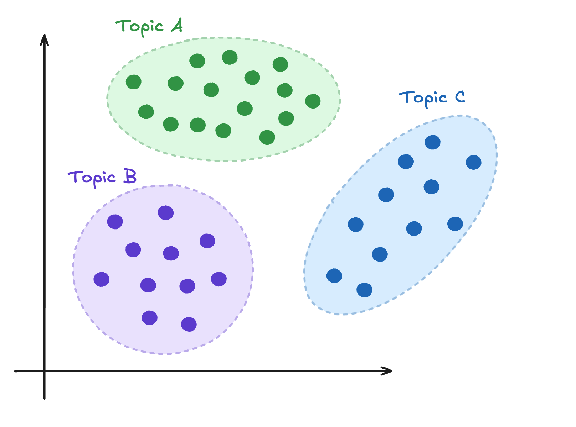
Every experiment in this lab denotes the accuracy and cost. While caching and compression return the same answer for less money, routing often returns a different answer. Even if we save some money, a routing decision made without a quality dimension is not sufficient for a production deployment.
2. Learning Objectives
By the end of this lab, you will be able to:
- 1. Explain how model routers can help us optimize for both cost and quality of the responses coming from our system
- 2. Run multiple routing schemes: deterministic, cascade, and preference-based
- 3. Compare a single tool-calling agent to plan-and-execute, and reason about how each one spends its tokens
- 4. Route sub-tasks to specialist agents with an LLM supervisor and with a vector supervisor, then re-calibrate a specialist using measured results
3. Architecture
The price ladder (USD per million tokens, input / output):
| Tier | Mesh alias | Model | Price |
|---|---|---|---|
| weak | mesh-gpt-mini (Lab 1\) | gpt-4o-mini | \$0.15 / \$0.60 |
| mid | mesh-claude-haiku (Lab 1\) | claude-haiku-4-5 | \$1.00 / \$5.00 |
| strong | mesh-claude-sonnet (new) | claude-sonnet-4-6 | \$3.00 / \$15.00 |
Cost in this lab is read from the mesh: LiteLLM returns an x-litellm-response-cost header on every response, the same number Langfuse shows. The prices in config.yaml are only a fallback for models LiteLLM has no price for.
4. Prerequisites
Before starting the timed portion, make sure you have:
- Completed Lab 1 & 2: LiteLLM proxy from lesson1/lab/llm-mesh-lab. Vector DB scaffold in lesson2/lab/rag-lab/.chroma/ exists with the default chunking. This lab reads from that index.
- API Provider Keys: OPENAI\_API\_KEY serves the weak tier. ANTHROPIC\_API\_KEY serves the medium and strong tiers.
- Installed Python 3.10+ and the ability to create a virtual environment. (This lab was verified on Python 3.14 with routellm 0.2.0.)
- LiteLLM recent enough for
mesh-auto. Lab 3's gateway router usesauto_router/complexity_router, which needs LiteLLM ≥ 1.94. If you installed LiteLLM during Lab 1 weeks ago, upgrade the Lab 1 venv before starting the mesh:pip install -U 'litellm[proxy]'. - Langfuse is optional but useful. If you wired langfuse\_otel in Lab 1, uncomment that callback in mesh\_config.yaml. Every call in this lab is tagged lab3 along with additional metadata for routing-strategy, tier, and agent info.
⚠️ Spend: this lab uses a frontier-class model, so it costs slightly more than Labs 1 and 2. One full run of run\_experiment.py should cost about \$0.50 as of when this lab was written (November 2026). Budget \$1-2 for the whole lab.
Mileage will vary. Models are not perfectly repeatable even at temperature 0. Between two of our own runs the weak tier's score on the 32-question workload moved by a few questions. The trends around the cost structure should be stable, but individual answers may not be.
5. A Note on Using AI
Like many (most) things these days, using AI (Claude Code, Cursor, etc) will probably knock this exercise out at break-neck speed. That may or may not be the best way to actually learn something, depending on the person. If you want to use AI to write the code for this lab, go for it! But I encourage you to reason about the code itself and try to understand the ideas. This isn't for a grade or anything, it's purely for you to learn.
Part 1: Model Routing
1.1 Set up the project and start the Lab 3 mesh
cd lesson3/lab/routing-lab
python -m venv .venv && source .venv/bin/activate # Windows: .venv\Scripts\activate
pip install -r requirements.txtThis installs the same retrieval stack as Lab 2 plus routellm.
Stop the Lab 2 proxy if it is still running (and you can stop the lab2-qdrant container; nothing here uses it). In a second terminal, start LiteLLM on the Lab 3 mesh config. It is your Lab 1 config plus a strong-tier alias, Lab 2's embedding alias, and one router alias:
cd lesson1/lab/llm-mesh-lab
source .venv/bin/activate
pip install -U 'litellm[proxy]' # mesh-auto needs LiteLLM ≥ 1.94
export OPENAI_API_KEY="sk-..."
export ANTHROPIC_API_KEY="sk-ant-..."
litellm --config ../../../lesson3/lab/routing-lab/mesh_config.yamlVerify the aliases:
curl http://localhost:4000/v1/models -H "Authorization: Bearer sk-mesh-lab-1234"Checkpoint 0: the list includes mesh-gpt-mini, mesh-claude-haiku, mesh-claude-sonnet, mesh-embed, and mesh-auto. Open mesh\_config.yaml and find mesh-auto. Then open config.yaml and find the tiers: block that maps weak / mid / strong to aliases.
Leave this terminal running.
1.2 Price the ladder
fixtures/queries.json holds 32 queries about Northstar policies: 15 factual lookups (e.g. "How many days do I have to request a refund?") and 17 that need a multi-step derivation from the same underlying policy documents (prorate a refund, count business days, apply a threshold, etc). Each has a regex for the correct final answer. A starter client\_test.py is already in this directory:
from routing import Router, final_line
EASY = "How many days after delivery do I have to request a refund?"
HARD = (
"I mistyped my password 3 times at 10:00 a.m. and 2 more times at 10:20 a.m. "
"Is my account locked?"
)
router = Router.from_config("config.yaml")Write code to ask both questions on the weak tier and on the strong tier (router.ask(question, strategy="weak")). For each of the four results print the model that answered, prompt and completion tokens, cost, and the final answer line. Then print how many times more the strong tier cost for the same question.
Checkpoint 1: both tiers answer the easy question correctly (30 days), but the strong tier costs roughly 20-30x more. On the hard question the strong tier answers No (the lockout rule is five failures within 15 minutes, and these span 20). On our runs the weak tier answered Yes. This illustrates the basics of the routing problem: the strong model is wasted on the first question but necessary on the second.
Think: Open knowledge\_base/password\_reset.txt in the Lab 2 directory and find the lockout rule. Both models were handed the same retrieved text. What did the weak model get wrong: retrieval, reading, or reasoning?
1.3 Deterministic routing part 1: hard-coding rules in the gateway
The cheapest possible router is a set of rules. LiteLLM ships one: a request for mesh-auto is scored on surface features of the prompt (length, code keywords, reasoning markers, technical terms) and mapped to SIMPLE / MEDIUM / COMPLEX / REASONING. No model is called and nothing is embedded.
from routing import Router
router = Router.from_config("config.yaml")
questions = [
"How long does expedited shipping take after pickup?",
"Uptime last month was exactly 99.0% and our subscription is $800 per month. How much service credit should we get?",
"Think step by step and explain why a 429 is not counted as downtime under the SLA.",
"Write a Python function that retries a request after a 429 using the Retry-After header.",
]
for q in questions:
r = router.ask(q, strategy="gateway")
h = r.calls[0].headers
print(f"{h.get('x-litellm-complexity-router-tier'):<9} {h.get('x-litellm-complexity-router-score'):>6} {r.model:<36} {q[:60]}")The last two questions land in MEDIUM and go to Haiku: "step by step" and "Python function" are what the rules look for. The service-credit question lands in SIMPLE and goes to the weak model. Even though it is the one that needs care, it is short, has no code, and uses no reasoning words. The built-in rules measure how complicated a prompt looks, but they don’t actually know anything about Northstar or even the policies.
In mesh\_config.yaml, uncomment the custom\_dimensions block under mesh-auto, then restart LiteLLM. The block adds one scoring dimension, moneyMath, that fires on dollar amounts, percentages, and words like "credit" and "restocking". Re-run the snippet.
Checkpoint 2: after the restart, the service-credit question scores around +0.35, lands in COMPLEX, and is served by anthropic/claude-sonnet-4-6. The shipping question is unchanged. Nothing in the Python client changed: the routing policy lives in the gateway, so one config edit changed routing for every application behind the mesh.
Think: Your rule also fires on "What is the restocking fee on an item I opened?", which is a lookup. What does that false positive cost per request? Now imagine maintaining forty such rules. Rules are free to run and auditable in a code review. What is their real cost?
Think: The gateway router scores the user's question and ignores the retrieved context in the system prompt. Is that a limitation or a feature for a RAG application, where every prompt is long?
1.4 Deterministic routing \#2: embedding routes
Open fixtures/routes.json. It defines five departments (orders, identity, billing, platform, privacy). Each has a handful of example utterances and a tier. A new question is embedded and matched to the route whose closest utterance is nearest. This is Lab 2's semantic cache with one change: the nearest stored text returns a route instead of an answer.
from routing import Router
router = Router.from_config("config.yaml")
for q in [
"How long does expedited shipping take after pickup?",
"Uptime last month was exactly 99.0% and our subscription is $800 per month. How much service credit should we get?",
"I reset my password this morning. Did that also revoke my API keys?",
"What is the capital of France?",
]:
d = router.vector_router.route(q)
print(f"{str(d.route):<9} {d.score:.2f} → {d.tier:<6} | runner-up {d.scores[1][0]} {d.scores[1][1]:.2f} | {q[:60]}")Checkpoint 3: shipping queries route to orders (weak) and the service credit to billing (strong).
Think: The tier on each route is still a human's best guess: "billing is money, so since it’s high stakes, send it to the strong model." That sends "On which day are invoices generated?" to the strong model too. A department is a coarse proxy for difficulty. Hold that thought until Part 4, where you can check the guess against data.
1.5 Model cascade
Routes and rules make their decision before any model runs, so they can only guess the difficulty. A cascade lets the weak model try, then evaluates a gate as to whether the answer is good enough to keep. This logic is covered in the FrugalGPT paper and is another simple way to route requests.
from routing import Router, final_line
router = Router.from_config("config.yaml")
for q in [
"How many days after delivery do I have to request a refund?",
"I mistyped my password 3 times at 10:00 a.m. and 2 more times at 10:20 a.m. Is my account locked?",
]:
r = router.ask(q, strategy="cascade")
print(f"\n{q}\n {r.reason}")
for c in r.calls:
print(f" {c.purpose:<7} {c.tier:<6} in={c.prompt_tokens:<5} out={c.completion_tokens:<4} ${c.cost_usd:.5f}")
print(f" total ${r.cost_usd:.5f} → {final_line(r.answer)}")Checkpoint 4: the easy question makes two calls (weak answer, weak gate), the gate scores it near 1.0, and the weak answer is kept. The hard question makes three calls: the gate scores the weak answer near 0, and the strong tier answers. Compare that total to what the strong tier alone cost you in 1.2. The escalated question is more expensive than going straight to strong, because we paid for the failed attempt too.
Think: A cascade really only works well if escalations are rare. If the weak answer plus the gate cost w, the strong answer costs s, and a share p of traffic escalates, the cascade costs w + p·s per question against s for all-strong. With your numbers from this step, at what escalation rate does the cascade stop saving money?
Now measure the gate over the whole workload:
python run_experiment.py --routing --arms B,EQuestion: Count your saves, false alarms, and misses. Raise cascade.threshold to 0.9 and re-run arm E, then lower it to 0.2. Which of the three counts moved, and what happened to the cost?
1.6 Preference-based routing with RouteLLM
Rules and routes are both manually configured, and a cascade pays for its decision with extraneous calls. RouteLLM is a more sophisticated design: it uses a classical ML model, trained on tens of thousands of human preference votes between pairs of LLMs, that predicts from the prompt alone the probability that the strong model's answer would be preferred over the weak model's. You choose a threshold; prompts at or above it go to the strong model.
RouteLLM’s out-of-the-box thresholds are calibrated on public chatbot traffic. config.yaml starts with their "about half to strong" value, 0.11593. See what it does on a sample of your traffic: fixtures/traffic\_sample.json holds 40 unlabeled support messages that are not in the graded workload.
python calibrate.pyThe first run downloads the router checkpoint from Hugging Face, and importing RouteLLM can be slow, so expect up to a minute before the first score.
Checkpoint 5: the script prints the distribution of P(strong wins) over the sample, the highest- and lowest-scoring messages, and a threshold for each target share. On our run every score fell between about 0.04 and 0.35, and the published threshold sent about 60% of the sample to the strong model. The threshold is not portable: it was only intended for the traffic it was calibrated on.
Now calibrate to a budget instead of a guess. Calibration needs no labels, only a traffic sample and a decision about how much strong-model usage you can afford:
python calibrate.py --strong 0.30Copy the printed value into preference.threshold in config.yaml, then compare the router against all-weak on the graded workload:
python run_experiment.py --routing --arms B,FThink: Look at the highest- and lowest-scoring messages from calibrate.py. RouteLLM has never seen a Northstar policy and it doesn’t read the retrieved context. What is it reacting to instead?
Part 2: Agent Workflow Optimization
A question takes one model call. A support can require a heck of a lot more than that: answering "how much will my refund be?" means looking up the order, looking up the policy, and doing arithmetic. That is an agent: a model in a loop with memory and tools. agents.py gives the model six read-only tools (fixtures/tools.json): search\_kb over the Lab 2 index, plus get\_order, get\_account, get\_uptime, get\_api\_usage, and get\_login\_status over synthetic records in fixtures/crm.json.
The loop presents a cost problem. Open run\_agent in agents.py and find the messages list. Note how as it stands, nothing is ever removed from it. Every call re-sends the system prompt, all six tool schemas, and every tool result so far.
2.1 Simple agent
fixtures/tickets.json holds four tickets: two with a single issue and two with three issues each. Run the third one (a refund, a service credit, and a rate-limit question in one message) through a single strong agent:
import json
from agents import Desk
desk = Desk.from_config("config.yaml")
ticket = json.load(open("fixtures/tickets.json"))["tickets"][2]["text"]
r = desk.handle(ticket, mode="react")
for i, c in enumerate(r.calls, 1):
print(i, c.purpose, c.tier, c.prompt_tokens, c.completion_tokens, f"${c.cost_usd:.4f}", [t["name"] for t in c.tool_calls])
print(f"total: {r.llm_calls} calls, {r.prompt_tokens} prompt tokens, ${r.cost_usd:.4f}")
print(r.answer)Checkpoint 6: the agent resolves all three issues. Look at prompt\_tokens from one call to the next: each call is larger than the last, because it carries every tool result that came before. On our runs the strong model finished in two or three calls, batching several tool calls into each turn, and its last call was more than twice the size of its first. Every one of those tokens was billed at the strong tier's price, including the ones spent reading a refund policy while answering a rate-limit question.
2.2 Plan first, then execute
Plan-and-execute splits the work in two. A strong model reads the ticket once and writes a plan: a short list of self-contained steps. Each step then runs on a cheap model in a fresh context that holds only that step. A cheap model stitches the results into one reply.
r = desk.handle(ticket, mode="plan")
for s in r.plan:
print("step", s.id, s.depends_on, s.task[:100])
for i, c in enumerate(r.calls, 1):
print(i, c.purpose, c.tier, c.prompt_tokens, c.completion_tokens, f"${c.cost_usd:.4f}", [t["name"] for t in c.tool_calls])
print(f"total: {r.llm_calls} calls, {r.prompt_tokens} prompt tokens, ${r.cost_usd:.4f}", r.cost_by_tier())
print(r.answer)Checkpoint 7: Look at cost\_by\_tier(): on our runs the single planner call was the majority of the whole ticket's cost, mostly because of the plan's output tokens at the strong tier's output price.
Now read the reply against the facts. The correct answers are a \$200 refund (the buyer is a Pro subscriber, so the 15% restocking fee is waived), a \$180 service credit (97.2% uptime is below 99.0%, so 15% of \$1,200), and a limit of 300 requests per minute exceeded by 150.
Think: Run the first ticket (\["tickets"\]\[0\], a single refund question) in both modes. The planner call is pure overhead when there is nothing to split. What cheap check could decide whether a ticket needs a planner at all?
2.3 Memory
Lab 2 ended on a question: compaction would drop the turn where the customer said the order number. Here is that failure, and its fix.
fixtures/session.json is a ten-turn support chat adapted from Lab 2's conversation fixture. In turn 1 the customer gives an account ID and an order number. Turns 7 and 10 are callbacks: they can only be answered from something said much earlier. Run it three ways:
import json, re
from agents import Session
from routing import load_config
turns = json.load(open("fixtures/session.json"))["turns"]
for mode in ("full", "compact", "memory"):
session = Session(load_config("config.yaml"), mode=mode)
print(f"\n=== {mode} ===")
for i, t in enumerate(turns, 1):
turn = session.send(t["text"])
mark = ""
if "expect" in t:
mark = "PASS" if all(re.search(p, turn.answer, re.I) for p in t["expect"]) else "FAIL"
print(f"{i:>2} prompt={turn.calls[0].prompt_tokens:<5} history_kept={turn.history_messages_sent:<2} calls={len(turn.calls)} {mark:<4} {turn.answer[:70]}")
if turn.recalled:
print(" recalled:", turn.recalled)- full sends the whole conversation every turn.
- memory is compaction plus a small fact store. After each turn one extra cheap call extracts durable facts (identifiers, amounts quoted, decisions). Before each turn the facts most similar to the new message are recalled, using the same MiniLM embedder, and placed in the system prompt.
Part 3: Agentic Routing in a Multi-Agent System
Part 2 left a problem: cheap workers are cheap everywhere, including on the steps that need a better model. Part 1 already solved that problem for individual questions, so now we will take the same principles and extend them to multiple sub-tasks of varying complexity.
Open fixtures/routes.json. In Part 1 you used each route's tier. Each route also has tools and sources. Together those three fields define a specialist agent: the billing specialist runs on the strong tier, carries three tools instead of six, and searches two documents instead of eight. The supervisor's job is to decide which specialist gets each piece of a ticket. That decision is a routing decision.
3.1 Hierarchical agent coordination with supervisor
import json
from agents import Desk
desk = Desk.from_config("config.yaml")
ticket = json.load(open("fixtures/tickets.json"))["tickets"][2]["text"]
r = desk.handle(ticket, mode="team", supervisor="llm")
for note in r.notes:
print("note:", note)
for run in r.runs:
print(f"{run.agent:<9} [{run.tier:<6}] calls={len(run.calls)} ${run.cost_usd:.4f} tools={[t.split('(')[0] for t in run.tool_log]}")
print(f"total: {r.llm_calls} calls, ${r.cost_usd:.4f}", r.cost_by_tier())
print(r.answer)The planner from 2.2 now also names an agent for every step.
Checkpoint 8: three specialists ran: orders on the weak tier, billing on the strong tier, platform on the mid tier. Each used only its own tools. Check the four facts again: the service credit, which the cheap worker tended to miss in 2.2, is now computed by a strong model, while the refund lookup still runs on the cheapest one.
Think: Compare the three totals for this ticket: react (2.1), plan (2.2), team. The team probably did not come out much cheaper than the single strong agent, and it is certainly more expensive than plan. Where did the money go? Use cost\_by\_tier() and the per-agent lines. A multi-agent system is not cheaper by construction. It is cheaper only when work lands on cheap agents.
3.2 Agentic Routing without an LLM supervisor
The LLM supervisor is a strong-model call whose output is mostly a routing table. You already own a router that makes that decision without a model:
r = desk.handle(ticket, mode="team", supervisor="vector")
for note in r.notes:
print("note:", note)
for run in r.runs:
print(f"{run.agent:<9} [{run.tier:<6}] calls={len(run.calls)} ${run.cost_usd:.4f} tools={[t.split('(')[0] for t in run.tool_log]}")
print(f"total: {r.llm_calls} calls, ${r.cost_usd:.4f}", r.cost_by_tier())The vector supervisor routes each sentence of the ticket with Part 1's embedding router. Every department that wins a sentence gets the whole ticket and is told to handle only its own part. No planner call is made.
Checkpoint 9: the same three specialists run (orders / billing / platform), but there is no planner call in the cost breakdown. On our runs the weak orders specialist was more likely to miss the Pro restocking-fee waiver when handed the whole multi-issue ticket instead of a rewritten single-step task.
Question: The vector-based router saved the planner call. What did it trade off? Compare the task each specialist received in 3.1 (the planner's rewritten, self-contained instruction) with 3.2 (the entire ticket plus "handle only your part"). Look at the specialists' prompt tokens, and at whether the weak orders specialist still gets the refund right. Run the single-issue ticket (\["tickets"\]\[0\]) both ways: for which kind of ticket is the vector supervisor the clear winner?
3.3 Re-tier with data
Every tier in routes.json was a guess. You now have a way to test one. In fixtures/routes.json, change the billing route's tier from strong to mid, then run the team over all four tickets:
python run_experiment.py --agents --arms react,team-llmCheckpoint 10: the team's cost drops substantially against react, because the most expensive specialist moved down a rung. Read the facts column and any MISSED: lines before you celebrate. On our run this change cut the team's cost by roughly 40% and lost one of the nine facts.
Put billing back to strong before Part 4, or keep mid and note it in your table. Either is fine as long as you know which one you measured.
Part 4: The Cost Experiment
You now have every lever. Act like a cost engineer: measure them side by side, with quality in the same table.
4.1 Run the experiment
run\_experiment.py runs three workloads through the mesh using the numbers in your config.yaml and routes.json (your calibrated RouteLLM threshold, your cascade threshold, your specialist tiers, and whatever gateway rule your running mesh has loaded).
python run_experiment.pyA full run makes a few hundred model calls and takes roughly ten minutes. To re-run one workload or a few arms: --routing, --agents, or --memory, optionally with --arms, for example python run\_experiment.py --routing --arms A,E.
Workload 1, model routing. The 32 graded questions, each with the same retrieval. Only the model reading the context changes.
| Arm | Strategy | Decides | Extra cost of deciding |
|---|---|---|---|
| A | all-strong | never | none |
| B | all-weak | never | none |
| C | gateway rules (mesh-auto) | before the call | none |
| D | embedding routes | before the call | a local embedding |
| E | cascade (weak → gate → strong) | after the weak call | a gate call on every question |
| F | RouteLLM | before the call | one small embedding call |
Workload 2, agent architectures. The four tickets, graded on nine facts: react, plan, team-llm, team-vector.
Workload 3, memory. The ten-turn chat: full, compact, memory.
The routing workload prints a grid with one row per question and one column per arm, showing which tier answered and whether it was right. Per-item results, including every answer, are saved to results.json.
If you have Langfuse from Lab 1, filter to tag lab3 and then arm-A versus arm-E. Arm E's traces show the lab3-gate generations that arm A does not have.
Advanced Exercise: Train a Custom Router for RouteLLM
In Part 1.6 you downloaded a router and turned the most basic dial available to us: the threshold for choosing one model over another. The model behind that dial was trained on Chatbot Arena votes between models such as GPT-4 and Mixtral, on public chatbot traffic. It has never seen a Northstar policy, a Northstar question, or either of the two models your mesh serves. You calibrated its threshold to your traffic. That’s limiting, because you couldn’t influence what it believes is hard relative to your data in particular.
This exercise goes inside that black box. You implement RouteLLM's matrix-factorization model and its training loop, train it on battles between your own two tiers on Northstar questions, save it in RouteLLM's checkpoint format, and load it back into arm F. Writing and testing the code is offline. Training needs the mesh for one embedding request (well under a cent). Routing with the result costs about what arm F cost you in Part 1.
Matrix Factorization is a type of classical ML model that is commonly used for recommender systems (think: “users like you also purchased these items” type use cases). If you want to learn about how a matrix factorization model really works, here is a good YouTube video for you to check out: https\://www.youtube.com/watch?v=ZspR5PZemcs
This lab assumes we have labeled training data to build the matrix-factorization on top of. mf-router-lab/fixtures/battles.json holds ~300 Northstar questions that are not in the graded workload. Each was answered by the weak and the strong tier through the Part 1 pipeline, and a judge decided whether the weak answer reached the strong answer's conclusion. The strong tier "won" 72 of them (23%); the rest are ties. Producing that file cost about \$1.50, almost all of it coming from strong-tier answers and verdicts. collect\_battles.py is the script that made it, and if you want to go really deep you can read it or run it to make more.
The mental model
- A battle is one query, two models, and a judge’s verdict: model\_a won, model\_b won, or tie.
- The model scores a (model, prompt) pair: score \= w · (normalize(P\[model\]) ⊙ W·e(prompt)). e(prompt) is the prompt's mesh-embed vector, computed once and frozen. W projects it from 1536 numbers to 128. P\[model\] is one learned vector per model. w turns the element-wise product into one number.
- P(strong wins) is sigmoid(score(strong) − score(weak)). A router only ever compares two models on the same prompt.
- Training turns each battle into a (winner, loser) pair and pushes score(winner) − score(loser) up. Gaussian noise on the embeddings is the regularizer.
- The checkpoint is three tensors with RouteLLM's names and shapes. Your strong and weak tiers reuse the two rows of the model table that RouteLLM scores by default, so RouteLLM loads your file with no code changes.
Edit only lesson3/lab/mf-router-lab/mf\_router.py. Implement the seven functions marked TODO, in order:
| Function | Purpose |
|---|---|
| MFModel.score | How well a model is expected to handle a prompt, as a logit |
| MFModel.win\_logit | score(winner) − score(loser) |
| battle\_pairs | Judged battles → (winner, loser) training pairs; decides what a tie means |
| train\_epoch | Shuffle, add noise, binary cross-entropy against "the winner won", step |
| strong\_win\_rate | P(strong wins) for each prompt: the number the router returns |
| auc | Does the router rank prompts correctly? No threshold involved |
| budget\_table | What each strong-tier budget catches, and what it leaves on the weak tier |
Everything else is provided: the model's constructor, the multi-epoch fit loop, threshold calibration (the same function as Part 1.6), checkpoint export, and train.py. Each function has a detailed docstring spelling out the contract. The seven functions come to about seventy lines of PyTorch and plain Python; you do not need a GPU.
Workflow
cd lesson3/lab/mf-router-lab
source ../routing-lab/.venv/bin/activate # the hands-on lab's environment already has PyTorch
pip install -r requirements.txt # adds pytest
# 1. Implement the TODOs in mf_router.py, checking your work as you go:
pytest -v
# 2. Once green, train on the real battles (the Lab 3 mesh must be running):
python train.pytrain.py embeds the 307 prompts through mesh-embed (cached after the first run), scores RouteLLM's published router on them as a baseline, cross-validates your model five ways so that every score comes from a model that never trained on that prompt, then trains a final model on everything and saves it to checkpoints/northstar-mf/. It takes about fifteen seconds on a laptop.
On our runs the published router's AUC on these battles was about 0.60, and a router trained here scored 0.68 to 0.73 depending on the seed. At a 30% strong-tier budget, a router that knows nothing catches 30% of the strong wins; the published router caught 44% and ours 56%. Training is seeded, but floating-point results differ between machines, so your numbers will be close to these and not identical.
Think: 0.5 is a coin flip and 1.0 is perfect. The published router, trained on tens of thousands of battles, manages 0.60 on Northstar questions. Yours, trained on about 250, beats it. What does that say about where a router's value comes from? And why is yours still nowhere near 1.0? (Open battles.json and read ten strong wins. How many could you have predicted from the question alone?)
Break it on purpose
Each of these is one command. Compare the AUC line and the per-fold numbers with your first run.
python train.py --lr 3e-4 --alpha 0.1 # the hyperparameters in RouteLLM's training script
python train.py --ties drop # what RouteLLM's training script does with ties
python train.py --init published # start from RouteLLM's weights instead of random ones
python train.py --curve # train on 25 / 50 / 75 / 100% of the battlesQuestion: With RouteLLM's own learning rate and noise level, our router scored 0.51 to 0.56 depending on the seed, below the published one. The embeddings have length 1, so each of their 1536 numbers is around 0.025. What does adding noise with standard deviation 0.1 to every one of them do to a prompt? Why would that be a sensible setting for 100,000 battles and a bad one for 250?
Route with your model
Your checkpoint is a RouteLLM checkpoint. In ../routing-lab/config.yaml, point the preference strategy at it:
preference:
checkpoint: ../mf-router-lab/checkpoints/northstar-mfA threshold belongs to the model that produced the scores, so the one in config.yaml now means nothing. Recalibrate on the traffic sample, copy the printed value into preference.threshold, and re-run arm F:
cd ../routing-lab
python calibrate.py --strong 0.30
python run_experiment.py --routing --arms B,Fcalibrate.py and the experiment both print which weights they loaded. Look at the highest- and lowest-scoring messages from calibrate.py and compare them with what the published router ranked highest in Part 1.6. On our run the top of the list was prorated refunds and service-credit calculations, the question types the weak tier got wrong most often in the battles.
On our run, with both routers calibrated to 30% of the traffic sample, the published router sent 53% of the graded questions to the strong tier and answered 31 of 32; ours sent 34% and answered 30 of 32, for about 70% of the published router's cost. When we ranked the 32 questions by each router's score and compared them at equal numbers of strong calls, the two caught the same number of the weak tier's five mistakes at almost every budget.
Question: The battles say your router is better than the published one. The graded workload says they are about the same. Which do you believe, and why? Count the weak tier's wrong answers in your arm B: that is the number of questions on which two routers can differ at all. How large would the graded workload have to be to show a difference of 0.60 versus 0.70 in AUC?
Score a few messages directly to see what changed. Run this from routing-lab with your checkpoint, then again with checkpoint: null:
from routing import Router
router = Router.from_config("config.yaml")
for text in [
"How long is a password reset link valid?",
"Uptime last month was 98.7% and our subscription is $1,200 per month. How much service credit do we get?",
"Hi, is anyone there?",
"What is the capital of France?",
]:
print(f"{router.preference.win_rate(text):.3f} {text}")On our run the published router scored the first two almost identically (0.14 each). Ours scored the reset-link lookup 0.004 and the service-credit calculation 0.62.
Think: The battles contain no small talk and nothing off-topic. Your router gave the last two messages a low, confident score anyway (0.02 and 0.04 on our run), so they go to the weak tier. Nothing in its training data says that is right. What did it base those numbers on? What would you add to battles.json before shipping this, and what does a router trained on public chatbot traffic have that yours lacks?
Definition of done
- 1. All tests in test\_mf\_router.py pass (pytest -v), including the one that loads your checkpoint with RouteLLM's own MatrixFactorizationRouter and gets the same number you computed.
- 2. python train.py prints a held-out AUC for your router that is above the published router's on the same battles, and saves checkpoints/northstar-mf/model.safetensors.
- 3. python calibrate.py in routing-lab reports that it loaded your checkpoint, and arm F runs with it.
- 4. You can explain why your router's AUC is higher than the published ones on the battles and why the 32 graded questions cannot confirm it.
If you run out of gas or just want to run a completed solution, you can find the solution in reference\_solution.py (MF\_ROUTER\_IMPL=reference\_solution python train.py).
References
- The exercise: mf-router-lab/README.md
- Hands-on router (where preference.checkpoint is read): routing-lab/routing.py
- RouteLLM's matrix-factorization model and training script: https\://github.com/lm-sys/RouteLLM/tree/main/routellm/routers/matrix\_factorization
- The public battles RouteLLM trained on: https\://huggingface.co/datasets/lmsys/lmsys-arena-human-preference-55k
References
- Lab 1 mesh (required): ../../lesson1/lab/exercise\_overview.md
- Lab 2 index and pipeline (required): ../../lesson2/lab/exercise\_overview.md
- FrugalGPT (LLM cascades): https\://arxiv.org/abs/2305.05176
- RouteLLM paper (learning to route from preference data): https\://arxiv.org/abs/2406.18665
- RouteLLM code and published thresholds: https\://github.com/lm-sys/RouteLLM
- RouteLLM's matrix-factorization training script (the advanced exercise rebuilds it): https\://github.com/lm-sys/RouteLLM/blob/main/routellm/routers/matrix\_factorization/train\_matrix\_factorization.py
- RouteLLM matrix-factorization checkpoint used here: https\://huggingface.co/routellm/mf\_gpt4\_augmented
- LiteLLM auto routing (the gateway's complexity router): https\://docs.litellm.ai/docs/proxy/auto\_routing
- LiteLLM Proxy docs: https\://docs.litellm.ai/docs/simple\_proxy
- Semantic Router (embedding routes as a library): https\://github.com/aurelio-labs/semantic-router
- Anthropic, "Building effective agents" (routing, orchestrator-workers): https\://www.anthropic.com/engineering/building-effective-agents
- Langfuse ↔ LiteLLM (if you left it on from Lab 1): https\://langfuse.com/integrations/gateways/litellm
[image2]: <>
Lab 3 Reference Implementation (lesson3/lab/mf-router-lab/reference_solution.py)
#!/usr/bin/env python3
"""
REFERENCE SOLUTION — do not open until you've finished `mf_router.py`.
This file is a complete, working implementation that is API-compatible
with the public API in `mf_router.py` (every PROVIDED block is identical;
only the seven TODO bodies are filled in). Instructors can point the tests
and the training script at it:
MF_ROUTER_IMPL=reference_solution pytest -v
MF_ROUTER_IMPL=reference_solution python train.py
Background
----------
In Part 1.6 you downloaded RouteLLM's `mf` router and used it as a black
box: a prompt went in, P(strong wins) came out. That model was trained on
Chatbot Arena votes between models such as GPT-4 and Mixtral, on public
chatbot traffic. It has never seen a Northstar policy, a Northstar ticket,
or either of the two models your mesh actually serves.
Here you train the same architecture on battles between YOUR two tiers on
YOUR traffic (`fixtures/battles.json`), and save it in RouteLLM's checkpoint
format so the hands-on lab's `preference` strategy can load it unchanged.
The model
---------
"Matrix factorization" is the recommender-system idea: predict an unseen
(user, item) rating from the dot product of a learned user vector and a
learned item vector. Here the "users" are models, the "items" are prompts,
and the "rating" is how well that model handles that prompt:
score(model, prompt) = w · ( normalize(P[model]) ⊙ (W · e(prompt)) )
e(prompt) the prompt's text-embedding-3-small vector (1536 numbers),
computed once by the mesh's `mesh-embed` alias and frozen
W `text_proj`: a 1536 → 128 linear map, learned
P[model] one learned 128-number vector per model, L2-normalized
⊙ element-wise product
w `classifier`: a 128 → 1 linear map, learned, no bias
A router never needs the score itself, only a comparison of two models on
the same prompt:
P(strong wins | prompt) = sigmoid( score(strong, prompt) − score(weak, prompt) )
Training data is a list of battles. Each one says "on this prompt, this
model won and that one lost". Training pushes
`score(winner) − score(loser)` up on every battle (binary cross-entropy
against a target of 1). That is the whole algorithm.
Compatibility
-------------
`MFModel` below has the same three parameter tensors, with the same names
and shapes, as RouteLLM's own `MFModel`. RouteLLM keeps a table of 64 model
vectors and, by default, scores row 24 ("gpt-4-1106-preview") against row
36 ("mixtral-8x7b-instruct-v0.1"). This lab keeps the 64-row table and
reuses those two rows for your strong and weak tiers, so that
* a checkpoint you save here loads in RouteLLM with no code changes, and
* you can start training from RouteLLM's published weights instead of
from random ones (`python train.py --init published`).
Scope
-----
You implement the model's forward pass, the conversion from battles to
training pairs, one epoch of training, and the three functions that tell
you whether the router is any good. Everything else is provided: the
constants, the constructor, the multi-epoch `fit` loop, threshold
calibration (the same function as Part 1.6), and checkpoint export.
"""
from __future__ import annotations
from dataclasses import dataclass
from pathlib import Path
from typing import Any, Sequence
import torch
import torch.nn.functional as F
# --------------------------------------------------------------------------- #
# Constants (PROVIDED)
# --------------------------------------------------------------------------- #
TEXT_DIM = 1536 # text-embedding-3-small, the embedding RouteLLM's mf router uses
DIM = 128 # size of a model vector and of a projected prompt vector
NUM_MODELS = 64 # rows in RouteLLM's model table
STRONG_ID = 24 # RouteLLM's row for "gpt-4-1106-preview"; your strong tier lives here
WEAK_ID = 36 # RouteLLM's row for "mixtral-8x7b-instruct-v0.1"; your weak tier lives here
# ========================================================================== #
# TODO(student) #1 + #2: the model's forward pass
# ========================================================================== #
class MFModel(torch.nn.Module):
"""RouteLLM's matrix-factorization router, minus the embedding API call.
RouteLLM's inference model embeds the prompt inside `forward`. Training
cannot afford one API call per example per epoch, so this model takes
prompt embeddings that were computed once, up front.
"""
def __init__(self, dim: int = DIM, num_models: int = NUM_MODELS, text_dim: int = TEXT_DIM) -> None:
# PROVIDED. The attribute names and the Sequential wrappers match
# RouteLLM's MFModel exactly, so `state_dict()` here IS a RouteLLM
# checkpoint: P.weight, text_proj.0.weight, classifier.0.weight.
super().__init__()
self.P = torch.nn.Embedding(num_models, dim)
self.text_proj = torch.nn.Sequential(torch.nn.Linear(text_dim, dim, bias=False))
self.classifier = torch.nn.Sequential(torch.nn.Linear(dim, 1, bias=False))
def score(self, model_ids: torch.Tensor, prompt_embeds: torch.Tensor) -> torch.Tensor:
"""How well each model is expected to handle each prompt, as a logit.
Args:
model_ids: LongTensor of shape (batch,). Row i names the model
to score on prompt i.
prompt_embeds: FloatTensor of shape (batch, text_dim).
Returns:
FloatTensor of shape (batch,):
w · ( normalize(P[model]) ⊙ (W · e) )
Steps:
1. Look up the model vectors: `self.P(model_ids)` → (batch, dim).
2. L2-normalize each model vector (`F.normalize(..., p=2, dim=1)`).
Only a model vector's direction matters, never its length.
3. Project the prompt embeddings with `self.text_proj` → (batch, dim).
4. Multiply the two element-wise, apply `self.classifier`
→ (batch, 1), and drop the last dimension.
"""
model_vectors = F.normalize(self.P(model_ids), p=2, dim=1)
prompt_vectors = self.text_proj(prompt_embeds)
return self.classifier(model_vectors * prompt_vectors).squeeze(-1)
def win_logit(
self,
winner_ids: torch.Tensor,
loser_ids: torch.Tensor,
prompt_embeds: torch.Tensor,
) -> torch.Tensor:
"""Logit that `winner` beats `loser` on each prompt.
Returns `score(winner) − score(loser)`, shape (batch,). A sigmoid of
this is a win probability. It is 0 (a coin flip) when the two ids
are the same model, and it flips sign when the ids are swapped.
Because the classifier is linear and has no bias, this equals
`classifier((normalize(P[winner]) − normalize(P[loser])) ⊙ W·e)`,
which is how RouteLLM's training script writes it. A bias term
would cancel in the subtraction and never be learned.
"""
return self.score(winner_ids, prompt_embeds) - self.score(loser_ids, prompt_embeds)
# ========================================================================== #
# TODO(student) #3: battles → training pairs
# ========================================================================== #
def battle_pairs(
battles: Sequence[dict[str, Any]],
model_ids: dict[str, int],
tie_winner: str | None,
) -> tuple[list[int], list[int], list[int]]:
"""Turn judged battles into (winner, loser) training pairs.
Each battle is a dict with at least:
{"model_a": "mesh-gpt-mini", "model_b": "mesh-claude-sonnet",
"winner": "model_a" | "model_b" | "tie"}
Args:
battles: the judged battles, in order.
model_ids: model name → row in the model table,
e.g. {"mesh-gpt-mini": WEAK_ID, "mesh-claude-sonnet": STRONG_ID}.
tie_winner: what to do with a tie.
a model name → that model is counted as the winner of
every tie it took part in
None → ties are dropped
Returns:
(keep, winners, losers), three lists of equal length:
keep[i] index into `battles` of the i-th training pair
winners[i] model-table row of the winner
losers[i] model-table row of the loser
Rules:
- "model_a" → model_a won. "model_b" → model_b won.
- "tie" with `tie_winner` naming one of the two models → that model
won, the other lost.
- Drop the battle (it appears in none of the three lists) when: it is
a tie and `tie_winner` is None or is neither of its models; its
`winner` is any other string; or model_a and model_b are the same.
Why ties matter: RouteLLM's training script drops them. On a support
desk most battles ARE ties (the cheap answer was fine). Dropping them
throws away three quarters of this dataset, and every remaining pair
says the same thing: "strong won". A model trained that way can still
learn what a strong-win prompt looks like, but it never sees a prompt
where the cheap answer was enough, so its "probabilities" all drift
toward 1. This lab scores a tie as a win for the cheaper model.
"""
keep: list[int] = []
winners: list[int] = []
losers: list[int] = []
for i, battle in enumerate(battles):
a, b = battle["model_a"], battle["model_b"]
if a == b:
continue
outcome = battle["winner"]
if outcome == "model_a":
winner, loser = a, b
elif outcome == "model_b":
winner, loser = b, a
elif outcome == "tie" and tie_winner in (a, b):
winner, loser = tie_winner, (b if tie_winner == a else a)
else:
continue
keep.append(i)
winners.append(model_ids[winner])
losers.append(model_ids[loser])
return keep, winners, losers
# ========================================================================== #
# TODO(student) #4: one epoch of training
# ========================================================================== #
def train_epoch(
model: MFModel,
optimizer: torch.optim.Optimizer,
embeds: torch.Tensor,
winners: torch.Tensor,
losers: torch.Tensor,
*,
batch_size: int,
alpha: float,
generator: torch.Generator,
) -> float:
"""One pass over the training pairs. Returns the mean loss per pair.
Args:
embeds: FloatTensor (n, text_dim), the prompt embedding of each pair.
winners: LongTensor (n,), model-table row of each pair's winner.
losers: LongTensor (n,), model-table row of each pair's loser.
batch_size: pairs per optimizer step (the last batch may be smaller).
alpha: standard deviation of the Gaussian noise added to each
prompt embedding. Noise is the regularizer: the model
cannot memorize a prompt it never sees the same way twice.
generator: the random source. Use it for BOTH the shuffle and the
noise so a seed reproduces a run.
Steps:
1. `model.train()`.
2. Shuffle: `torch.randperm(n, generator=generator)`.
3. For each batch of indices, in order:
a. Take that batch's embeddings. If `alpha > 0`, add
`torch.randn(batch.shape, generator=generator) * alpha`.
Build a NEW tensor: never modify `embeds` in place.
b. `logits = model.win_logit(winners[idx], losers[idx], noisy)`.
c. Every pair is "the winner won", so the target is all ones:
`F.binary_cross_entropy_with_logits(logits, torch.ones_like(logits))`.
d. `optimizer.zero_grad()`, `loss.backward()`, `optimizer.step()`.
4. Return the mean loss over all n pairs: weight each batch's mean
loss by the number of pairs in it, then divide by n.
"""
model.train()
n = len(winners)
order = torch.randperm(n, generator=generator)
total = 0.0
for start in range(0, n, batch_size):
idx = order[start : start + batch_size]
batch = embeds[idx]
if alpha > 0:
batch = batch + torch.randn(batch.shape, generator=generator) * alpha
logits = model.win_logit(winners[idx], losers[idx], batch)
loss = F.binary_cross_entropy_with_logits(logits, torch.ones_like(logits))
optimizer.zero_grad()
loss.backward()
optimizer.step()
total += loss.item() * len(idx)
return total / n
# --------------------------------------------------------------------------- #
# The multi-epoch loop (PROVIDED)
# --------------------------------------------------------------------------- #
def fit(
embeds: torch.Tensor,
winners: Sequence[int],
losers: Sequence[int],
*,
epochs: int = 100,
lr: float = 1e-3,
weight_decay: float = 1e-5,
alpha: float = 0.02,
batch_size: int = 64,
seed: int = 0,
init: dict[str, torch.Tensor] | None = None,
dim: int = DIM,
num_models: int = NUM_MODELS,
) -> tuple[MFModel, list[float]]:
"""PROVIDED: build a model and train it for `epochs` epochs.
`init` is an optional RouteLLM state dict to start from (fine-tuning).
Returns the trained model and the loss after each epoch.
"""
torch.manual_seed(seed)
model = MFModel(dim=dim, num_models=num_models, text_dim=embeds.shape[1])
if init is not None:
model.load_state_dict(init)
optimizer = torch.optim.Adam(model.parameters(), lr=lr, weight_decay=weight_decay)
generator = torch.Generator().manual_seed(seed)
win = torch.as_tensor(winners, dtype=torch.long)
lose = torch.as_tensor(losers, dtype=torch.long)
losses = [
train_epoch(model, optimizer, embeds, win, lose, batch_size=batch_size, alpha=alpha, generator=generator)
for _ in range(epochs)
]
return model, losses
# ========================================================================== #
# TODO(student) #5: inference
# ========================================================================== #
def strong_win_rate(
model: MFModel,
embeds: torch.Tensor,
strong_id: int = STRONG_ID,
weak_id: int = WEAK_ID,
) -> list[float]:
"""P(the strong model's answer is preferred) for each prompt.
This is the number RouteLLM's router returns and the number
`preference.threshold` in config.yaml is compared against.
Args:
embeds: FloatTensor (n, text_dim).
Returns:
A list of n Python floats in (0, 1):
sigmoid(score(strong) − score(weak)).
Run it with `model.eval()` and inside `torch.no_grad()`: this is
inference, so no noise and no gradients.
"""
model.eval()
n = embeds.shape[0]
strong = torch.full((n,), strong_id, dtype=torch.long)
weak = torch.full((n,), weak_id, dtype=torch.long)
with torch.no_grad():
return torch.sigmoid(model.win_logit(strong, weak, embeds)).tolist()
# ========================================================================== #
# TODO(student) #6: is the router any good?
# ========================================================================== #
def auc(scores: Sequence[float], labels: Sequence[bool]) -> float:
"""Area under the ROC curve: does the router RANK prompts correctly?
AUC is the probability that a randomly chosen positive (a prompt where
the strong model won) gets a higher score than a randomly chosen
negative. 0.5 is a coin flip, 1.0 is a perfect ranking. It does not
depend on any threshold, which is what makes it the right first number
to look at for a router: the threshold is a budget decision you make
later.
Compute it by counting. Over every (positive, negative) pair:
1 if the positive's score is higher
0.5 if the two scores are equal
0 otherwise
and return the mean.
Raises:
ValueError: if there are no positives or no negatives.
"""
positives = [s for s, y in zip(scores, labels) if y]
negatives = [s for s, y in zip(scores, labels) if not y]
if not positives or not negatives:
raise ValueError("AUC needs at least one positive and one negative")
wins = 0.0
for p in positives:
for q in negatives:
if p > q:
wins += 1.0
elif p == q:
wins += 0.5
return wins / (len(positives) * len(negatives))
# --------------------------------------------------------------------------- #
# Threshold calibration (PROVIDED)
# --------------------------------------------------------------------------- #
def calibrate_threshold(win_rates: Sequence[float], strong_fraction: float) -> float:
"""PROVIDED: the threshold that sends about `strong_fraction` of these prompts to strong.
The same function as `routing.calibrate_threshold` from Part 1.6.
A prompt goes to the strong tier when its win rate is >= the threshold.
"""
if not win_rates:
raise ValueError("Need at least one win rate to calibrate")
ranked = sorted(win_rates, reverse=True)
n_strong = round(strong_fraction * len(ranked))
if n_strong <= 0:
return min(1.0, ranked[0] + 1e-6)
return ranked[min(n_strong, len(ranked)) - 1]
# ========================================================================== #
# TODO(student) #7: what a strong-tier budget buys
# ========================================================================== #
@dataclass(frozen=True)
class BudgetRow:
"""What one strong-tier budget buys (PROVIDED)."""
strong_fraction: float # the budget asked for
threshold: float # the threshold that budget calibrates to
sent: float # share of prompts actually sent to strong (score >= threshold)
caught: float # share of the strong-needed prompts that were sent to strong
quality: float # share of ALL prompts that got an answer as good as strong's
def budget_table(
scores: Sequence[float],
strong_needed: Sequence[bool],
fractions: Sequence[float],
) -> list[BudgetRow]:
"""Turn router scores into the table a cost engineer actually reads.
Args:
scores: the router's P(strong wins) for each prompt.
strong_needed: for each prompt, did the strong model win the battle?
fractions: strong-tier budgets to evaluate, e.g. [0.1, 0.2, 0.3].
For each fraction, in order:
1. `threshold = calibrate_threshold(scores, fraction)`.
2. A prompt is sent to strong when `score >= threshold`.
3. `sent` = prompts sent to strong / all prompts.
4. `caught` = strong-needed prompts sent to strong / strong-needed
prompts. (If no prompt is strong-needed, 1.0.)
5. `quality` = 1 − (strong-needed prompts left on weak) / all prompts.
A prompt gets a good answer if the weak tier was enough
or if it was sent to strong.
A router that knows nothing catches `fraction` of the strong-needed
prompts at a budget of `fraction`. Everything above that is what the
router is worth.
"""
n = len(scores)
needed = sum(1 for y in strong_needed if y)
rows: list[BudgetRow] = []
for fraction in fractions:
threshold = calibrate_threshold(scores, fraction)
to_strong = [s >= threshold for s in scores]
hits = sum(1 for sent, y in zip(to_strong, strong_needed) if sent and y)
rows.append(
BudgetRow(
strong_fraction=fraction,
threshold=threshold,
sent=sum(to_strong) / n,
caught=hits / needed if needed else 1.0,
quality=1.0 - (needed - hits) / n,
)
)
return rows
# --------------------------------------------------------------------------- #
# Checkpoints (PROVIDED)
# --------------------------------------------------------------------------- #
def export_checkpoint(model: MFModel, directory: str | Path) -> Path:
"""Save `model` as a RouteLLM checkpoint directory.
RouteLLM loads a matrix-factorization router with
MatrixFactorizationRouter(checkpoint_path=<directory or Hugging Face repo>)
and expects a `model.safetensors` holding P.weight, text_proj.0.weight
and classifier.0.weight. That is this model's state dict, unchanged.
`config.json` records the shapes RouteLLM passes when it builds the model.
"""
import json
from safetensors.torch import save_file
directory = Path(directory)
directory.mkdir(parents=True, exist_ok=True)
state = {name: tensor.detach().cpu().contiguous() for name, tensor in model.state_dict().items()}
save_file(state, str(directory / "model.safetensors"))
config = {
"dim": model.P.embedding_dim,
"num_models": model.P.num_embeddings,
"text_dim": model.text_proj[0].in_features,
"num_classes": 1,
"use_proj": True,
}
(directory / "config.json").write_text(json.dumps(config, indent=2) + "\n")
return directory
def load_checkpoint(directory: str | Path) -> MFModel:
"""Load a checkpoint directory written by `export_checkpoint` (or downloaded from RouteLLM)."""
from safetensors.torch import load_file
state = load_file(str(Path(directory) / "model.safetensors"))
num_models, dim = state["P.weight"].shape
model = MFModel(dim=dim, num_models=num_models, text_dim=state["text_proj.0.weight"].shape[1])
model.load_state_dict(state)
return model.eval()
Module 4: Complete Lab Solutions, Food-for-Thought Answers & Transcript Q&A Index
Covers: Worked solutions to all checkpoints and conceptual questions in Lab 1, Lab 2, and Lab 3, reference code walkthroughs, and a master timestamped Q&A index across all 5 course recordings.
1. Lab 1 Solutions & "Food for Thought" Answers
1.1 Part 2.3 Think: Why Split Authentication into Two Hops (client <-> mesh and mesh <-> provider)?
- Hop 1 (
client -> LiteLLM Mesh): Authenticated via virtual key (sk-mesh-lab-1234). - Hop 2 (
LiteLLM Mesh -> OpenAI / Anthropic): Authenticated via provider master keys (OPENAI_API_KEY,ANTHROPIC_API_KEY) held exclusively in gateway custody. - Operational Benefits:
- 1. Zero-Downtime Employee / Service Offboarding: Revoking an engineer's or microservice's virtual mesh key immediately cuts off access without rotating the organization's upstream OpenAI or Anthropic keys across dozens of production services.
- 2. Per-Team Spend Caps & Rate Limiting: The gateway enforces monthly USD budgets and TPM/RPM limits per virtual key or
team_idbefore requests ever reach upstream providers.
1.2 Part 3.5 Question 3 & 4: Enforcing 6-Month Spend Attribution & Tracing Back to Raw Events
- *Answering "Which product feature is responsible for 80% of our LLM spend?":*
- Use
tags(e.g.,feature:refund-bot,feature:code-review,team:checkout) andsession_idpassed inextra_body.metadata. - Gateway Policy Enforcement: Configure LiteLLM to reject requests lacking a valid
feature/teamtag (or automatically inject tags mapped from each service's virtual API key) so unattributed "dark spend" cannot accumulate. - Trace vs. Raw Event vs. Metric:
- Raw Event (
generation): The immutable ground-truth record of a single LLM API call (prompt_tokens=21, completion_tokens=68, model="gpt-4o-mini", cost=$0.00004395). - Trace: The causal tree of spans (
observations) for one end-to-end user request (in a multi-step agent, 1 Trace contains $N$ Generation events + tool spans). - Metric: An OLAP aggregation computed over raw events (e.g.,
SUM(cost)grouped bymodelin the Langfuse Dashboard:$0.000226across the 5mesh-gpt-minigeneration events).
1.3 Part 4.2 Question 1 & 2: Tokenization vs. Verbosity & Workload Routing
- Input Tokenization vs. Output Verbosity: Across the 5 identical prompts, input tokens differed by only 9.5% (
21avg ongpt-4o-minivs.23avg onclaude-haiku-4-5) due to BPE vocabulary differences—which is fixed by the provider's tokenizer. Output tokens differed by ~15.7%+ (70vs.~81tokens) and are priced $4\times$–$5\times$ higher per token. Output verbosity is far more under our control viamax_tokens, structured output schemas, concise system directives, or stop sequences. - Routing Recommendation & Missing Measurements: For low-stakes short Q&A,
mesh-gpt-miniis $10\times$ cheaper ($0.000226vs.$0.002260). However, our Lab 1 table did not measure answer accuracy/quality, tail latency (P95/P99 TTFT & ITL), or multi-step reasoning reliability—which Lab 3 later proves can reverse the decision on temporal/math queries.
2. Lab 2 Solutions & "Food for Thought" Answers
2.1 Part 1.5 Think: Why chunk_overlap: 20 Prevents Boundary Blindness
- Without overlap (
chunk_overlap: 0), a policy rule whose condition is at the end of Chunk $i$ ("For Pro subscribers returning opened items within 14 days...") and whose consequence is at the start of Chunk $i+1$ ("...the 15% restocking fee is waived.") gets split in half. Neither half alone achieves a high cosine similarity score against the user's question, or the retrieved chunk lacks the conclusion. A 20-token sliding window guarantees boundary-straddling sentences remain intact in at least one chunk.
2.2 Part 2.2 Think: Gateway Observability, RAG Cache-Key Contamination & TTL Selection
- 1. Why Gateway Caching Beats Client-Side Caching for Observability: When a hit occurs inside LiteLLM, the gateway logs the request (
cache_hit=True,llm_calls=0) and emits acache_hittrace to Langfuse. You retain 100% visibility into user demand and hit rate while paying zero provider tokens. - 2. Why Pre-Cache RAG Breaks Paraphrase Hits: LiteLLM embeds the entire
messagesarray (system prompt + injected RAG chunks + user query). If Paraphrase 1 and Paraphrase 2 retrieve slightly different top-3 chunks (or different chunk orderings), their full-message embeddings diverge belowsimilarity_threshold: 0.80, turning a cache hit into a miss! Therefore, RAG retrieval must sit on the cache-miss path (or the cache key must embed only the raw user query). - 3. TTL Selection: For a support policy corpus updated weekly, a
24h–7dTTL with explicit provenance invalidation (kb/refund-policy@v7) on policy commits is ideal; for an hourly-changing product catalog, either use a short TTL (5–15 min) or cache only the static workflow plan (Plan Caching) while fetching live inventory via tool calls.
2.3 Part 3.2 & 4.2 Questions: Compression vs. Compaction & Alerting on Provider Tokens
- Turn 6 Password Reset & Turn 1 Order Number: Extractive compression keeps password-reset sentences and drops blender sentences from retrieved chunks, whereas compaction drops early blender turns from conversation history. If the customer says "the order number is on the first message in this chat", compaction fails because Turn 1 was evicted into
[compacted: N earlier turns]—which is why Lab 3 Part 2.3 adds a lightweight Fact Store (mode="memory"). - Alerting Trap (40% Paraphrase Hit Rate): Gateway requests scale with total user traffic, whereas provider calls/tokens scale with $(1 - \text{hit\_rate}) \times \text{traffic}$. Alerting on
"LiteLLM request count"will over-page during benign high-hit traffic spikes and miss a catastrophic cache-invalidation bug where user traffic stays flat (0%change in gateway requests) but cache hit rate drops from40%to0%(+67%spike in provider spend!). Always alert on provider token burn rate and cache hit-rate drops.
3. Lab 3 Solutions & "Food for Thought" Answers
3.1 Part 1.2–1.6 Routing Analysis
- 1.2 Password Lockout Failure (
knowledge_base/password_reset.txt): The lockout policy requires 5 failed attempts within a 15-minute window. The prompt states 3 failures at10:00 a.m.and 2 failures at10:20 a.m.(a 20-minute span $\to$ not locked). Both models received the exact same retrieved chunk;gpt-4o-minifailed on temporal/arithmetic reasoning (5 >= 5without checking20 min > 15 min), whereasclaude-sonnet-4-6reasoned correctly (No). - 1.5 FrugalGPT Cascade Break-Even Rate: If weak attempt + gate costs $w$ and strong escalation costs $s$, cascade expected cost is $w + p \cdot s$. Setting $w + p \cdot s = s$ gives the break-even escalation rate $p^ = 1 - \frac{w}{s}$. Since $s \approx 25 w$, $p^ \approx 94\text{--}96\%$. Raising
cascade.thresholdfrom0.2to0.9decreases misses (fewer bad weak answers slip through) but increases false alarms (more unnecessary escalations on already-correct weak answers) and total cost. - 1.6 What Published RouteLLM Reacts To: Because
routellm/mf_gpt4_augmentednever saw Northstar policies, it scores prompts based on general Chatbot Arena difficulty correlates (multi-clause syntax, numbers, technical jargon).
3.2 Part 2 & 3 Agent Workflows & Supervisor Trade-Offs
- Single-Issue Ticket Overhead (
tickets[0]): On a single-issue ticket,mode="plan"wastes a Strong planner call to produce a 1-step plan. A cheap pre-check (e.g., sentence/conjunction count, embedding route entropy, or a fast heuristic classifier) should bypass the planner when a ticket maps to a single department. - LLM Supervisor (
3.1) vs. Vector Supervisor (3.2): The Vector Supervisor saves the expensive Strong planner call, making it the clear winner on single-issue tickets. On multi-issue tickets, however, the Vector Supervisor passes the entire multi-issue ticket to each winning specialist ("handle only your part"), inflating specialist input tokens and distracting weak models compared to the LLM Supervisor's clean, rewritten sub-task instructions.
3.3 Advanced Exercise (mf_router.py) Questions
- Why
--lr 3e-4 --alpha 0.1Fails on 250 Battles: The 1536-dmesh-embedvectors are unit-normalized ($\|e(p)\|_2 = 1$), so each coordinate has typical magnitude $\frac{1}{\sqrt{1536}} \approx 0.0255$. Adding Gaussian noise with standard deviation $\alpha = 0.1$ ($4\times$ larger than the signal in every coordinate!) obliterates the prompt signal when training for only a few epochs on $N \approx 250$ battles, whereas across $100,000$ Arena battles the model sees enough gradient steps to average out heavy noise. - Why Held-Out Battles (AUC
0.70) Beat the 32-Query Graded Workload for Comparing Routers: On the 32 graded queries,gpt-4o-minialready gets27/32right—meaning only 5 questions differentiate a perfect router from a random router! Distinguishing AUC0.60vs.0.70with statistical power requires hundreds of discriminative failure cases (like the 307 battles inbattles.jsoncontaining 72 strong wins). - Out-of-Distribution Small Talk (
"Hi, is anyone there?"): Because our Northstar training set (battles.json) contains zero small talk or general-knowledge queries, the router projects"Hi, is anyone there?"into a region of embedding space with near-zero projection onto Northstar's "hard policy math" direction, outputting a low win-rate (0.02) by coincidence. Before production deployment, blend in-domain policy battles with a sample of general conversational / off-topic traffic (or initialize from the published Arena checkpoint via--init publishedand fine-tune).
4. Master Timestamped Transcript & Chat Q&A Index (All 5 Sessions)
Session 1: Week 1 Live Session (01_Week1_Live_Session_2026-10-31...mp4 • Week-1-Transcript.vtt & Week-1-Chat.txt)
00:21:14–00:40:14: Cohort introductions (Telus, Spectrum, Bloomberg, Autodesk FinOps/AI SRE, MGM Resorts, Southwest Gas, Enterprise Fintech, Fidelity) & course goals.00:46:57–00:49:17(Amit Agarwalla): Why do word-to-token conversion factors differ across the Bible, War and Peace, and Harry Potter under the same BPE tokenizer? $\to$ BPE tokenizes rare/archaic words and punctuation into more sub-word pieces than common modern words.00:53:45(Bhavesh Kotak): Does verbose model output ignoring succinctness instructions increase billing? $\to$ Yes, and output tokens cost $3\times$–$5\times$ more than input tokens.00:56:42–01:04:31(David / Naveen / Amit): How are tool definitions, saved memory (~1,000tokens), and multi-turn reasoning loops billed? $\to$ Tool schemas and retrieved memory are billed as input tokens on every turn; internal reasoning turns and tool-call JSON payloads generated by the model are billed as output tokens, and tool results loop back as input tokens on the next step.01:20:44–01:26:39(Uma / Amit): Cosine distance in embedding space and the meaning of $\times L$ ($L \approx 70\text{--}100$ hidden transformer layers) during Prefill and Decode.01:32:03–01:37:04(Shireesh / Amit): Do RAG and knowledge graphs reduce token cost in addition to improving accuracy? $\to$ Yes, by sending only top-$k$ relevant slices (~250tokens) instead of stuffing whole documents (~10,000+tokens).01:42:29(Shireesh): Handling 250k TPM gateway rate limits across 10 concurrent agents. $\to$ Combine key rotation / multi-endpoint load balancing in LiteLLM with prompt caching (cached prefix reads often do not count against fresh ITPM limits on providers like Anthropic).01:55:04–02:04:15(Ashok / Amit / Bhavesh / Vijay / Naveen): Live LiteLLM + Langfuse OTel demo: where token counts come from (provider API response usage headers) vs. latency (measured at gateway), IDE metrics, and enterprise telemetry pipelines.02:09:10–02:34:12(Shireesh / Amit / J / hkapoor): Prompt caching storage hierarchy (HBM -> DRAM -> NVMe), TTL expiration behavior, and why context compaction invalidates downstream prefix hashes if applied to the cached prefix.02:41:13–03:18:32(Bhavesh / Amit / HN): Second walkthrough of Prefill vs. Decode HBM bandwidth bottleneck, multimodal tokenization, batching (50%batch API discounts), and local LLM hardware sizing.
Session 2: Week 1 Office Hour (02_Week1_Office_Hour_2026-11-03...mp4 • Week-1-Transcript-Office-Hours.vtt)
00:05:51–00:18:30: Upstream vs. downstream batching and structuring context blocks before sending requests to the LLM gateway (Sankar A).00:24:19–00:45:07(David&Amit): Standardizing cross-team telemetry tags so multi-agent spend stays comparable across engineering orgs; balancing cost, latency, and quality dimensions.00:46:37–00:57:39(Sankar A): Decision matrix for choosing between Knowledge Graphs, Vector RAG, Summarization, and Compaction.
Session 3: Week 2 Live Session (03_Week2_Live_Session_2026-11-07...mp4 • Week-2-Transcript.vtt & Week-2-Chat.txt)
00:15:00–00:29:07(Santosh Singh): Why lexical overlap (enable 2FAvs.disable 2FA) differs from semantic equivalence, and howsimilarity_thresholdacts as a gateway-controlled precision/recall knob.00:37:44(David): How do you prevent semantic caching from leaking one user's private answer to another, and do hits still get logged? $\to$ Never admit personalized/PII queries into the global semantic cache (use an admission filter + namespace/tenant scoping), and log all hits at the gateway (cache_hittag).00:42:48–00:58:00(Raj Gaikwad,charles,David): Codebase indexing without AST support, handling embedding model deprecation over massive corpora, minimum traffic volume for semantic caching ROI on AWS Bedrock + LiteLLM, and why single-shot semantic caching breaks on multi-step tool loops.01:01:04–01:15:06(Amit,bhavesh): Zero-PII offline cache seeding via curated synthetic paraphrases, and how Plan Caching / Workflow Compilation uses an Intent Router to bypass LLM planning.01:18:10–01:48:31(bhavesh,David,Leo,Ben Chen): Context Rot ("Smart Zone" vs. "Dumb Zone" in Chroma's report), when to trigger auto-compaction (85%–90%vs.30%–50%window utilization), what to extract into long-term vector memory vs. summarize, and regression testing with LLM-as-Judge canaries.01:51:25–02:12:43(Melvin,Leo,Amit): Why real-time news/prediction queries (Kalshi API) must not use static semantic caching, and why upstream LLM model upgrades require cache invalidation even when the RAG embedding model hasn't changed.
Session 4: Week 2 Office Hour (04_Week2_Office_Hour_2026-11-10...mp4 • Week-2-Transcript-Office-Hours.vtt)
00:02:04–00:22:22(Amit Agarwalla&Raj Gaikwad): Deep dive on class-level vs. function-level chunking for enterprise codebases and impact analysis usingMongoDB/voyage-code-3and arXiv:2605.15184v1.
Session 5: Week 3 Live Session (05_Week3_Live_Session_2026-11-14...mp4 • Week-3-Transcript.vtt & Week-3-Chat.txt)
00:12:59–00:27:51(Amit): Procedural memory vs. semantic memory, and how FrugalGPT's runtime confidence gate decides when to escalate from a cheap model to a frontier model.00:37:12–00:50:29(Bhavesh,suman,Melvin,Hien,hkapoor): How RouteLLM Matrix Factorization trains latent skill matrices $W_1$ (required prompt skills) and $W_2$ (model capabilities) via gradient descent on binary cross-entropy over win-loss battles, and why inference-time MF scoring takes microseconds (a tiny $1536 \to 128$ dot product).01:00:49–01:10:58(Amit,Shireesh,Anvesh): vLLM Semantic Router deployment, Claude Code skills routing, and application-layer vs. ALB routing.01:20:07–01:46:26(Leo,Amit,Bhavesh): Tool call input/output token accounting across iterations, Actor vs. Evaluator vs. Self-Reflection LLM roles, how Short-Term and Long-Term.md/vector memories are stored, and enforcing "well-constrained" agent bounds (max_iterations, token budgets, semantic convergence).01:49:53–02:18:24(Leo,Bhavesh,Amit,Melvin,Ashok): How tool execution pauses generation while prefix KV caches preserve state on the host, why switching models mid-agent-loop destroys provider KV caching, and how vLLM Session-Aware Agentic Routing (SAAR) pins tool loops to preserve cache locality.
Full Excalidraw Whiteboard Canvases (Click Any Canvas to Zoom)
Lesson 1: Fundamentals of AI Cost Dynamics and Observability
Lesson 2: Semantic Caching & Context Compression
Lesson 3: Intelligent Routing, Model Cascades & Agentic Workflows
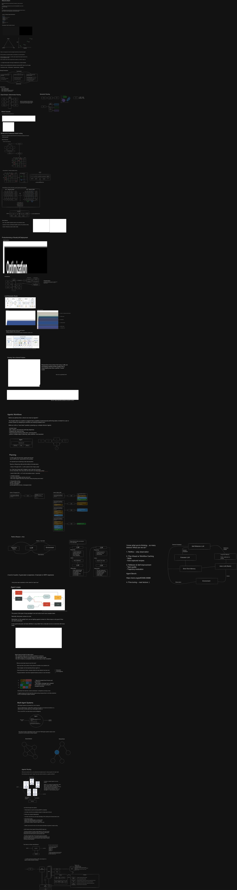